Last updated: 2023-12-06
Checks: 6 1
Knit directory: SMART-CARE_LungCancer/
This reproducible R Markdown analysis was created with workflowr (version 1.7.0). The Checks tab describes the reproducibility checks that were applied when the results were created. The Past versions tab lists the development history.
Great! Since the R Markdown file has been committed to the Git repository, you know the exact version of the code that produced these results.
Great job! The global environment was empty. Objects defined in the global environment can affect the analysis in your R Markdown file in unknown ways. For reproduciblity it’s best to always run the code in an empty environment.
The command set.seed(20230425) was run prior to running
the code in the R Markdown file. Setting a seed ensures that any results
that rely on randomness, e.g. subsampling or permutations, are
reproducible.
Great job! Recording the operating system, R version, and package versions is critical for reproducibility.
Nice! There were no cached chunks for this analysis, so you can be confident that you successfully produced the results during this run.
Using absolute paths to the files within your workflowr project makes it difficult for you and others to run your code on a different machine. Change the absolute path(s) below to the suggested relative path(s) to make your code more reproducible.
| absolute | relative |
|---|---|
| /Users/qianwu/Desktop/SMART-CARE_LungCancer | . |
Great! You are using Git for version control. Tracking code development and connecting the code version to the results is critical for reproducibility.
The results in this page were generated with repository version 7f8311b. See the Past versions tab to see a history of the changes made to the R Markdown and HTML files.
Note that you need to be careful to ensure that all relevant files for
the analysis have been committed to Git prior to generating the results
(you can use wflow_publish or
wflow_git_commit). workflowr only checks the R Markdown
file, but you know if there are other scripts or data files that it
depends on. Below is the status of the Git repository when the results
were generated:
Ignored files:
Ignored: .DS_Store
Ignored: .RData
Ignored: .Rhistory
Ignored: analysis/.DS_Store
Ignored: code/.DS_Store
Ignored: data/.DS_Store
Ignored: output/.DS_Store
Untracked files:
Untracked: analysis/feature_selection.Rmd
Untracked: code/archive/
Untracked: code/dataset_list.R
Untracked: code/workflowr_commands.R
Untracked: data/Discovery/
Untracked: data/MethodDev/
Untracked: data/aliquot_metadata.xlsx
Untracked: data/patient_metadata.xlsx
Untracked: data/sample_metadata.xlsx
Untracked: output/MethodDev/
Untracked: output/SC_meeting/
Note that any generated files, e.g. HTML, png, CSS, etc., are not included in this status report because it is ok for generated content to have uncommitted changes.
These are the previous versions of the repository in which changes were
made to the R Markdown (analysis/MethodDev_02_soa_DIA.Rmd)
and HTML (docs/MethodDev_02_soa_DIA.html) files. If you’ve
configured a remote Git repository (see ?wflow_git_remote),
click on the hyperlinks in the table below to view the files as they
were in that past version.
| File | Version | Author | Date | Message |
|---|---|---|---|---|
| Rmd | a3af65a | LiaoQianWu | 2023-11-24 | Redo single-omics analysis of all method development and discovery datasets |
| Rmd | bba1011 | LiaoQianWu | 2023-11-17 | Rearrange file locations and redo preprocessing of all method development datasets |
Description: Conduct univariate (t-test) and multivariate (PCA) analyses on individual datasets, i.e., New Plasma and Tissue DIA Proteomics from AG Krijgsveld and Tissue DIA Proteomics from AG Klingmüller (3 datasets), to have overview of data and take initial look at data power in terms of predicting patient cancer recurrence. Association between each feature (protein level) and cancer recurrence was tested by t-test, which captures significant features that can separate recurrence and non-recurrence patient groups. PCA was performed to view sources of data variance associated with certain metadata variables. At end of this report, summary of all considered Method Development datasets is displayed.
Metadata variables
Patient (n = 20):
Recurrence -> Cancer recurrences, Yes:No = 1:1
Gender -> Male:Female = 13:7
Age -> Diagnosis ages ranging from 56 to 84
Smoking -> Smoker:Ex-smoker:Non-Smoker = 3:14:3
Stage -> Pathological stages, IB:IIA:IIB = 11:8:1
Adjuvant -> Adjuvant chemotherapy, True:False = 13:7
Sample (n = 40):
Condition -> Tissue sample conditions, Tumor:Normal = 1:1
TimePoint -> Plasma sample collection time points, Baseline:2 years
later = 1:1
Load libraries
library('SummarizedExperiment')
library('pcaMethods')
library('limma')
library('proDA')
library('pheatmap')
library('ggrepel')
library('openxlsx')
library('tidyverse')
# Load user-defined functions
source('./code/analysis_pipeline.R')
source('./code/misc.R')
# Set plot theme
th <- theme_bw(base_size = 15) +
theme(axis.title = element_text(face = 'bold'),
axis.text = element_text(face = 'bold'),
axis.ticks = element_line(linewidth = 0.8),
legend.text = element_text(size = 15))Display associations between cancer recurrence and the other patient metadata variables to identify potential predictors (or confounders)
# Test associations between cancer recurrence and the other patient metadata variables
# Prepare patient metadata
proTissue <- readRDS('./data/MethodDev/AG_Krijgsveld/new_proTissueVsn.rds')
patientMetadat <- tibble::as_tibble(colData(proTissue)) %>%
dplyr::filter(!duplicated(Patient)) %>%
dplyr::select(Patient, Recurrence, Gender, Age, Smoking, Stage, Adjuvant)
patientRecur <- dplyr::select(patientMetadat, Patient, Recurrence)
patientMetadat <- dplyr::select(patientMetadat, -Recurrence)
testAsso(patientMetadat, patientRecur, cmn_col = 'Patient') %>%
dplyr::select(-Stat) Var1 Var2 pVal pValAdj Test
1 Smoking Recurrence 0.1637321 0.7522934 Chi-square
2 Gender Recurrence 0.3484426 0.7522934 Chi-square
3 Stage Recurrence 0.4513760 0.7522934 Chi-square
4 Age Recurrence 0.7129126 0.8911408 T-test
5 Adjuvant Recurrence 1.0000000 1.0000000 Chi-square# Load normalized data
proTissue <- readRDS('./data/MethodDev/AG_Krijgsveld/new_proTissueVsn.rds')
# Prepare feature annotation table
featAnnoTab <- tibble::as_tibble(rowData(proTissue), rownames = 'Protein') %>%
dplyr::select(Protein, Genes) %>%
dplyr::rename(Gene = Genes) %>%
tibble::column_to_rownames('Protein')
# Perform single-omics analysis
proTissueRes <- doSOA(proTissue, meta_var = 'Condition', pca_method = 'ppca', do_onlyPCA = T)Do metadata-assisted quality control
After testing associations between PCs and tissue sample conditions, we
found that PC1 nicely separates Tumor and Normal samples, which should
indicate good data quality.
pcTab <- proTissueRes$pcTab
ggplot(pcTab, aes(x=Condition, y=`PC1 (24.2%)`, color=Condition, fill=Condition)) +
geom_boxplot(alpha = 0.7, outlier.shape = NA) +
geom_jitter(position = position_jitter(0.3), size = 3, show.legend = F) +
scale_color_brewer(palette = 'Dark2') +
scale_fill_brewer(palette = 'Dark2') +
labs(x = 'Sample condition') +
th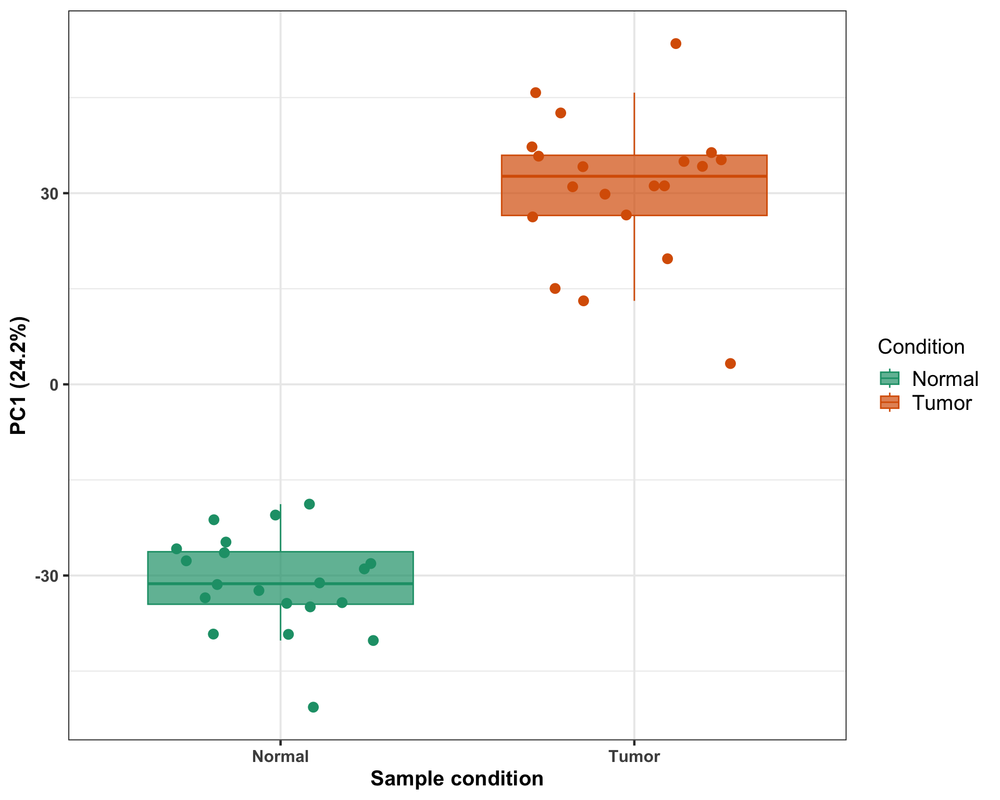 => Tumor and Normal tissue samples will be analyzed separately for two reasons: (1) They are characteristically different and might be offsets to each other, and (2) Normal tissues is always obtainable in case that Tumor tissues were not preserved after surgery.
# Subset certain samples
proTumor <- proTissue[, which(colData(proTissue)$Condition == 'Tumor')]
# Perform single-omics analysis
proTumorRes <- doSingleOmicsAnalysis(proTumor, soa_metaVar = 'Recurrence', num_sigFeats = 6,
pca_method = 'ppca', num_PCs = 18, num_PCfeats = 30,
use_limma = F, use_proDA = T, feat_anno = featAnnoTab,
feat_conv = T, plot_title = NULL, show_rownames = F,
pca_metaVar = c('Recurrence', 'Gender', 'Age',
'Smoking', 'Stage', 'Adjuvant', 'TumorPurity'))Display significant associations between PCs (Var1) and sample metadata variables (Var2) to overview sources of variance in data
proTumorRes$data.var.source Var1 Var2 pVal pValAdj Stat Test
1 PC12 (3.7%) Stage 0.0132 0.550 5.640 ANOVA
2 PC15 (2.9%) Recurrence 0.0159 0.550 2.660 T-test
3 PC9 (4.4%) Age 0.0173 0.550 -0.526 Correlation
4 PC14 (3.3%) Gender 0.0175 0.550 -2.620 T-test
5 PC7 (5.8%) Adjuvant 0.0265 0.601 2.420 T-test
6 PC10 (4.3%) Smoking 0.0286 0.601 4.410 ANOVADisplay significant associations between features (Var1) and cancer recurrence (Var2). Owing to missing values, there may be situation that only few observations in sample groups, resulting in unreliable t-statistics. To this end, we used probabilistic dropout model (proDA) to account for data missingness.
proTumorRes$sig.feat.tab %>%
dplyr::select(-Test) Var1 Var2 pVal pValAdj Stat Gene
1 P15169 Recurrence 0.000393 0.972 -4.34 CPN1
2 Q9BQS2 Recurrence 0.000494 0.972 4.24 SYT15
3 Q93096 Recurrence 0.000735 0.972 4.06 PTP4A1
4 Q9NWW5 Recurrence 0.000806 0.972 4.02 CLN6
5 Q7LDG7 Recurrence 0.001060 0.972 -3.90 RASGRP2
6 P28290 Recurrence 0.001260 0.972 3.82 ITPRID2
7 Q9Y312 Recurrence 0.001570 0.972 3.72 AAR2
8 Q8NBN7 Recurrence 0.001920 0.972 3.63 RDH13
9 Q9BZK7 Recurrence 0.002130 0.972 -3.58 TBL1XR1
10 Q9NWS0 Recurrence 0.002740 0.972 3.47 PIH1D1
11 Q8TDW0 Recurrence 0.003570 0.972 3.35 LRRC8C
12 P54687 Recurrence 0.004120 0.972 -3.29 BCAT1
13 Q5VYS8 Recurrence 0.004290 0.972 -3.27 TUT7
14 Q8TDR0 Recurrence 0.004950 0.972 -3.20 TRAF3IP1
15 Q16585 Recurrence 0.005040 0.972 -3.19 SGCB
16 O15460 Recurrence 0.005260 0.972 -3.17 P4HA2
17 Q8TCS8 Recurrence 0.005350 0.972 3.17 PNPT1
18 P11586 Recurrence 0.005940 0.972 -3.12 MTHFD1
19 Q9NQT8 Recurrence 0.006110 0.972 3.11 KIF13B
20 Q96A58 Recurrence 0.006330 0.972 -3.09 RERG
21 Q16643 Recurrence 0.006360 0.972 -3.09 DBN1
22 P56181 Recurrence 0.006580 0.972 3.07 NDUFV3
23 Q9UDW1 Recurrence 0.006740 0.972 3.06 UQCR10
24 O14974 Recurrence 0.006830 0.972 -3.05 PPP1R12A
25 Q9UNF0 Recurrence 0.007150 0.972 3.03 PACSIN2
26 Q9BUR5 Recurrence 0.007370 0.972 3.02 APOO
27 Q6P6C2 Recurrence 0.007450 0.972 -3.01 ALKBH5
28 Q9HAB8 Recurrence 0.007510 0.972 3.01 PPCS
29 P0CG40 Recurrence 0.007640 0.972 3.00 SP9
30 Q969X1 Recurrence 0.007720 0.972 3.00 TMBIM1
31 O15484 Recurrence 0.008050 0.972 2.98 CAPN5
32 O14548 Recurrence 0.008660 0.972 2.95 COX7A2L
33 Q9Y277 Recurrence 0.008970 0.972 2.93 VDAC3
34 Q99487 Recurrence 0.009020 0.972 2.93 PAFAH2
35 Q9NVH1 Recurrence 0.009090 0.972 2.92 DNAJC11
36 O14949 Recurrence 0.009120 0.972 2.92 UQCRQ
37 P08133 Recurrence 0.009250 0.972 -2.91 ANXA6
38 Q9Y2J2 Recurrence 0.009380 0.972 -2.91 EPB41L3
39 P27694 Recurrence 0.009980 0.972 -2.88 RPA1
40 Q96P70 Recurrence 0.010500 0.972 -2.85 IPO9
41 O00330 Recurrence 0.010600 0.972 2.85 PDHX
42 P62891;Q59GN2 Recurrence 0.010900 0.972 -2.84 RPL39;RPL39P5
43 O15121 Recurrence 0.011100 0.972 -2.83 DEGS1
44 Q96AA3 Recurrence 0.011100 0.972 -2.83 RFT1
45 Q9NY33 Recurrence 0.011100 0.972 2.83 DPP3
46 P25325 Recurrence 0.011300 0.972 2.82 MPST
47 P05023 Recurrence 0.011500 0.972 2.81 ATP1A1
48 P41236 Recurrence 0.011600 0.972 -2.81 PPP1R2
49 P18669 Recurrence 0.011900 0.972 -2.80 PGAM1
50 Q8TD10 Recurrence 0.011900 0.972 -2.80 MIPOL1
51 P40189 Recurrence 0.012000 0.972 2.80 IL6ST
52 P78381 Recurrence 0.012100 0.972 2.79 SLC35A2
53 P29373 Recurrence 0.012300 0.972 -2.78 CRABP2
54 O43451 Recurrence 0.012700 0.972 -2.77 MGAM
55 Q9UL54 Recurrence 0.012700 0.972 -2.77 TAOK2
56 Q8TE77 Recurrence 0.012900 0.972 2.76 SSH3
57 Q96IQ7 Recurrence 0.013000 0.972 2.76 VSIG2
58 P21796 Recurrence 0.013200 0.972 2.75 VDAC1
59 Q7Z406 Recurrence 0.013300 0.972 2.75 MYH14
60 Q9NUP1 Recurrence 0.013400 0.972 2.74 BLOC1S4
61 P12544 Recurrence 0.013700 0.972 -2.73 GZMA
62 Q9HAV7 Recurrence 0.013900 0.972 2.72 GRPEL1
63 Q9Y6N5 Recurrence 0.014200 0.972 2.72 SQOR
64 Q8WXG6 Recurrence 0.014300 0.972 2.71 MADD
65 Q9NQT5 Recurrence 0.014300 0.972 -2.71 EXOSC3
66 P35244 Recurrence 0.014400 0.972 -2.71 RPA3
67 O94989 Recurrence 0.014500 0.972 2.70 ARHGEF15
68 Q16762 Recurrence 0.014500 0.972 2.71 TST
69 P26583 Recurrence 0.014900 0.972 -2.69 HMGB2
70 P13674 Recurrence 0.015000 0.972 -2.69 P4HA1
71 Q6FIF0 Recurrence 0.015300 0.972 2.68 ZFAND6
72 Q7RTP0 Recurrence 0.015300 0.972 2.68 NIPA1
73 Q8NBM8 Recurrence 0.015300 0.972 -2.68 PCYOX1L
74 O00478 Recurrence 0.015400 0.972 -2.68 BTN3A3
75 O14841 Recurrence 0.015400 0.972 2.68 OPLAH
76 P15260 Recurrence 0.015400 0.972 2.68 IFNGR1
77 Q6P158 Recurrence 0.015500 0.972 -2.67 DHX57
78 Q8IWP9 Recurrence 0.015700 0.972 -2.67 CCDC28A
79 P22695 Recurrence 0.016300 0.972 2.65 UQCRC2
80 Q5XXA6 Recurrence 0.016300 0.972 -2.65 ANO1
81 P09874 Recurrence 0.016500 0.972 -2.64 PARP1
82 P11182 Recurrence 0.016600 0.972 2.64 DBT
83 Q13232 Recurrence 0.017200 0.972 2.62 NME3
84 Q9BQ61 Recurrence 0.017200 0.972 -2.63 TRIR
85 Q9Y6C9 Recurrence 0.017200 0.972 2.62 MTCH2
86 A0A075B6I1 Recurrence 0.017500 0.972 -2.62 IGLV4-60
87 P21964 Recurrence 0.017500 0.972 2.62 COMT
88 Q14676 Recurrence 0.018000 0.972 -2.60 MDC1
89 A0AV96 Recurrence 0.018100 0.972 2.60 RBM47
90 A1IGU5 Recurrence 0.018400 0.972 2.59 ARHGEF37
91 Q6IC98 Recurrence 0.018600 0.972 2.59 GRAMD4
92 Q96Q11 Recurrence 0.018600 0.972 -2.59 TRNT1
93 Q2M1Z3 Recurrence 0.018800 0.972 2.58 ARHGAP31
94 Q9BYK8 Recurrence 0.019200 0.972 2.57 HELZ2
95 P08574 Recurrence 0.019300 0.972 2.57 CYC1
96 Q9H1Z4 Recurrence 0.019400 0.972 2.57 WDR13
97 P49447 Recurrence 0.019500 0.972 2.56 CYB561
98 O43772 Recurrence 0.020500 0.972 2.54 SLC25A20
99 O95202 Recurrence 0.020900 0.972 2.53 LETM1
100 O15211 Recurrence 0.021200 0.972 -2.52 RGL2
101 P19367 Recurrence 0.021400 0.972 2.52 HK1
102 Q86VU5 Recurrence 0.021400 0.972 2.52 COMTD1
103 O00425 Recurrence 0.021600 0.972 -2.52 IGF2BP3
104 P61962 Recurrence 0.021700 0.972 -2.51 DCAF7
105 Q9ULF5 Recurrence 0.022100 0.972 -2.50 SLC39A10
106 Q6UW02 Recurrence 0.022200 0.972 2.50 CYP20A1
107 Q16563 Recurrence 0.022400 0.972 2.50 SYPL1
108 P48163 Recurrence 0.022600 0.972 2.49 ME1
109 P46782 Recurrence 0.022700 0.972 -2.49 RPS5
110 Q02539 Recurrence 0.022800 0.972 -2.49 H1-1
111 Q96EP5 Recurrence 0.022900 0.972 2.49 DAZAP1
112 Q16539 Recurrence 0.023000 0.972 -2.49 MAPK14
113 Q96BP3 Recurrence 0.023100 0.972 -2.48 PPWD1
114 Q16527 Recurrence 0.023300 0.972 -2.48 CSRP2
115 Q15653 Recurrence 0.023500 0.972 2.48 NFKBIB
116 Q9BU61 Recurrence 0.023900 0.972 2.47 NDUFAF3
117 P54760 Recurrence 0.024000 0.972 2.47 EPHB4
118 Q9P266 Recurrence 0.024000 0.972 2.46 JCAD
119 P31930 Recurrence 0.024200 0.972 2.46 UQCRC1
120 Q07960 Recurrence 0.024200 0.972 2.46 ARHGAP1
121 Q8TED1 Recurrence 0.024200 0.972 -2.46 GPX8
122 Q9H0J4 Recurrence 0.024200 0.972 2.46 QRICH2
123 Q9H1C4 Recurrence 0.024200 0.972 2.46 UNC93B1
124 P42126 Recurrence 0.024300 0.972 2.46 ECI1
125 P05026 Recurrence 0.024400 0.972 2.46 ATP1B1
126 Q6P4A8 Recurrence 0.024400 0.972 -2.46 PLBD1
127 Q8IZH2 Recurrence 0.024400 0.972 -2.46 XRN1
128 P30626 Recurrence 0.024500 0.972 2.45 SRI
129 Q5R372 Recurrence 0.024800 0.972 -2.45 RABGAP1L
130 P20674 Recurrence 0.024900 0.972 2.45 COX5A
131 O15379 Recurrence 0.025000 0.972 -2.44 HDAC3
132 Q9C0B1 Recurrence 0.025100 0.972 -2.44 FTO
133 Q6XQN6 Recurrence 0.025200 0.972 2.44 NAPRT
134 P16949 Recurrence 0.025400 0.972 -2.44 STMN1
135 O14683 Recurrence 0.025700 0.972 2.43 TP53I11
136 P11802 Recurrence 0.025700 0.972 -2.43 CDK4
137 Q9Y572 Recurrence 0.025900 0.972 2.43 RIPK3
138 Q8TEQ8 Recurrence 0.026100 0.972 2.42 PIGO
139 Q9ULR0 Recurrence 0.026500 0.972 -2.42 ISY1
140 L0R6Q1 Recurrence 0.026600 0.972 2.41 SLC35A4
141 Q5XKP0 Recurrence 0.026700 0.972 2.41 MICOS13
142 P48449 Recurrence 0.026800 0.972 2.41 LSS
143 Q4L180 Recurrence 0.026900 0.972 -2.41 FILIP1L
144 Q9Y2V7 Recurrence 0.027100 0.972 2.41 COG6
145 P27448 Recurrence 0.027200 0.972 -2.40 MARK3
146 Q0P6H9 Recurrence 0.027200 0.972 2.40 TMEM62
147 Q9NWU1 Recurrence 0.027600 0.972 2.40 OXSM
148 Q12891 Recurrence 0.028400 0.972 2.38 HYAL2
149 Q9NRP0 Recurrence 0.028700 0.972 -2.38 OSTC
150 Q9ULP9 Recurrence 0.029800 0.972 2.36 TBC1D24
151 P00156 Recurrence 0.030600 0.972 2.35 MT-CYB
152 Q9P2P5 Recurrence 0.030900 0.972 2.34 HECW2
153 P33991 Recurrence 0.031100 0.972 -2.34 MCM4
154 Q14318 Recurrence 0.031100 0.972 -2.34 FKBP8
155 Q96B23 Recurrence 0.031600 0.972 2.33 C18orf25
156 Q9HBH5 Recurrence 0.031700 0.972 2.33 RDH14
157 Q16718 Recurrence 0.031800 0.972 2.33 NDUFA5
158 Q8N2F6 Recurrence 0.031800 0.972 2.33 ARMC10
159 Q9UN86 Recurrence 0.031900 0.972 -2.33 G3BP2
160 O95573 Recurrence 0.032100 0.972 2.32 ACSL3
161 Q9Y314 Recurrence 0.032100 0.972 2.32 NOSIP
162 Q8N465 Recurrence 0.032500 0.972 2.32 D2HGDH
163 Q2TAA5 Recurrence 0.032700 0.972 -2.31 ALG11
164 Q5SW79 Recurrence 0.032800 0.972 -2.31 CEP170
165 Q9NVV0 Recurrence 0.032800 0.972 -2.31 TMEM38B
166 Q8IUH3 Recurrence 0.032900 0.972 2.31 RBM45
167 Q9Y548 Recurrence 0.033000 0.972 2.31 YIPF1
168 Q14802 Recurrence 0.033200 0.972 2.31 FXYD3
169 Q16850 Recurrence 0.033300 0.972 2.30 CYP51A1
170 P07437 Recurrence 0.033900 0.972 -2.30 TUBB
171 Q96AB3 Recurrence 0.034100 0.972 2.29 ISOC2
172 Q9H8Y8 Recurrence 0.034100 0.972 2.29 GORASP2
173 Q8NBJ4 Recurrence 0.034300 0.972 2.29 GOLM1
174 P50479 Recurrence 0.034400 0.972 -2.29 PDLIM4
175 Q8NFP9 Recurrence 0.034700 0.972 2.28 NBEA
176 Q7L3T8 Recurrence 0.035100 0.972 2.28 PARS2
177 Q6P996 Recurrence 0.036200 0.972 2.26 PDXDC1
178 Q8TD16 Recurrence 0.036200 0.972 -2.26 BICD2
179 Q99735 Recurrence 0.036200 0.972 2.26 MGST2
180 P49795 Recurrence 0.036400 0.972 -2.26 RGS19
181 P83876 Recurrence 0.036800 0.972 -2.26 TXNL4A
182 P04406 Recurrence 0.036900 0.972 -2.25 GAPDH
183 Q9Y5B8 Recurrence 0.037000 0.972 -2.25 NME7
184 Q9NNW7 Recurrence 0.037100 0.972 2.25 TXNRD2
185 Q8IYB5 Recurrence 0.037200 0.972 2.25 SMAP1
186 P35659 Recurrence 0.037600 0.972 -2.24 DEK
187 P15927 Recurrence 0.037700 0.972 -2.24 RPA2
188 Q15020 Recurrence 0.037800 0.972 -2.24 SART3
189 Q8NDA8 Recurrence 0.038000 0.972 2.24 MROH1
190 Q14534 Recurrence 0.038800 0.972 2.23 SQLE
191 P35270 Recurrence 0.039000 0.972 2.23 SPR
192 O75907 Recurrence 0.039500 0.972 2.22 DGAT1
193 Q9UBW7 Recurrence 0.039700 0.972 -2.22 ZMYM2
194 Q9BVM4 Recurrence 0.039900 0.972 2.22 GGACT
195 O14681 Recurrence 0.040000 0.972 2.21 EI24
196 Q6UWE0 Recurrence 0.040000 0.972 2.21 LRSAM1
197 P54886 Recurrence 0.040200 0.972 2.21 ALDH18A1
198 Q14157 Recurrence 0.040300 0.972 -2.21 UBAP2L
199 P10997 Recurrence 0.040500 0.972 2.21 IAPP
200 O43395 Recurrence 0.040700 0.972 -2.20 PRPF3
201 Q96I25 Recurrence 0.040700 0.972 -2.20 RBM17
202 P15144 Recurrence 0.041000 0.972 -2.20 ANPEP
203 Q8N8S7 Recurrence 0.041000 0.972 -2.20 ENAH
204 Q9NVA1 Recurrence 0.041000 0.972 2.20 UQCC1
205 P04070 Recurrence 0.041400 0.972 -2.20 PROC
206 O00472 Recurrence 0.041800 0.972 2.19 ELL2
207 P55209 Recurrence 0.041800 0.972 -2.19 NAP1L1
208 Q8N129 Recurrence 0.041800 0.972 -2.19 CNPY4
209 Q9P2K3 Recurrence 0.041800 0.972 -2.19 RCOR3
210 P45381 Recurrence 0.041900 0.972 -2.19 ASPA
211 Q14746 Recurrence 0.042200 0.972 2.19 COG2
212 Q63HM1 Recurrence 0.042400 0.972 2.18 AFMID
213 P27986 Recurrence 0.042600 0.972 -2.18 PIK3R1
214 Q9Y5Y7 Recurrence 0.042800 0.972 2.18 LYVE1
215 Q16854 Recurrence 0.043000 0.972 2.18 DGUOK
216 Q9ULC4 Recurrence 0.043400 0.972 -2.17 MCTS1
217 P0DMM9;P0DMN0 Recurrence 0.043600 0.972 2.17 SULT1A3;SULT1A4
218 Q99611 Recurrence 0.043600 0.972 2.17 SEPHS2
219 Q99623 Recurrence 0.043700 0.972 2.17 PHB2
220 Q8N392 Recurrence 0.043800 0.972 -2.17 ARHGAP18
221 Q00688 Recurrence 0.044100 0.972 -2.16 FKBP3
222 Q9BUB7 Recurrence 0.044200 0.972 2.16 TMEM70
223 Q92504 Recurrence 0.044400 0.972 2.16 SLC39A7
224 Q8IXM2 Recurrence 0.044500 0.972 -2.16 BAP18
225 Q96EK4 Recurrence 0.044600 0.972 -2.16 THAP11
226 Q7Z7E8 Recurrence 0.045000 0.972 -2.15 UBE2Q1
227 P49137 Recurrence 0.045100 0.972 -2.15 MAPKAPK2
228 Q96C24 Recurrence 0.045400 0.972 -2.15 SYTL4
229 O43852 Recurrence 0.045600 0.972 -2.15 CALU
230 Q6DKJ4 Recurrence 0.045600 0.972 -2.15 NXN
231 Q13277 Recurrence 0.045900 0.972 2.14 STX3
232 Q14376 Recurrence 0.046000 0.972 2.14 GALE
233 Q71U36 Recurrence 0.046000 0.972 -2.14 TUBA1A
234 Q8TEM1 Recurrence 0.046200 0.972 -2.14 NUP210
235 P99999 Recurrence 0.046300 0.972 2.14 CYCS
236 Q96N58 Recurrence 0.046400 0.972 -2.14 ZNF578
237 Q96GK7 Recurrence 0.046700 0.972 2.14 FAHD2A
238 O60502 Recurrence 0.046800 0.972 -2.13 OGA
239 P19634 Recurrence 0.046900 0.972 2.13 SLC9A1
240 P47985 Recurrence 0.047300 0.972 2.13 UQCRFS1
241 P24390 Recurrence 0.047500 0.972 2.13 KDELR1
242 Q9NZD2 Recurrence 0.047500 0.972 2.13 GLTP
243 Q96RE7 Recurrence 0.047800 0.972 -2.12 NACC1
244 Q92851 Recurrence 0.047900 0.972 -2.12 CASP10
245 Q9BSY9 Recurrence 0.048000 0.972 2.12 DESI2
246 P61604 Recurrence 0.048100 0.972 2.12 HSPE1
247 Q9Y3C0 Recurrence 0.048100 0.972 -2.12 WASHC3
248 P46199 Recurrence 0.048400 0.972 2.12 MTIF2
249 Q6UXB2 Recurrence 0.048700 0.972 2.11 CXCL17
250 P28288 Recurrence 0.049000 0.972 2.11 ABCD3
251 P27816 Recurrence 0.049200 0.972 -2.11 MAP4
252 Q13177 Recurrence 0.049300 0.972 -2.11 PAK2
253 Q7Z5K2 Recurrence 0.049400 0.972 -2.11 WAPL
254 Q9NX14 Recurrence 0.050000 0.972 2.10 NDUFB11Visualize molecular signatures of significant features in data. Note that features in rows are ordered by t-statistics.
proTumorRes$sig.feat.heat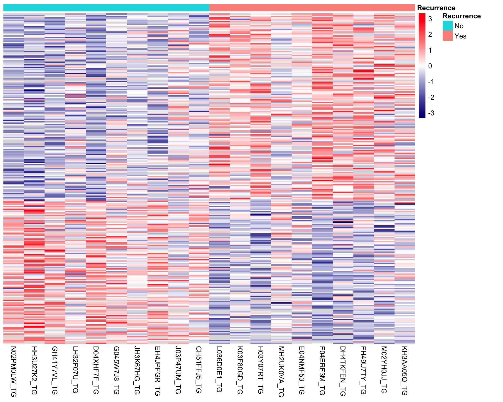
Visualize top significant features identified in Tumor samples (ns: p > 0.05, \(*\): p <= 0.05, \(**\): p <= 0.01, \(***\): p <= 0.001)
# Prepare data matrix and metadata including both Tumor and Normal samples
datMat <- proTissueRes$data
smpAnnoTab <- proTissueRes$smpMetadata
# Prepare significant feature table
featSigAssoTab <- proTumorRes$sig.feat.tab
num_sigFeats <- 6
gpLevel = c('Yes_Tumor', 'No_Tumor', 'Yes_Normal', 'No_Normal')
condiCol = c('grey50', 'firebrick') #c(Normal, Tumor)
# Extract top significant features and prepare needed information
topSigFeats <- featSigAssoTab[1:num_sigFeats,] %>%
dplyr::select(Var1, Gene) %>%
dplyr::mutate(newVar1 = paste0(Var1, ' (', Gene, ')'),
newVar1 = factor(newVar1, levels = unique(newVar1)))
topSigFeatDat <- tibble::as_tibble(datMat[topSigFeats$Var1,], rownames = 'Var1') %>%
tidyr::pivot_longer(cols = -'Var1', names_to = 'Sample', values_to = 'Abundance') %>%
dplyr::left_join(topSigFeats, by = 'Var1') %>%
dplyr::left_join(smpAnnoTab, by = 'Sample') %>%
dplyr::mutate(Recur_Condi = paste0(Recurrence, '_', Condition),
Recur_Condi = factor(Recur_Condi, levels = gpLevel))
ggplot(topSigFeatDat, aes(x=Recur_Condi, y=Abundance, col=Condition, fill=Recurrence)) +
geom_boxplot(alpha = 1, outlier.shape = NA, linewidth = 1) +
geom_jitter(position = position_jitter(0.2), size = 2, show.legend = F) +
ggpubr::stat_compare_means(method = 't.test', paired = F, method.args = list(var.equal = T),
comparisons = list(c('Yes_Tumor', 'No_Tumor'), c('Yes_Normal', 'No_Normal')),
label = 'p.signif', tip.length = 0.015, bracket.size = 0.7, size = 4) +
labs(x = 'Recurrence') +
scale_color_manual(values = condiCol) +
scale_fill_manual(values=c('#00BFC4', '#F8766D')) +
facet_wrap(vars(newVar1), scales = 'free') +
th + theme(strip.text = element_text(size = 13, face = 'bold'),
axis.text.x = element_text(angle = 45, hjust = 1, vjust = 1))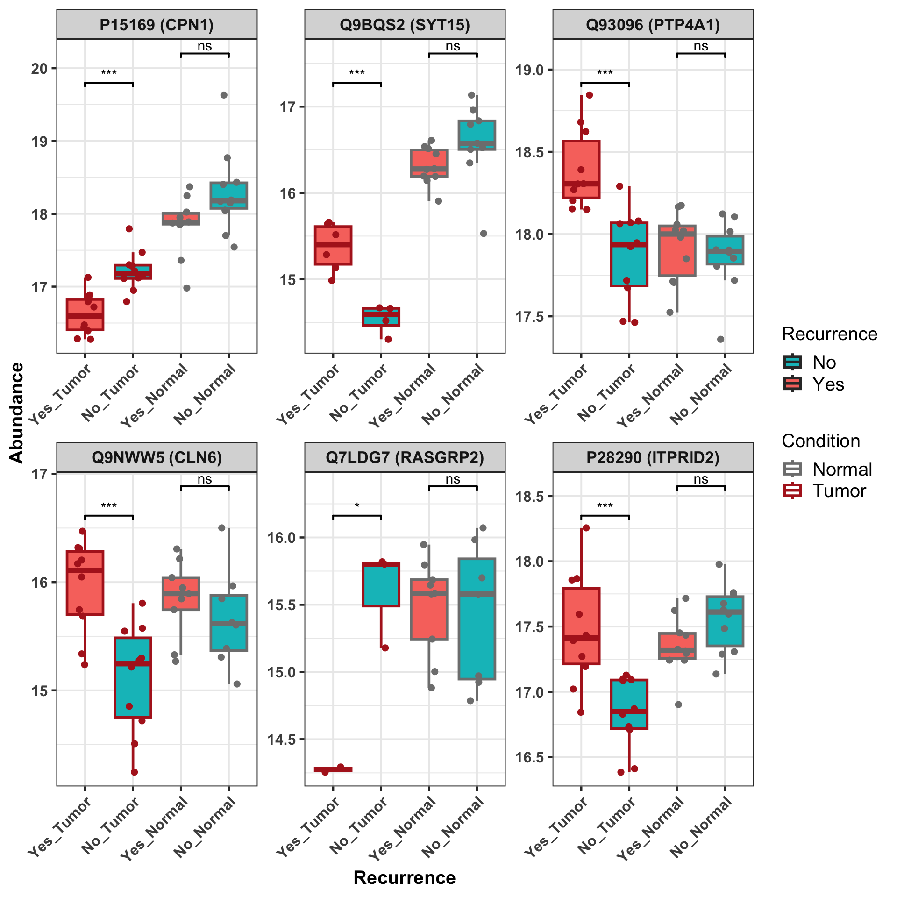
Assess data power by p-value histogram
proTumorRes$pval.hist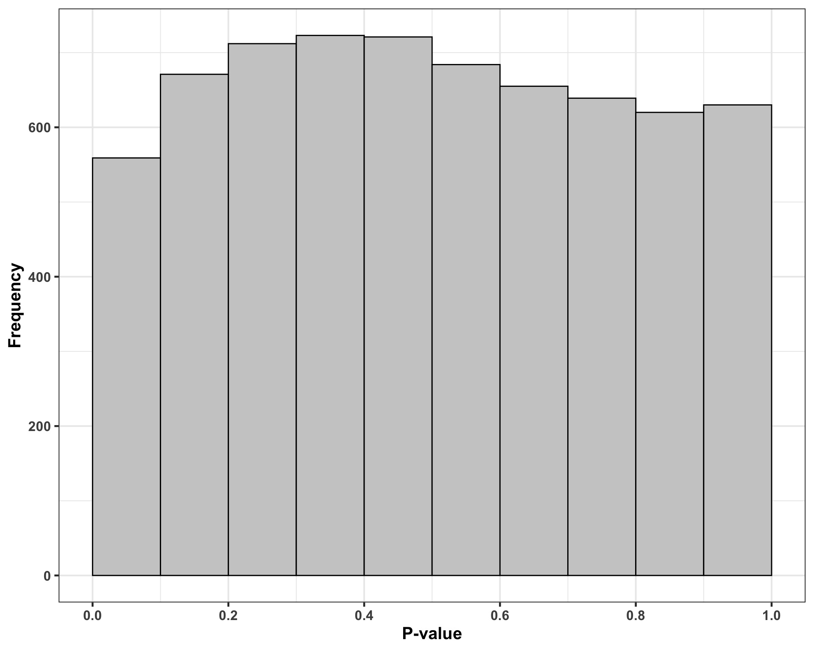
Display significant associations between PCs (Var1) and cancer recurrence (Var2)
proTumorRes$sig.pc.tab Var1 Var2 pVal pValAdj Stat Test
1 PC15 (2.9%) Recurrence 0.0159 0.285 2.66 T-testVisualize significant PCs and display their top features with greatest absolute loadings
proTumorRes$sig.pc.dist$PC15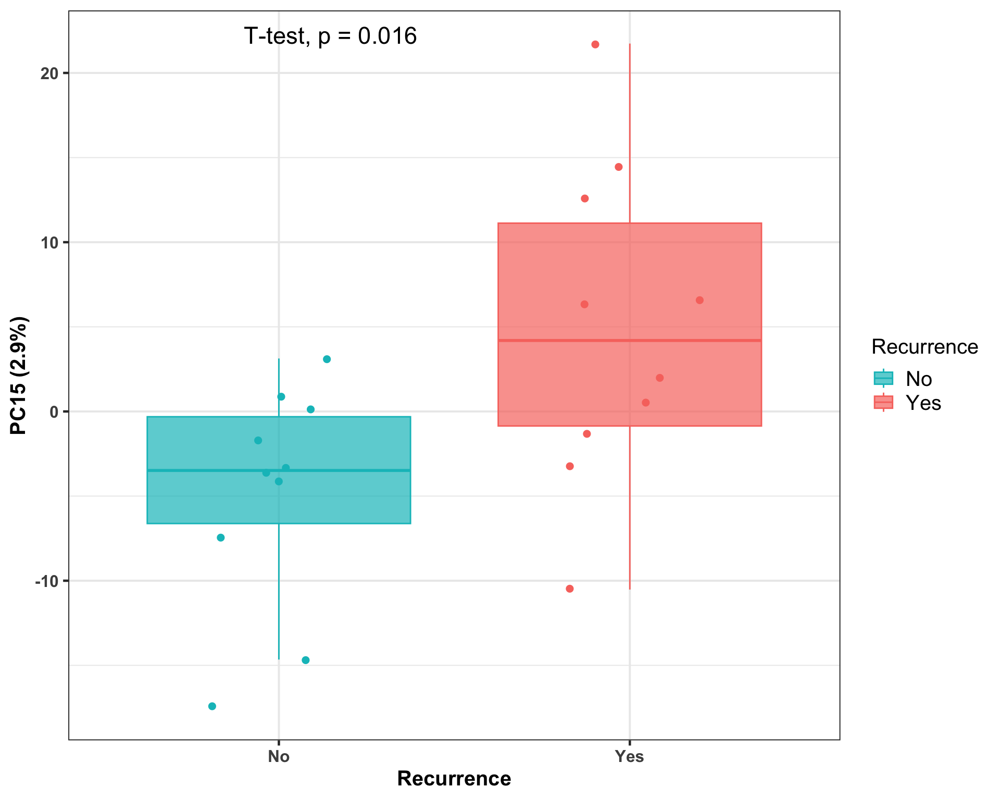
proTumorRes$pc.top.feat.tab$PC15 Feature Loading Gene
1 Q8TE57 0.1670 ADAMTS16
2 P56470 -0.1000 LGALS4
3 P20930 0.0880 FLG
4 Q9Y6R7 0.0870 FCGBP
5 Q13421 -0.0849 MSLN
6 O60760 0.0829 HPGDS
7 Q8N6M0 0.0788 OTUD6B
8 Q15109 -0.0671 AGER
9 P22894 -0.0657 MMP8
10 P35247 0.0644 SFTPD
11 P46439 0.0640 GSTM5
12 P56856 0.0638 CLDN18
13 P16050 -0.0636 ALOX15
14 P30838 0.0619 ALDH3A1
15 K7EJ46 -0.0617 SMIM22
16 P15559 0.0617 NQO1
17 P20142 -0.0614 PGC
18 O00602 -0.0610 FCN1
19 Q53GD3 -0.0603 SLC44A4
20 P02776;P10720 0.0600 PF4;PF4V1
21 Q9BW30 -0.0594 TPPP3
22 P23141 0.0588 CES1
23 P29373 -0.0585 CRABP2
24 Q96GP6 0.0574 SCARF2
25 P35527 -0.0564 KRT9
26 P02144 -0.0564 MB
27 Q9NWW5 0.0557 CLN6
28 P46020 -0.0547 PHKA1
29 Q7Z7G0 0.0547 ABI3BP
30 P53420 -0.0543 COL4A4# Subset certain samples
proNormal <- proTissue[, which(colData(proTissue)$Condition == 'Normal')]
# Perform single-omics analysis
proNormalRes <- doSingleOmicsAnalysis(proNormal, soa_metaVar = 'Recurrence', num_sigFeats = 6,
pca_method = 'ppca', num_PCs = 18, num_PCfeats = 30,
use_limma = F, use_proDA = T, feat_anno = featAnnoTab,
feat_conv = T, plot_title = NULL, show_rownames = F,
pca_metaVar = c('Recurrence', 'Gender', 'Age',
'Smoking', 'Stage', 'Adjuvant'))Display significant associations between PCs (Var1) and sample metadata variables (Var2) to overview sources of variance in data
proNormalRes$data.var.source Var1 Var2 pVal pValAdj Stat Test
1 PC5 (6.6%) Stage 0.00246 0.237 8.73 ANOVA
2 PC16 (2.5%) Adjuvant 0.00439 0.237 3.26 T-test
3 PC4 (8.1%) Gender 0.01620 0.583 2.65 T-test
4 PC7 (5%) Gender 0.02220 0.600 2.50 T-test
5 PC13 (3.3%) Recurrence 0.03380 0.646 -2.30 T-test
6 PC1 (15.7%) Stage 0.03680 0.646 4.03 ANOVA
7 PC8 (4.2%) Stage 0.04530 0.646 3.73 ANOVA
8 PC18 (2%) Gender 0.04780 0.646 2.12 T-testDisplay significant associations between features (Var1) and cancer recurrence (Var2)
sig.feat.tab <- proNormalRes$sig.feat.tab %>%
dplyr::select(-Test)
sig.feat.tab$Var1[142] <- 'P09086;P14859'
sig.feat.tab$Gene[142] <- 'POU2F1;POU2F2'
sig.feat.tab$Var1[319] <- 'P0DP23;P0DP24'
sig.feat.tab$Gene[319] <- 'CALM1;CALM2'
sig.feat.tab Var1 Var2 pVal pValAdj Stat Gene
1 Q9NUM3 Recurrence 9.34e-10 6.18e-06 11.50 SLC39A9
2 Q96RU2 Recurrence 1.14e-06 3.76e-03 7.16 USP28
3 Q9Y6M7 Recurrence 2.74e-06 5.78e-03 6.71 SLC4A7
4 Q8NBP0 Recurrence 3.49e-06 5.78e-03 -6.58 TTC13
5 Q15262 Recurrence 1.49e-04 1.97e-01 4.78 PTPRK
6 P08579 Recurrence 2.73e-04 2.93e-01 4.51 SNRPB2
7 Q9Y6R4 Recurrence 3.10e-04 2.93e-01 4.45 MAP3K4
8 Q9UNP9 Recurrence 5.21e-04 3.69e-01 4.21 PPIE
9 Q8IYB8 Recurrence 5.38e-04 3.69e-01 4.20 SUPV3L1
10 P17655 Recurrence 5.58e-04 3.69e-01 -4.18 CAPN2
11 Q9NXR1 Recurrence 7.30e-04 4.39e-01 -4.06 NDE1
12 Q9UKU9 Recurrence 8.05e-04 4.43e-01 -4.02 ANGPTL2
13 Q9H939 Recurrence 1.13e-03 5.73e-01 3.87 PSTPIP2
14 Q8WW59 Recurrence 1.36e-03 6.24e-01 3.78 SPRYD4
15 Q14653 Recurrence 1.42e-03 6.24e-01 3.77 IRF3
16 Q7L311 Recurrence 1.90e-03 7.30e-01 -3.63 ARMCX2
17 Q13356 Recurrence 2.05e-03 7.30e-01 3.60 PPIL2
18 Q9H8H2 Recurrence 2.16e-03 7.30e-01 3.58 DDX31
19 Q99650 Recurrence 2.28e-03 7.30e-01 3.55 OSMR
20 Q9H0A0 Recurrence 2.30e-03 7.30e-01 3.55 NAT10
21 Q9BTC8 Recurrence 2.32e-03 7.30e-01 3.54 MTA3
22 Q8TB03 Recurrence 2.64e-03 7.39e-01 -3.49 CXorf38
23 Q9NX20 Recurrence 2.64e-03 7.39e-01 3.49 MRPL16
24 Q9UBS0 Recurrence 2.68e-03 7.39e-01 -3.48 RPS6KB2
25 O15523 Recurrence 2.91e-03 7.39e-01 -3.44 DDX3Y
26 O75052 Recurrence 2.99e-03 7.39e-01 3.43 NOS1AP
27 Q92508 Recurrence 3.16e-03 7.39e-01 -3.40 PIEZO1
28 Q9BTZ2 Recurrence 3.19e-03 7.39e-01 3.40 DHRS4
29 Q9H490 Recurrence 3.24e-03 7.39e-01 3.39 PIGU
30 P54802 Recurrence 3.63e-03 7.70e-01 3.34 NAGLU
31 A2RU37 Recurrence 3.85e-03 7.70e-01 -3.31 LINC02872
32 Q9Y5P4 Recurrence 3.86e-03 7.70e-01 3.31 CERT1
33 Q9UKX5 Recurrence 4.00e-03 7.70e-01 -3.30 ITGA11
34 P82664 Recurrence 4.69e-03 7.70e-01 3.23 MRPS10
35 Q9BT17 Recurrence 5.07e-03 7.70e-01 -3.19 MTG1
36 Q9GZP9 Recurrence 5.17e-03 7.70e-01 -3.18 DERL2
37 Q9Y6Y0 Recurrence 5.20e-03 7.70e-01 3.18 IVNS1ABP
38 P40855 Recurrence 5.23e-03 7.70e-01 -3.18 PEX19
39 P55263 Recurrence 5.32e-03 7.70e-01 3.17 ADK
40 Q14657 Recurrence 5.45e-03 7.70e-01 -3.16 LAGE3
41 Q2M1Z3 Recurrence 5.45e-03 7.70e-01 -3.16 ARHGAP31
42 P55209 Recurrence 5.47e-03 7.70e-01 -3.16 NAP1L1
43 Q7Z4W1 Recurrence 5.49e-03 7.70e-01 3.15 DCXR
44 P05204 Recurrence 5.61e-03 7.70e-01 -3.14 HMGN2
45 Q8N5G2 Recurrence 5.74e-03 7.70e-01 3.13 MACO1
46 Q8IUF1;Q9BRT8 Recurrence 5.75e-03 7.70e-01 -3.13 CBWD1;CBWD2
47 Q9H3M7 Recurrence 5.83e-03 7.70e-01 -3.13 TXNIP
48 P41227 Recurrence 5.96e-03 7.70e-01 -3.12 NAA10
49 P11310 Recurrence 6.08e-03 7.70e-01 3.11 ACADM
50 Q9UKG9 Recurrence 6.10e-03 7.70e-01 -3.11 CROT
51 P07942 Recurrence 6.15e-03 7.70e-01 -3.10 LAMB1
52 Q9HAS0 Recurrence 6.37e-03 7.70e-01 -3.09 C17orf75
53 Q13445 Recurrence 6.90e-03 7.70e-01 3.05 TMED1
54 Q8IV38 Recurrence 6.91e-03 7.70e-01 3.05 ANKMY2
55 Q9NXW2 Recurrence 6.95e-03 7.70e-01 -3.05 DNAJB12
56 Q96RP7 Recurrence 6.97e-03 7.70e-01 -3.05 GAL3ST4
57 Q9Y6M1 Recurrence 6.98e-03 7.70e-01 -3.04 IGF2BP2
58 O43493 Recurrence 7.05e-03 7.70e-01 3.04 TGOLN2
59 Q15493 Recurrence 7.15e-03 7.70e-01 3.03 RGN
60 Q9UNQ2 Recurrence 7.33e-03 7.70e-01 3.02 DIMT1
61 P62328 Recurrence 7.53e-03 7.70e-01 -3.01 TMSB4X
62 Q6BCY4 Recurrence 7.53e-03 7.70e-01 3.01 CYB5R2
63 P35869 Recurrence 7.55e-03 7.70e-01 -3.01 AHR
64 Q8IX01 Recurrence 7.56e-03 7.70e-01 3.01 SUGP2
65 O00264 Recurrence 7.77e-03 7.70e-01 -2.99 PGRMC1
66 Q99733 Recurrence 7.80e-03 7.70e-01 -2.99 NAP1L4
67 O94762 Recurrence 7.97e-03 7.70e-01 -2.98 RECQL5
68 Q27J81 Recurrence 8.09e-03 7.70e-01 -2.98 INF2
69 Q14515 Recurrence 8.11e-03 7.70e-01 -2.98 SPARCL1
70 Q9Y3B7 Recurrence 8.17e-03 7.70e-01 2.97 MRPL11
71 Q92506 Recurrence 8.40e-03 7.70e-01 2.96 HSD17B8
72 Q86YS6 Recurrence 8.58e-03 7.70e-01 2.95 RAB43
73 Q8TCG2 Recurrence 8.89e-03 7.70e-01 2.93 PI4K2B
74 P09001 Recurrence 8.97e-03 7.70e-01 2.93 MRPL3
75 Q99611 Recurrence 9.08e-03 7.70e-01 2.92 SEPHS2
76 Q8IZ21 Recurrence 9.11e-03 7.70e-01 -2.92 PHACTR4
77 P42771 Recurrence 9.14e-03 7.70e-01 2.92 CDKN2A
78 Q13790 Recurrence 9.22e-03 7.70e-01 -2.92 APOF
79 Q96S59 Recurrence 9.22e-03 7.70e-01 -2.92 RANBP9
80 P06127 Recurrence 9.99e-03 7.70e-01 -2.88 CD5
81 P24821 Recurrence 1.01e-02 7.70e-01 -2.87 TNC
82 Q9UBX1 Recurrence 1.02e-02 7.70e-01 -2.87 CTSF
83 P52294 Recurrence 1.03e-02 7.70e-01 -2.86 KPNA1
84 Q9BQE4 Recurrence 1.04e-02 7.70e-01 -2.86 SELENOS
85 Q9NP97 Recurrence 1.04e-02 7.70e-01 -2.86 DYNLRB1
86 Q02040 Recurrence 1.05e-02 7.70e-01 -2.85 AKAP17A
87 Q8IYS1 Recurrence 1.06e-02 7.70e-01 -2.85 PM20D2
88 Q9Y3E5 Recurrence 1.06e-02 7.70e-01 2.85 PTRH2
89 P60866 Recurrence 1.10e-02 7.70e-01 2.83 RPS20
90 Q14457 Recurrence 1.13e-02 7.70e-01 2.82 BECN1
91 Q92759 Recurrence 1.13e-02 7.70e-01 2.82 GTF2H4
92 Q96S44 Recurrence 1.14e-02 7.70e-01 2.82 TP53RK
93 P78539 Recurrence 1.16e-02 7.70e-01 -2.81 SRPX
94 Q15847 Recurrence 1.17e-02 7.70e-01 -2.81 ADIRF
95 P21359 Recurrence 1.18e-02 7.70e-01 2.80 NF1
96 O43237 Recurrence 1.19e-02 7.70e-01 -2.80 DYNC1LI2
97 Q15056 Recurrence 1.20e-02 7.70e-01 -2.79 EIF4H
98 P42126 Recurrence 1.21e-02 7.70e-01 2.79 ECI1
99 Q96PE3 Recurrence 1.21e-02 7.70e-01 -2.79 INPP4A
100 P52789 Recurrence 1.24e-02 7.70e-01 2.78 HK2
101 Q9P0M6 Recurrence 1.25e-02 7.70e-01 2.77 MACROH2A2
102 O95298 Recurrence 1.27e-02 7.70e-01 2.77 NDUFC2
103 Q99569 Recurrence 1.27e-02 7.70e-01 -2.77 PKP4
104 O43752 Recurrence 1.30e-02 7.70e-01 2.76 STX6
105 P23921 Recurrence 1.31e-02 7.70e-01 -2.75 RRM1
106 P63000 Recurrence 1.33e-02 7.70e-01 -2.75 RAC1
107 Q8WUH6 Recurrence 1.33e-02 7.70e-01 -2.75 TMEM263
108 P04083 Recurrence 1.34e-02 7.70e-01 -2.74 ANXA1
109 Q99543 Recurrence 1.34e-02 7.70e-01 2.74 DNAJC2
110 O15357 Recurrence 1.35e-02 7.70e-01 2.74 INPPL1
111 P62750 Recurrence 1.38e-02 7.70e-01 2.73 RPL23A
112 Q96FZ2 Recurrence 1.38e-02 7.70e-01 -2.73 HMCES
113 Q9UHP3 Recurrence 1.39e-02 7.70e-01 -2.72 USP25
114 Q8WVY7 Recurrence 1.44e-02 7.70e-01 2.71 UBLCP1
115 P48059 Recurrence 1.45e-02 7.70e-01 -2.70 LIMS1
116 O95833 Recurrence 1.46e-02 7.70e-01 -2.70 CLIC3
117 Q9H9J2 Recurrence 1.46e-02 7.70e-01 -2.70 MRPL44
118 O15270 Recurrence 1.51e-02 7.70e-01 -2.68 SPTLC2
119 Q8IUC4 Recurrence 1.52e-02 7.70e-01 -2.68 RHPN2
120 Q8N4T8 Recurrence 1.52e-02 7.70e-01 2.68 CBR4
121 O96014 Recurrence 1.54e-02 7.70e-01 -2.68 WNT11
122 O75911 Recurrence 1.55e-02 7.70e-01 -2.67 DHRS3
123 P51159 Recurrence 1.56e-02 7.70e-01 2.67 RAB27A
124 Q9H7Z7 Recurrence 1.58e-02 7.70e-01 2.66 PTGES2
125 Q8TF65 Recurrence 1.62e-02 7.70e-01 -2.65 GIPC2
126 Q5TA45 Recurrence 1.63e-02 7.70e-01 2.65 INTS11
127 Q9BWU1 Recurrence 1.63e-02 7.70e-01 -2.65 CDK19
128 Q9H6T3 Recurrence 1.64e-02 7.70e-01 -2.65 RPAP3
129 P00390 Recurrence 1.65e-02 7.70e-01 2.64 GSR
130 P24723 Recurrence 1.66e-02 7.70e-01 -2.64 PRKCH
131 Q99828 Recurrence 1.67e-02 7.70e-01 -2.64 CIB1
132 Q9NPA8 Recurrence 1.68e-02 7.70e-01 -2.64 ENY2
133 Q9H3H5 Recurrence 1.69e-02 7.70e-01 2.63 DPAGT1
134 Q8TF01 Recurrence 1.70e-02 7.70e-01 -2.63 PNISR
135 O75909 Recurrence 1.72e-02 7.70e-01 2.63 CCNK
136 Q4G148 Recurrence 1.72e-02 7.70e-01 -2.62 GXYLT1
137 Q9UIG0 Recurrence 1.72e-02 7.70e-01 2.63 BAZ1B
138 P07477;Q9BYE2 Recurrence 1.73e-02 7.70e-01 -2.62 PRSS1;TMPRSS13
139 Q8N5I2 Recurrence 1.76e-02 7.70e-01 -2.61 ARRDC1
140 Q9NR28 Recurrence 1.78e-02 7.70e-01 2.61 DIABLO
141 O95777 Recurrence 1.83e-02 7.70e-01 2.60 LSM8
142 P09086;P14859 Recurrence 1.86e-02 7.70e-01 2.59 POU2F1;POU2F2
143 P61247 Recurrence 1.89e-02 7.70e-01 2.58 RPS3A
144 P62888 Recurrence 1.90e-02 7.70e-01 2.58 RPL30
145 P41236 Recurrence 1.92e-02 7.70e-01 -2.57 PPP1R2
146 Q15653 Recurrence 1.97e-02 7.70e-01 2.56 NFKBIB
147 Q9BRV3 Recurrence 1.98e-02 7.70e-01 2.56 SLC50A1
148 P83881 Recurrence 1.99e-02 7.70e-01 -2.55 RPL36A
149 Q8WVM0 Recurrence 1.99e-02 7.70e-01 2.55 TFB1M
150 Q5T1V6 Recurrence 2.02e-02 7.70e-01 -2.55 DDX59
151 Q8NBQ5 Recurrence 2.04e-02 7.70e-01 2.54 HSD17B11
152 O43395 Recurrence 2.05e-02 7.70e-01 2.54 PRPF3
153 Q9UMS0 Recurrence 2.05e-02 7.70e-01 -2.54 NFU1
154 Q8N3P4 Recurrence 2.07e-02 7.70e-01 -2.54 VPS8
155 Q86YB8 Recurrence 2.08e-02 7.70e-01 2.53 ERO1B
156 P37235 Recurrence 2.13e-02 7.70e-01 -2.52 HPCAL1
157 P08123 Recurrence 2.16e-02 7.70e-01 -2.52 COL1A2
158 Q15080 Recurrence 2.19e-02 7.70e-01 2.51 NCF4
159 O43708 Recurrence 2.20e-02 7.70e-01 2.51 GSTZ1
160 P20908 Recurrence 2.20e-02 7.70e-01 -2.51 COL5A1
161 Q8NBK3 Recurrence 2.21e-02 7.70e-01 -2.51 SUMF1
162 O95273 Recurrence 2.22e-02 7.70e-01 -2.50 CCNDBP1
163 Q14244 Recurrence 2.24e-02 7.70e-01 -2.50 MAP7
164 Q9H5X1 Recurrence 2.29e-02 7.70e-01 2.49 CIAO2A
165 Q9UGI8 Recurrence 2.30e-02 7.70e-01 -2.48 TES
166 Q86YM7 Recurrence 2.32e-02 7.70e-01 -2.48 HOMER1
167 P62841 Recurrence 2.33e-02 7.70e-01 2.48 RPS15
168 P18887 Recurrence 2.34e-02 7.70e-01 2.48 XRCC1
169 P21953 Recurrence 2.35e-02 7.70e-01 -2.47 BCKDHB
170 Q495W5 Recurrence 2.35e-02 7.70e-01 -2.47 FUT11
171 Q13753 Recurrence 2.42e-02 7.70e-01 -2.46 LAMC2
172 P23469 Recurrence 2.43e-02 7.70e-01 2.46 PTPRE
173 Q9H300 Recurrence 2.45e-02 7.70e-01 2.45 PARL
174 Q9P2P5 Recurrence 2.46e-02 7.70e-01 -2.45 HECW2
175 P49406 Recurrence 2.51e-02 7.70e-01 2.44 MRPL19
176 Q05513 Recurrence 2.54e-02 7.70e-01 -2.44 PRKCZ
177 Q99417 Recurrence 2.55e-02 7.70e-01 -2.44 MYCBP
178 Q9GZZ8 Recurrence 2.56e-02 7.70e-01 -2.43 LACRT
179 P51689 Recurrence 2.57e-02 7.70e-01 -2.43 ARSD
180 P22455 Recurrence 2.58e-02 7.70e-01 -2.43 FGFR4
181 Q9Y619 Recurrence 2.61e-02 7.70e-01 -2.42 SLC25A15
182 Q9BZG8 Recurrence 2.67e-02 7.70e-01 -2.41 DPH1
183 P02452 Recurrence 2.68e-02 7.70e-01 -2.41 COL1A1
184 Q9H8Y8 Recurrence 2.68e-02 7.70e-01 2.41 GORASP2
185 P34059 Recurrence 2.73e-02 7.70e-01 2.40 GALNS
186 Q99638 Recurrence 2.73e-02 7.70e-01 2.40 RAD9A
187 Q8NGC0 Recurrence 2.74e-02 7.70e-01 2.40 OR5AU1
188 P29474 Recurrence 2.76e-02 7.70e-01 -2.40 NOS3
189 O14493 Recurrence 2.78e-02 7.70e-01 -2.39 CLDN4
190 Q9HC84 Recurrence 2.79e-02 7.70e-01 -2.39 MUC5B
191 Q9NVV5 Recurrence 2.79e-02 7.70e-01 2.39 AIG1
192 Q08397 Recurrence 2.81e-02 7.70e-01 -2.39 LOXL1
193 Q8WXD5 Recurrence 2.81e-02 7.70e-01 2.39 GEMIN6
194 Q8NFD5 Recurrence 2.82e-02 7.70e-01 -2.39 ARID1B
195 Q9BV57 Recurrence 2.82e-02 7.70e-01 2.39 ADI1
196 Q9NVR2 Recurrence 2.82e-02 7.70e-01 2.39 INTS10
197 Q9GZS1 Recurrence 2.86e-02 7.70e-01 -2.38 POLR1E
198 Q9UJX2 Recurrence 2.86e-02 7.70e-01 -2.38 CDC23
199 P45954 Recurrence 2.87e-02 7.70e-01 2.38 ACADSB
200 Q96Q11 Recurrence 2.87e-02 7.70e-01 -2.38 TRNT1
201 P43405 Recurrence 2.88e-02 7.70e-01 2.38 SYK
202 Q9BZQ6 Recurrence 2.89e-02 7.70e-01 -2.38 EDEM3
203 P22570 Recurrence 2.91e-02 7.70e-01 2.37 FDXR
204 Q14331 Recurrence 2.91e-02 7.70e-01 2.37 FRG1
205 Q9Y3C6 Recurrence 2.91e-02 7.70e-01 2.37 PPIL1
206 Q86U44 Recurrence 2.92e-02 7.70e-01 2.37 METTL3
207 Q96P44 Recurrence 2.92e-02 7.70e-01 -2.37 COL21A1
208 Q9BUJ2 Recurrence 2.92e-02 7.70e-01 2.37 HNRNPUL1
209 P01700 Recurrence 2.95e-02 7.70e-01 -2.36 IGLV1-47
210 Q96HH6 Recurrence 2.95e-02 7.70e-01 2.37 TMEM19
211 P84157 Recurrence 2.96e-02 7.70e-01 -2.36 MXRA7
212 O95396 Recurrence 2.98e-02 7.70e-01 -2.36 MOCS3
213 P62312 Recurrence 3.00e-02 7.70e-01 2.36 LSM6
214 P30049 Recurrence 3.02e-02 7.70e-01 2.35 ATP5F1D
215 O60264 Recurrence 3.05e-02 7.70e-01 2.35 SMARCA5
216 Q8NDA8 Recurrence 3.07e-02 7.70e-01 2.34 MROH1
217 Q9Y259 Recurrence 3.07e-02 7.70e-01 -2.34 CHKB
218 A0A0J9YXX1 Recurrence 3.09e-02 7.70e-01 2.34 IGHV5-10-1
219 Q9H0E3 Recurrence 3.09e-02 7.70e-01 2.34 SAP130
220 P50914 Recurrence 3.12e-02 7.70e-01 2.34 RPL14
221 Q9P2L0 Recurrence 3.13e-02 7.70e-01 -2.34 WDR35
222 Q9NPY3 Recurrence 3.15e-02 7.70e-01 -2.33 CD93
223 Q9H2M9 Recurrence 3.16e-02 7.70e-01 2.33 RAB3GAP2
224 Q03135 Recurrence 3.19e-02 7.70e-01 -2.33 CAV1
225 Q14112 Recurrence 3.19e-02 7.70e-01 -2.33 NID2
226 Q6ZVM7 Recurrence 3.19e-02 7.70e-01 -2.33 TOM1L2
227 Q96HJ9 Recurrence 3.21e-02 7.70e-01 2.32 FMC1
228 Q9Y2V2 Recurrence 3.22e-02 7.70e-01 -2.32 CARHSP1
229 Q99715 Recurrence 3.23e-02 7.70e-01 -2.32 COL12A1
230 Q13137 Recurrence 3.24e-02 7.70e-01 -2.32 CALCOCO2
231 P37268 Recurrence 3.25e-02 7.70e-01 2.32 FDFT1
232 Q8N4Q0 Recurrence 3.25e-02 7.70e-01 2.32 ZADH2
233 P46777 Recurrence 3.26e-02 7.70e-01 2.31 RPL5
234 P18621 Recurrence 3.28e-02 7.70e-01 2.31 RPL17
235 Q9HBH5 Recurrence 3.31e-02 7.70e-01 2.31 RDH14
236 Q9NY47 Recurrence 3.31e-02 7.70e-01 -2.31 CACNA2D2
237 O95817 Recurrence 3.32e-02 7.70e-01 -2.31 BAG3
238 P51116 Recurrence 3.32e-02 7.70e-01 -2.31 FXR2
239 Q5VWZ2 Recurrence 3.32e-02 7.70e-01 2.31 LYPLAL1
240 Q8WW12 Recurrence 3.32e-02 7.70e-01 -2.31 PCNP
241 Q92572 Recurrence 3.32e-02 7.70e-01 2.31 AP3S1
242 P38919 Recurrence 3.33e-02 7.70e-01 2.30 EIF4A3
243 P55064 Recurrence 3.33e-02 7.70e-01 2.31 AQP5
244 Q14151 Recurrence 3.34e-02 7.70e-01 2.30 SAFB2
245 Q96G03 Recurrence 3.34e-02 7.70e-01 2.30 PGM2
246 O00425 Recurrence 3.37e-02 7.70e-01 -2.30 IGF2BP3
247 O14683 Recurrence 3.37e-02 7.70e-01 2.30 TP53I11
248 Q15113 Recurrence 3.40e-02 7.70e-01 -2.30 PCOLCE
249 Q6P1X6 Recurrence 3.40e-02 7.70e-01 2.29 C8orf82
250 Q13751 Recurrence 3.42e-02 7.70e-01 -2.29 LAMB3
251 O14561 Recurrence 3.43e-02 7.70e-01 -2.29 NDUFAB1
252 P54098 Recurrence 3.43e-02 7.70e-01 2.29 POLG
253 Q16787 Recurrence 3.43e-02 7.70e-01 -2.29 LAMA3
254 Q3SXM5 Recurrence 3.44e-02 7.70e-01 2.29 HSDL1
255 P61923 Recurrence 3.45e-02 7.70e-01 2.29 COPZ1
256 Q15363 Recurrence 3.46e-02 7.70e-01 2.29 TMED2
257 Q9BYT8 Recurrence 3.49e-02 7.70e-01 2.28 NLN
258 P02654 Recurrence 3.52e-02 7.70e-01 -2.28 APOC1
259 Q5J8M3 Recurrence 3.52e-02 7.70e-01 2.28 EMC4
260 Q8N7H5 Recurrence 3.52e-02 7.70e-01 2.28 PAF1
261 Q5RI15 Recurrence 3.56e-02 7.70e-01 -2.27 COX20
262 Q9NP55 Recurrence 3.56e-02 7.70e-01 -2.27 BPIFA1
263 P98194 Recurrence 3.57e-02 7.70e-01 2.27 ATP2C1
264 Q96Q05 Recurrence 3.57e-02 7.70e-01 -2.27 TRAPPC9
265 Q8NCH0 Recurrence 3.58e-02 7.70e-01 -2.27 CHST14
266 Q9NYY8 Recurrence 3.58e-02 7.70e-01 -2.27 FASTKD2
267 Q9Y3Q8 Recurrence 3.58e-02 7.70e-01 -2.27 TSC22D4
268 Q9H089 Recurrence 3.66e-02 7.70e-01 -2.26 LSG1
269 Q04941 Recurrence 3.68e-02 7.70e-01 -2.26 PLP2
270 O75556 Recurrence 3.72e-02 7.70e-01 -2.25 SCGB2A1
271 Q9P258 Recurrence 3.73e-02 7.70e-01 2.25 RCC2
272 P11047 Recurrence 3.74e-02 7.70e-01 -2.25 LAMC1
273 P60604 Recurrence 3.77e-02 7.70e-01 -2.24 UBE2G2
274 Q92879 Recurrence 3.79e-02 7.70e-01 2.24 CELF1
275 O75427 Recurrence 3.80e-02 7.70e-01 2.24 LRCH4
276 Q5JTV8 Recurrence 3.82e-02 7.70e-01 2.24 TOR1AIP1
277 Q16378 Recurrence 3.83e-02 7.70e-01 -2.24 PRR4
278 P62277 Recurrence 3.85e-02 7.70e-01 2.23 RPS13
279 O00587 Recurrence 3.86e-02 7.70e-01 -2.23 MFNG
280 O75787 Recurrence 3.86e-02 7.70e-01 2.23 ATP6AP2
281 Q7Z3B4 Recurrence 3.87e-02 7.70e-01 2.23 NUP54
282 Q86UD1 Recurrence 3.88e-02 7.70e-01 -2.23 OAF
283 Q8WU79 Recurrence 3.90e-02 7.70e-01 2.23 SMAP2
284 Q7L4I2 Recurrence 3.94e-02 7.70e-01 -2.22 RSRC2
285 Q8TB96 Recurrence 3.95e-02 7.70e-01 -2.22 ITFG1
286 O43159 Recurrence 3.98e-02 7.70e-01 2.22 RRP8
287 P28702 Recurrence 3.98e-02 7.70e-01 2.22 RXRB
288 Q14678 Recurrence 4.01e-02 7.70e-01 -2.21 KANK1
289 O60502 Recurrence 4.06e-02 7.70e-01 -2.21 OGA
290 Q16543 Recurrence 4.07e-02 7.70e-01 -2.20 CDC37
291 Q9GZS3 Recurrence 4.07e-02 7.70e-01 -2.20 WDR61
292 O95208 Recurrence 4.08e-02 7.70e-01 -2.20 EPN2
293 P15924 Recurrence 4.08e-02 7.70e-01 -2.20 DSP
294 Q9BVK6 Recurrence 4.08e-02 7.70e-01 2.20 TMED9
295 O94829 Recurrence 4.10e-02 7.70e-01 -2.20 IPO13
296 P25311 Recurrence 4.10e-02 7.70e-01 -2.20 AZGP1
297 P41732 Recurrence 4.10e-02 7.70e-01 -2.20 TSPAN7
298 Q9Y5X2 Recurrence 4.11e-02 7.70e-01 2.20 SNX8
299 Q92544 Recurrence 4.13e-02 7.70e-01 2.20 TM9SF4
300 P47914 Recurrence 4.15e-02 7.70e-01 -2.20 RPL29
301 Q9P0I2 Recurrence 4.15e-02 7.70e-01 2.20 EMC3
302 Q9BUB7 Recurrence 4.16e-02 7.70e-01 2.19 TMEM70
303 P82914 Recurrence 4.20e-02 7.70e-01 2.19 MRPS15
304 Q96KN1 Recurrence 4.20e-02 7.70e-01 -2.19 LRATD2
305 Q9UBK8 Recurrence 4.23e-02 7.70e-01 -2.19 MTRR
306 O14776 Recurrence 4.24e-02 7.70e-01 2.18 TCERG1
307 Q96BQ5 Recurrence 4.24e-02 7.70e-01 2.18 CCDC127
308 O76003 Recurrence 4.26e-02 7.70e-01 -2.18 GLRX3
309 P48637 Recurrence 4.28e-02 7.70e-01 2.18 GSS
310 Q9Y5B9 Recurrence 4.28e-02 7.70e-01 2.18 SUPT16H
311 Q5VWJ9 Recurrence 4.29e-02 7.70e-01 2.18 SNX30
312 Q9Y6A9 Recurrence 4.31e-02 7.70e-01 2.18 SPCS1
313 Q5GFL6 Recurrence 4.33e-02 7.70e-01 -2.17 VWA2
314 P78368;Q9Y6M4 Recurrence 4.34e-02 7.70e-01 -2.17 CSNK1G2;CSNK1G3
315 Q9H8L6 Recurrence 4.35e-02 7.70e-01 -2.17 MMRN2
316 Q96IZ7 Recurrence 4.36e-02 7.70e-01 -2.17 RSRC1
317 O14920 Recurrence 4.38e-02 7.70e-01 -2.17 IKBKB
318 Q96HS1 Recurrence 4.38e-02 7.70e-01 2.17 PGAM5
319 P0DP23;P0DP24 Recurrence 4.39e-02 7.70e-01 -2.17 CALM1;CALM2
320 Q969X6 Recurrence 4.39e-02 7.70e-01 2.17 UTP4
321 Q12923 Recurrence 4.42e-02 7.70e-01 2.16 PTPN13
322 Q96BJ8 Recurrence 4.43e-02 7.70e-01 -2.16 ELMO3
323 Q5S007 Recurrence 4.45e-02 7.70e-01 2.16 LRRK2
324 O14639 Recurrence 4.47e-02 7.70e-01 -2.16 ABLIM1
325 P51809 Recurrence 4.48e-02 7.70e-01 2.16 VAMP7
326 Q9NVA1 Recurrence 4.48e-02 7.70e-01 2.16 UQCC1
327 P12830 Recurrence 4.49e-02 7.70e-01 -2.16 CDH1
328 Q58FG1 Recurrence 4.50e-02 7.70e-01 2.15 HSP90AA4P
329 Q6ZWT7 Recurrence 4.51e-02 7.70e-01 -2.15 MBOAT2
330 O15230 Recurrence 4.54e-02 7.70e-01 -2.15 LAMA5
331 Q15031 Recurrence 4.55e-02 7.70e-01 2.15 LARS2
332 P02458 Recurrence 4.57e-02 7.70e-01 -2.15 COL2A1
333 P16050 Recurrence 4.58e-02 7.70e-01 -2.15 ALOX15
334 Q8N5M4 Recurrence 4.58e-02 7.70e-01 2.15 TTC9C
335 Q92922 Recurrence 4.58e-02 7.70e-01 -2.15 SMARCC1
336 Q96E52 Recurrence 4.59e-02 7.70e-01 2.14 OMA1
337 Q9H4E7 Recurrence 4.59e-02 7.70e-01 2.14 DEF6
338 Q9UHB9 Recurrence 4.59e-02 7.70e-01 2.14 SRP68
339 P62263 Recurrence 4.61e-02 7.70e-01 2.14 RPS14
340 P28068 Recurrence 4.63e-02 7.70e-01 2.14 HLA-DMB
341 Q6UXI9 Recurrence 4.63e-02 7.70e-01 -2.14 NPNT
342 Q9GZP8 Recurrence 4.63e-02 7.70e-01 -2.14 IMUP
343 Q92947 Recurrence 4.64e-02 7.70e-01 2.14 GCDH
344 P04156 Recurrence 4.65e-02 7.70e-01 -2.14 PRNP
345 O94901 Recurrence 4.67e-02 7.70e-01 -2.14 SUN1
346 Q8IXK2 Recurrence 4.67e-02 7.70e-01 2.14 GALNT12
347 P04632 Recurrence 4.69e-02 7.70e-01 -2.13 CAPNS1
348 Q6N075 Recurrence 4.70e-02 7.70e-01 -2.13 MFSD5
349 Q96JP5 Recurrence 4.72e-02 7.70e-01 -2.13 ZFP91
350 P07332 Recurrence 4.73e-02 7.70e-01 2.13 FES
351 Q9H239 Recurrence 4.73e-02 7.70e-01 -2.13 MMP28
352 Q14011 Recurrence 4.74e-02 7.70e-01 2.13 CIRBP
353 P63173 Recurrence 4.79e-02 7.70e-01 2.12 RPL38
354 Q5T9A4 Recurrence 4.79e-02 7.70e-01 2.12 ATAD3B
355 Q99805 Recurrence 4.79e-02 7.70e-01 2.12 TM9SF2
356 P02647 Recurrence 4.80e-02 7.70e-01 -2.12 APOA1
357 P14598 Recurrence 4.82e-02 7.70e-01 2.12 NCF1
358 Q05823 Recurrence 4.82e-02 7.70e-01 2.12 RNASEL
359 P29558;Q6XE24 Recurrence 4.83e-02 7.70e-01 -2.12 RBMS1;RBMS3
360 Q2TAA2 Recurrence 4.87e-02 7.70e-01 -2.11 IAH1
361 Q9UPU7 Recurrence 4.89e-02 7.70e-01 2.11 TBC1D2B
362 P34947 Recurrence 4.90e-02 7.70e-01 -2.11 GRK5
363 Q12805 Recurrence 4.90e-02 7.70e-01 -2.11 EFEMP1
364 Q14119 Recurrence 4.90e-02 7.70e-01 2.11 VEZF1
365 Q8ND24 Recurrence 4.90e-02 7.70e-01 -2.11 RNF214
366 P52434 Recurrence 4.93e-02 7.70e-01 2.11 POLR2H
367 Q8WVJ2 Recurrence 4.94e-02 7.70e-01 -2.11 NUDCD2
368 Q96PC3 Recurrence 4.94e-02 7.70e-01 -2.11 AP1S3
369 Q9Y3Y2 Recurrence 4.94e-02 7.70e-01 -2.11 CHTOP
370 P78345 Recurrence 4.95e-02 7.70e-01 2.11 RPP38
371 Q96PQ0 Recurrence 4.95e-02 7.70e-01 -2.11 SORCS2
372 Q9NWS8 Recurrence 4.95e-02 7.70e-01 2.11 RMND1Visualize molecular signatures of significant features in data. Note that features in rows are ordered by t-statistics.
proNormalRes$sig.feat.heat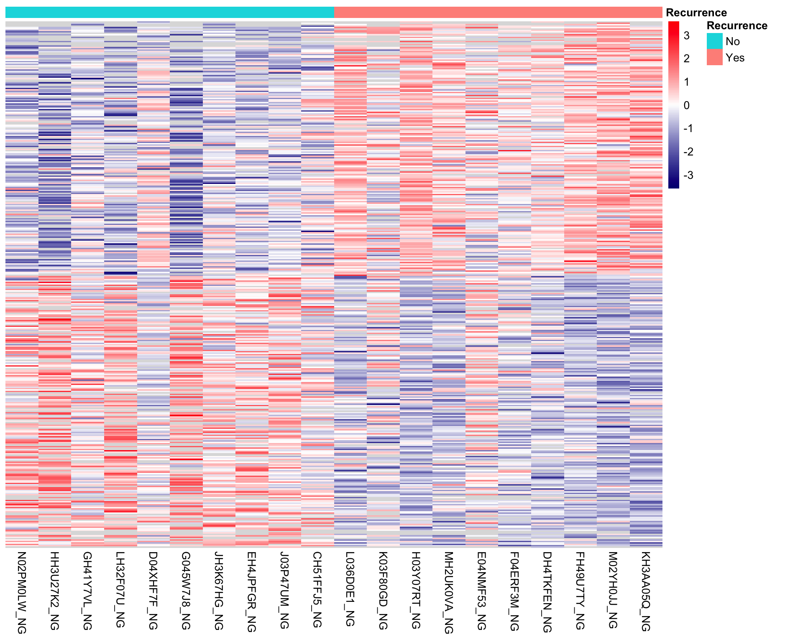
Visualize top significant features identified in Normal samples (ns: p > 0.05, \(*\): p <= 0.05, \(**\): p <= 0.01, \(***\): p <= 0.001)
# Prepare data matrix and metadata including both Tumor and Normal samples
datMat <- proTissueRes$data
smpAnnoTab <- proTissueRes$smpMetadata
# Prepare significant feature table
featSigAssoTab <- proNormalRes$sig.feat.tab
num_sigFeats <- 6
gpLevel = c('Yes_Normal', 'No_Normal', 'Yes_Tumor', 'No_Tumor')
condiCol = c('firebrick', 'grey50') #c(Normal, Tumor)
# Extract top significant features and prepare needed information
topSigFeats <- featSigAssoTab[1:num_sigFeats,] %>%
dplyr::select(Var1, Gene) %>%
dplyr::mutate(newVar1 = paste0(Var1, ' (', Gene, ')'),
newVar1 = factor(newVar1, levels = unique(newVar1)))
topSigFeatDat <- tibble::as_tibble(datMat[topSigFeats$Var1,], rownames = 'Var1') %>%
tidyr::pivot_longer(cols = -'Var1', names_to = 'Sample', values_to = 'Abundance') %>%
dplyr::left_join(topSigFeats, by = 'Var1') %>%
dplyr::left_join(smpAnnoTab, by = 'Sample') %>%
dplyr::mutate(Recur_Condi = paste0(Recurrence, '_', Condition),
Recur_Condi = factor(Recur_Condi, levels = gpLevel))
ggplot(topSigFeatDat, aes(x=Recur_Condi, y=Abundance, col=Condition, fill=Recurrence)) +
geom_boxplot(alpha = 1, outlier.shape = NA, linewidth = 1) +
geom_jitter(position = position_jitter(0.2), size = 2, show.legend = F) +
ggpubr::stat_compare_means(method = 't.test', paired = F, method.args = list(var.equal = T),
comparisons = list(c('Yes_Normal', 'No_Normal'), c('Yes_Tumor', 'No_Tumor')),
label = 'p.signif', tip.length = 0.015, bracket.size = 0.7, size = 4) +
labs(x = 'Recurrence') +
scale_color_manual(values = condiCol) +
scale_fill_manual(values=c('#00BFC4', '#F8766D')) +
facet_wrap(vars(newVar1), scales = 'free') +
th +
theme(strip.text = element_text(size = 13, face = 'bold'),
axis.text.x = element_text(angle = 45, hjust = 1, vjust = 1))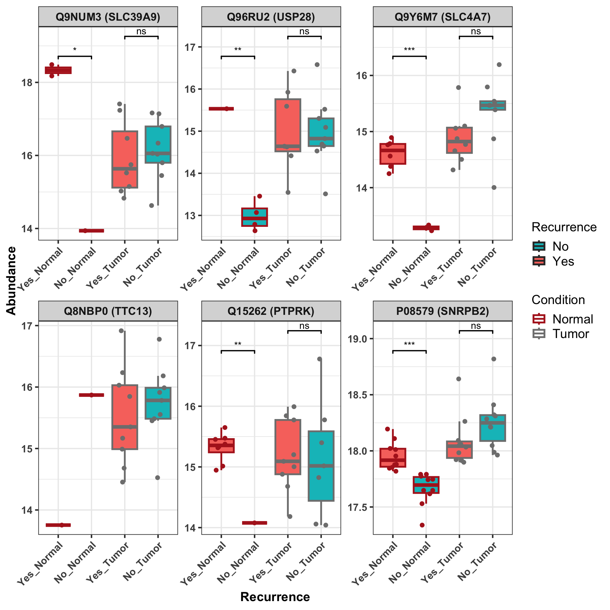
Assess data power by p-value histogram
proNormalRes$pval.hist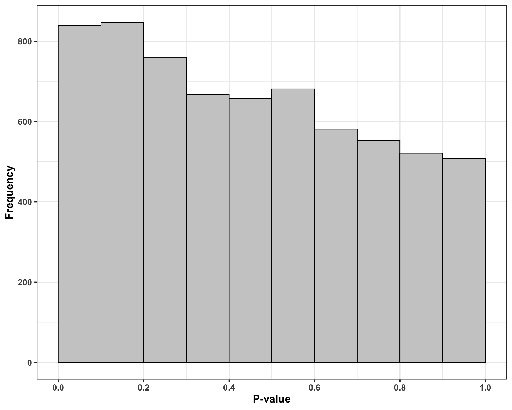
Display significant associations between PCs (Var1) and cancer recurrence (Var2)
proNormalRes$sig.pc.tab Var1 Var2 pVal pValAdj Stat Test
1 PC13 (3.3%) Recurrence 0.0338 0.603 -2.3 T-testVisualize significant PCs and display their top features with greatest absolute loadings
proNormalRes$sig.pc.dist$PC13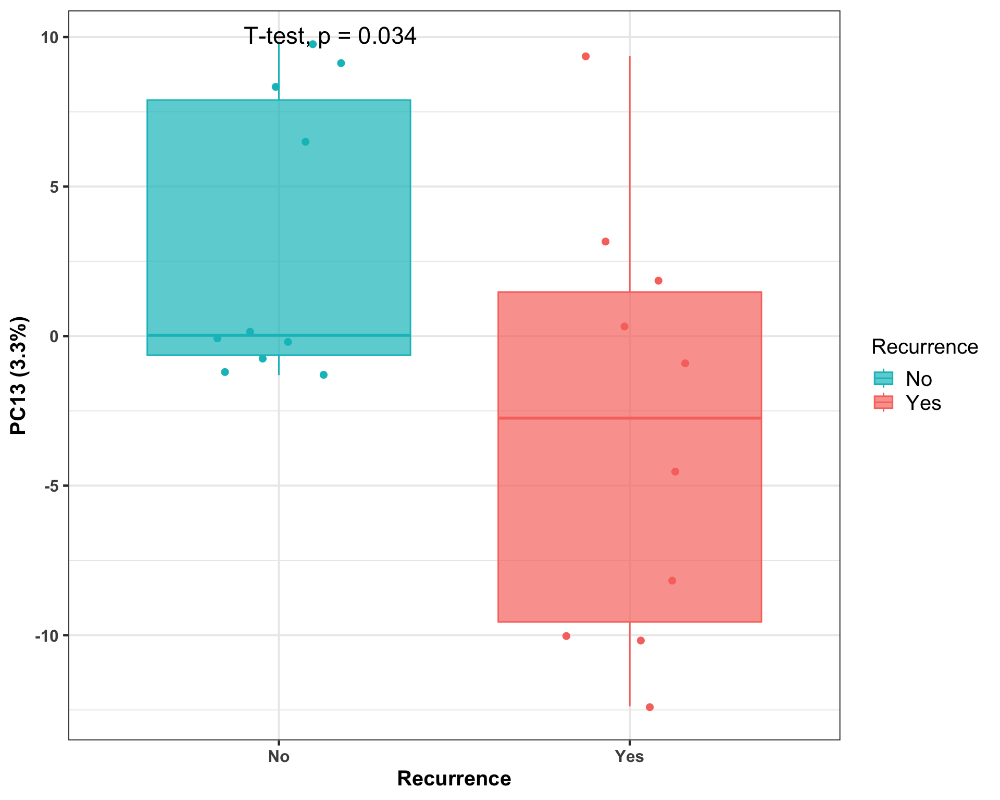
proNormalRes$pc.top.feat.tab$PC13 Feature Loading Gene
1 O75095 -0.1250 MEGF6
2 Q9P299 -0.1210 COPZ2
3 P11226 0.1180 MBL2
4 P78386 0.1060 KRT85
5 P35527 0.1010 KRT9
6 P78524 0.0893 DENND2B
7 Q8WU39 -0.0872 MZB1
8 A0A0J9YXX1 -0.0845 IGHV5-10-1
9 P04264 0.0833 KRT1
10 P28907 -0.0831 CD38
11 O43312 0.0799 MTSS1
12 P25067 0.0771 COL8A2
13 P01703 0.0754 IGLV1-40
14 Q68CK6 -0.0752 ACSM2B
15 P02144 0.0745 MB
16 O60637 0.0720 TSPAN3
17 P01861 0.0717 IGHG4
18 Q8IYJ3 0.0702 SYTL1
19 P07333 0.0701 CSF1R
20 Q15063 -0.0686 POSTN
21 P53365 -0.0649 ARFIP2
22 P28330 0.0643 ACADL
23 Q9UHL4 0.0642 DPP7
24 P16050 0.0641 ALOX15
25 Q9UN81 0.0619 L1RE1
26 A0A075B6I0 0.0608 IGLV8-61
27 P13645 0.0605 KRT10
28 Q9NYQ6 -0.0602 CELSR1
29 A3KN83 -0.0574 SBNO1
30 C9JLW8 0.0573 MCRIP1# Load normalized data
proTissue_Klin <- readRDS('./data/MethodDev/AG_Klingmueller/proTissueVsn.rds')
# Extract Method Development samples
proTissue_Klin <- proTissue_Klin[, colData(proTissue_Klin)$Cohort == 'MethodDev']
# Prepare feature annotation table
featAnnoTab <- tibble::as_tibble(rowData(proTissue_Klin), rownames = 'Protein') %>%
dplyr::select(Protein, PG.Genes) %>%
dplyr::rename(Gene = PG.Genes) %>%
tibble::column_to_rownames('Protein')
# Perform single-omics analysis
proTissueRes_Klin <- doSOA(proTissue_Klin, meta_var = 'Condition', pca_method = 'ppca', do_onlyPCA = T)Do metadata-assisted quality control
After testing associations between PCs and tissue sample conditions, we
found that PC1 nicely separates Tumor and Normal samples, which should
indicate good data quality.
pcTab <- proTissueRes_Klin$pcTab
ggplot(pcTab, aes(x=Condition, y=`PC1 (20.8%)`, color=Condition, fill=Condition)) +
geom_boxplot(alpha = 0.7, outlier.shape = NA) +
geom_jitter(position = position_jitter(0.3), size = 3, show.legend = F) +
scale_color_brewer(palette = 'Dark2') +
scale_fill_brewer(palette = 'Dark2') +
labs(x = 'Sample condition') +
th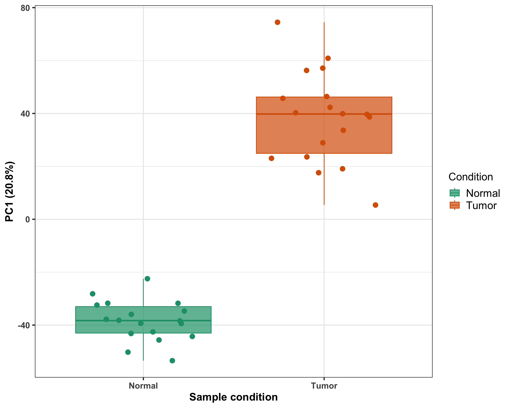 => Tumor and Normal tissue samples will be analyzed separately for two reasons: (1) They are characteristically different and might be offsets to each other, and (2) Normal tissues is always obtainable in case that Tumor tissues were not preserved after surgery.
# Subset certain samples
proTumor <- proTissue_Klin[, which(colData(proTissue_Klin)$Condition == 'Tumor')]
# Perform single-omics analysis
proTumorRes_Klin <- doSingleOmicsAnalysis(proTumor, soa_metaVar = 'Recurrence', num_sigFeats = 6,
pca_method = 'ppca', num_PCs = 16, num_PCfeats = 30,
use_limma = F, use_proDA = T, feat_anno = featAnnoTab,
feat_conv = T, plot_title = NULL, show_rownames = F,
pca_metaVar = c('Recurrence', 'Gender', 'Age',
'Smoking', 'Stage', 'Adjuvant', 'TumorPurity'))Display significant associations between PCs (Var1) and sample metadata variables (Var2) to overview sources of variance in data
proTumorRes_Klin$data.var.source Var1 Var2 pVal pValAdj Stat Test
1 PC3 (9.5%) Smoking 0.000545 0.0611 12.90 ANOVA
2 PC15 (3.1%) Recurrence 0.005350 0.2990 3.22 T-test
3 PC11 (4.1%) Gender 0.022000 0.7100 -2.54 T-test
4 PC14 (3.4%) Adjuvant 0.026200 0.7100 -2.45 T-test
5 PC11 (4.1%) Recurrence 0.031700 0.7100 -2.35 T-testDisplay significant associations between features (Var1) and cancer recurrence (Var2). Owing to missing values, there may be situation that only few observations in sample groups, resulting in unreliable t-statistics. To this end, we used probabilistic dropout model (proDA) to account for data missingness.
proTumorRes_Klin$sig.feat.tab Var1 Var2 pVal pValAdj Stat Test Gene
1 Q9Y3Q0 Recurrence 0.00007 0.578 5.31 T-test (proDA) NAALAD2
2 P0C626 Recurrence 0.00234 1.000 3.61 T-test (proDA) OR5G3
3 P08913 Recurrence 0.00366 1.000 3.40 T-test (proDA) ADRA2A
4 O75475 Recurrence 0.00439 1.000 -3.31 T-test (proDA) PSIP1
5 Q9Y3B8 Recurrence 0.00554 1.000 3.20 T-test (proDA) REXO2
6 Q8NFI3 Recurrence 0.00592 1.000 3.17 T-test (proDA) ENGASE
7 Q9BQ95 Recurrence 0.00718 1.000 3.08 T-test (proDA) ECSIT
8 Q9UN76 Recurrence 0.00852 1.000 -3.00 T-test (proDA) SLC6A14
9 Q92843 Recurrence 0.00865 1.000 2.99 T-test (proDA) BCL2L2
10 P05412 Recurrence 0.00879 1.000 -2.98 T-test (proDA) JUN
11 Q93091 Recurrence 0.00928 1.000 2.96 T-test (proDA) RNASE6
12 Q86Y79 Recurrence 0.01130 1.000 2.86 T-test (proDA) PTRH1
13 Q9H0X9 Recurrence 0.01130 1.000 2.86 T-test (proDA) OSBPL5
14 Q6IA69 Recurrence 0.01170 1.000 2.85 T-test (proDA) NADSYN1
15 Q15828 Recurrence 0.01290 1.000 2.80 T-test (proDA) CST6
16 Q68CR1 Recurrence 0.01430 1.000 2.75 T-test (proDA) SEL1L3
17 Q9BSE4 Recurrence 0.01510 1.000 2.72 T-test (proDA) HERPUD2
18 Q16647 Recurrence 0.01580 1.000 2.70 T-test (proDA) PTGIS
19 O15504 Recurrence 0.01700 1.000 -2.66 T-test (proDA) NUP42
20 Q93063 Recurrence 0.01710 1.000 -2.66 T-test (proDA) EXT2
21 Q8NBI5 Recurrence 0.01750 1.000 2.65 T-test (proDA) SLC43A3
22 Q9NRN7 Recurrence 0.01800 1.000 2.63 T-test (proDA) AASDHPPT
23 P01718 Recurrence 0.01850 1.000 2.62 T-test (proDA) IGLV3-27
24 P50151 Recurrence 0.01960 1.000 -2.59 T-test (proDA) GNG10
25 Q9NS00 Recurrence 0.01960 1.000 2.59 T-test (proDA) C1GALT1
26 Q99519 Recurrence 0.02010 1.000 2.58 T-test (proDA) NEU1
27 Q86UP3 Recurrence 0.02020 1.000 -2.58 T-test (proDA) ZFHX4
28 Q9Y320 Recurrence 0.02140 1.000 2.55 T-test (proDA) TMX2
29 Q5XKE5 Recurrence 0.02210 1.000 2.54 T-test (proDA) KRT79
30 P06280 Recurrence 0.02500 1.000 2.47 T-test (proDA) GLA
31 O00330 Recurrence 0.02560 1.000 2.46 T-test (proDA) PDHX
32 Q9BQ75 Recurrence 0.02570 1.000 -2.46 T-test (proDA) CMSS1
33 Q96M96 Recurrence 0.02670 1.000 -2.44 T-test (proDA) FGD4
34 Q8WVM0 Recurrence 0.02720 1.000 2.43 T-test (proDA) TFB1M
35 Q969V5 Recurrence 0.02770 1.000 2.42 T-test (proDA) MUL1
36 P10515 Recurrence 0.02780 1.000 2.42 T-test (proDA) DLAT
37 P41217 Recurrence 0.02790 1.000 2.42 T-test (proDA) CD200
38 Q9UMR5 Recurrence 0.02860 1.000 2.40 T-test (proDA) PPT2
39 L0R8F8 Recurrence 0.02870 1.000 2.40 T-test (proDA) MIEF1
40 Q9BVG9 Recurrence 0.02880 1.000 2.40 T-test (proDA) PTDSS2
41 Q96AQ6 Recurrence 0.02900 1.000 -2.40 T-test (proDA) PBXIP1
42 Q6PL18 Recurrence 0.02960 1.000 -2.39 T-test (proDA) ATAD2
43 Q9UL40 Recurrence 0.02970 1.000 -2.39 T-test (proDA) ZNF346
44 Q07960 Recurrence 0.02980 1.000 2.39 T-test (proDA) ARHGAP1
45 Q9H061 Recurrence 0.03000 1.000 2.38 T-test (proDA) TMEM126A
46 Q8NCG7 Recurrence 0.03010 1.000 2.38 T-test (proDA) DAGLB
47 Q99633 Recurrence 0.03010 1.000 -2.38 T-test (proDA) PRPF18
48 Q9UBX1 Recurrence 0.03060 1.000 2.37 T-test (proDA) CTSF
49 Q8IVS2 Recurrence 0.03150 1.000 2.36 T-test (proDA) MCAT
50 Q66PJ3 Recurrence 0.03180 1.000 -2.35 T-test (proDA) ARL6IP4
51 P16220 Recurrence 0.03200 1.000 -2.35 T-test (proDA) CREB1
52 Q9H8Y5 Recurrence 0.03250 1.000 -2.34 T-test (proDA) ANKZF1
53 Q9NWM8 Recurrence 0.03300 1.000 2.33 T-test (proDA) FKBP14
54 Q7Z3E5 Recurrence 0.03330 1.000 2.33 T-test (proDA) ARMC9
55 Q96S55 Recurrence 0.03380 1.000 -2.32 T-test (proDA) WRNIP1
56 Q9NPI1 Recurrence 0.03400 1.000 -2.32 T-test (proDA) BRD7
57 Q8TES7 Recurrence 0.03440 1.000 -2.31 T-test (proDA) FBF1
58 Q9NSU2 Recurrence 0.03500 1.000 2.30 T-test (proDA) TREX1
59 Q8IWL3 Recurrence 0.03630 1.000 2.28 T-test (proDA) HSCB
60 Q01628 Recurrence 0.03670 1.000 2.28 T-test (proDA) IFITM3
61 P54098 Recurrence 0.03680 1.000 2.28 T-test (proDA) POLG
62 Q8WXI9 Recurrence 0.03690 1.000 -2.28 T-test (proDA) GATAD2B
63 Q6PJG2 Recurrence 0.03710 1.000 -2.27 T-test (proDA) MIDEAS
64 Q8NC42 Recurrence 0.03760 1.000 2.27 T-test (proDA) RNF149
65 Q8WVK2 Recurrence 0.03780 1.000 -2.26 T-test (proDA) SNRNP27
66 Q9NTI5 Recurrence 0.03820 1.000 -2.26 T-test (proDA) PDS5B
67 Q5THJ4 Recurrence 0.03850 1.000 2.25 T-test (proDA) VPS13D
68 Q4VC05 Recurrence 0.03880 1.000 -2.25 T-test (proDA) BCL7A
69 Q92620 Recurrence 0.03880 1.000 -2.25 T-test (proDA) DHX38
70 P54687 Recurrence 0.03910 1.000 -2.25 T-test (proDA) BCAT1
71 P00374 Recurrence 0.03920 1.000 2.25 T-test (proDA) DHFR
72 P99999 Recurrence 0.03930 1.000 2.24 T-test (proDA) CYCS
73 Q9BZK7 Recurrence 0.03940 1.000 -2.24 T-test (proDA) TBL1XR1
74 Q9BW71 Recurrence 0.03960 1.000 -2.24 T-test (proDA) HIRIP3
75 Q9BQL6 Recurrence 0.03990 1.000 2.24 T-test (proDA) FERMT1
76 Q9NWW5 Recurrence 0.04040 1.000 2.23 T-test (proDA) CLN6
77 Q9P0U4 Recurrence 0.04070 1.000 -2.23 T-test (proDA) CXXC1
78 P01130 Recurrence 0.04180 1.000 2.21 T-test (proDA) LDLR
79 Q9NUL5 Recurrence 0.04180 1.000 2.21 T-test (proDA) SHFL
80 Q9UDW1 Recurrence 0.04180 1.000 2.21 T-test (proDA) UQCR10
81 P35250 Recurrence 0.04230 1.000 -2.21 T-test (proDA) RFC2
82 Q15063 Recurrence 0.04230 1.000 2.21 T-test (proDA) POSTN
83 Q96I59 Recurrence 0.04280 1.000 2.20 T-test (proDA) NARS2
84 Q9Y3B7 Recurrence 0.04290 1.000 2.20 T-test (proDA) MRPL11
85 Q9BX69 Recurrence 0.04320 1.000 -2.20 T-test (proDA) CARD6
86 Q9Y5J9 Recurrence 0.04410 1.000 2.19 T-test (proDA) TIMM8B
87 Q9BTC0 Recurrence 0.04580 1.000 -2.17 T-test (proDA) DIDO1
88 P15907 Recurrence 0.04630 1.000 -2.16 T-test (proDA) ST6GAL1
89 Q14318 Recurrence 0.04650 1.000 -2.16 T-test (proDA) FKBP8
90 Q7L775 Recurrence 0.04650 1.000 -2.16 T-test (proDA) EPM2AIP1
91 P21246 Recurrence 0.04710 1.000 -2.15 T-test (proDA) PTN
92 Q9HAV7 Recurrence 0.04730 1.000 2.15 T-test (proDA) GRPEL1
93 P51858 Recurrence 0.04810 1.000 -2.14 T-test (proDA) HDGF
94 P08134 Recurrence 0.04840 1.000 2.14 T-test (proDA) RHOC
95 Q9Y6N5 Recurrence 0.04850 1.000 2.14 T-test (proDA) SQOR
96 P01033 Recurrence 0.04930 1.000 2.13 T-test (proDA) TIMP1
97 Q6P4Q7 Recurrence 0.04970 1.000 2.12 T-test (proDA) CNNM4
98 Q9NSY2 Recurrence 0.04980 1.000 2.12 T-test (proDA) STARD5Visualize molecular signatures of significant features in data. Note that features in rows are ordered by t-statistics.
proTumorRes_Klin$sig.feat.heat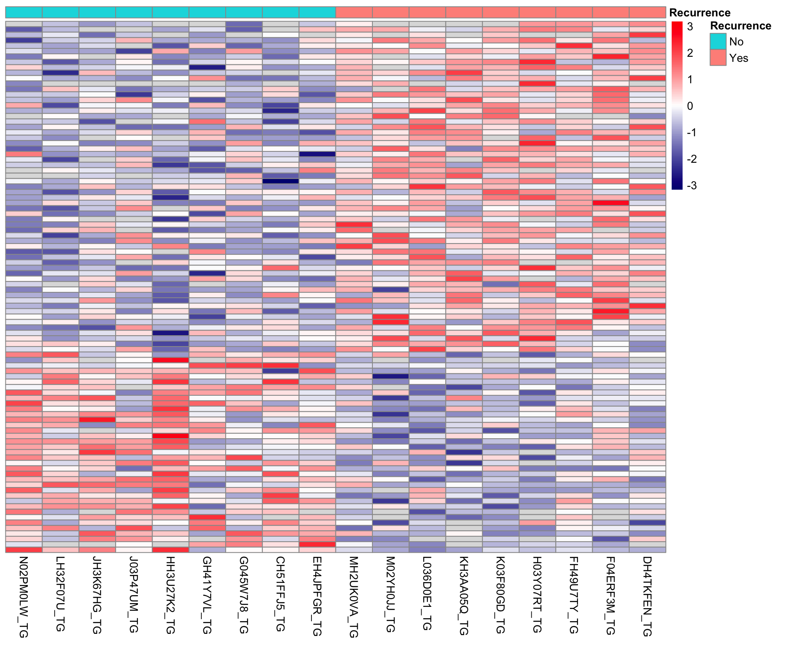
Visualize top significant features identified in Tumor samples (ns: p > 0.05, \(*\): p <= 0.05, \(**\): p <= 0.01, \(***\): p <= 0.001)
# Prepare data matrix and metadata including both Tumor and Normal samples
datMat <- proTissueRes_Klin$data
smpAnnoTab <- proTissueRes_Klin$smpMetadata
# Prepare significant feature table
featSigAssoTab <- proTumorRes_Klin$sig.feat.tab
num_sigFeats <- 6
gpLevel = c('Yes_Tumor', 'No_Tumor', 'Yes_Normal', 'No_Normal')
condiCol = c('grey50', 'firebrick') #c(Normal, Tumor)
# Extract top significant features and prepare needed information
topSigFeats <- featSigAssoTab[1:num_sigFeats,] %>%
dplyr::select(Var1, Gene) %>%
dplyr::mutate(newVar1 = paste0(Var1, ' (', Gene, ')'),
newVar1 = factor(newVar1, levels = unique(newVar1)))
topSigFeatDat <- tibble::as_tibble(datMat[topSigFeats$Var1,], rownames = 'Var1') %>%
tidyr::pivot_longer(cols = -'Var1', names_to = 'Sample', values_to = 'Abundance') %>%
dplyr::left_join(topSigFeats, by = 'Var1') %>%
dplyr::left_join(smpAnnoTab, by = 'Sample') %>%
dplyr::mutate(Recur_Condi = paste0(Recurrence, '_', Condition),
Recur_Condi = factor(Recur_Condi, levels = gpLevel))
ggplot(topSigFeatDat, aes(x=Recur_Condi, y=Abundance, col=Condition, fill=Recurrence)) +
geom_boxplot(alpha = 1, outlier.shape = NA, linewidth = 1) +
geom_jitter(position = position_jitter(0.2), size = 2, show.legend = F) +
ggpubr::stat_compare_means(method = 't.test', paired = F, method.args = list(var.equal = T),
comparisons = list(c('Yes_Tumor', 'No_Tumor'), c('Yes_Normal', 'No_Normal')),
label = 'p.signif', tip.length = 0.015, bracket.size = 0.7, size = 4) +
labs(x = 'Recurrence') +
scale_color_manual(values = condiCol) +
scale_fill_manual(values=c('#00BFC4', '#F8766D')) +
facet_wrap(vars(newVar1), scales = 'free') +
th + theme(strip.text = element_text(size = 13, face = 'bold'),
axis.text.x = element_text(angle = 45, hjust = 1, vjust = 1))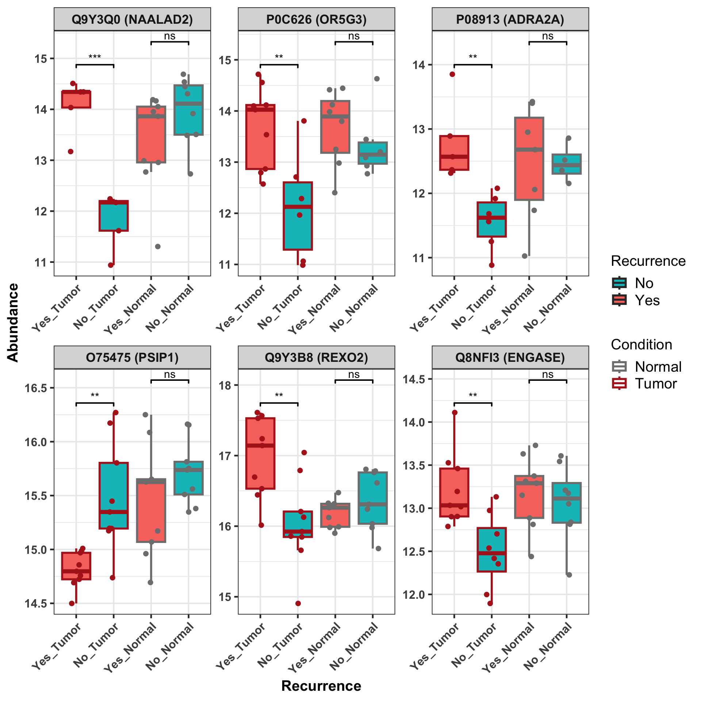
Assess data power by p-value histogram
proTumorRes_Klin$pval.hist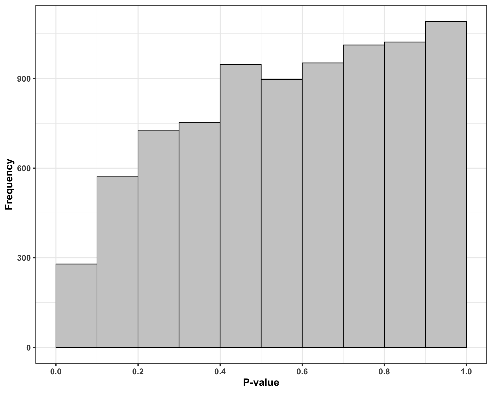
Display significant associations between PCs (Var1) and cancer recurrence (Var2)
proTumorRes_Klin$sig.pc.tab Var1 Var2 pVal pValAdj Stat Test
1 PC15 (3.1%) Recurrence 0.00535 0.0856 3.22 T-test
2 PC11 (4.1%) Recurrence 0.03170 0.2530 -2.35 T-testVisualize significant PCs and display their top features with greatest absolute loadings
proTumorRes_Klin$sig.pc.dist$PC15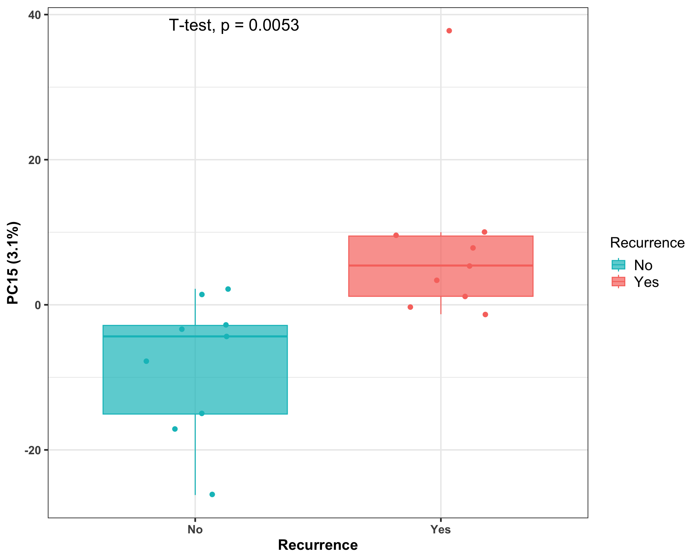
proTumorRes_Klin$pc.top.feat.tab$PC15 Feature Loading Gene
1 Q9H799 -0.1650 CPLANE1
2 Q9Y4C5 -0.1620 CHST2
3 Q93099 -0.0834 HGD
4 Q8TE73 0.0786 DNAH5
5 P0DTE7;P0DTE8;P0DUB6 0.0711 AMY1B;AMY1C;AMY1A
6 Q96BS2 0.0695 TESC
7 P15090 -0.0685 FABP4
8 P00374 0.0667 DHFR
9 P14222 0.0667 PRF1
10 Q8IYH5 -0.0661 ZZZ3
11 P51857 0.0658 AKR1D1
12 P18065 -0.0649 IGFBP2
13 Q15109 -0.0637 AGER
14 P0DOX4 -0.0619 <NA>
15 Q9Y3Q0 0.0598 NAALAD2
16 P19075 -0.0589 TSPAN8
17 Q9H1X3 0.0587 DNAJC25
18 Q8NDF8 0.0578 TENT4B
19 P22748 -0.0528 CA4
20 Q6W4X9 -0.0527 MUC6
21 P31513 -0.0524 FMO3
22 Q04609 -0.0518 FOLH1
23 Q9Y2X8 0.0515 UBE2D4
24 Q01628 0.0514 IFITM3
25 Q9NSB2 0.0512 KRT84
26 Q86Y13 0.0502 DZIP3
27 Q9NZT1 -0.0493 CALML5
28 P35680 -0.0482 HNF1B
29 Q16602 -0.0481 CALCRL
30 Q8NCL4 -0.0477 GALNT6proTumorRes_Klin$sig.pc.dist$PC11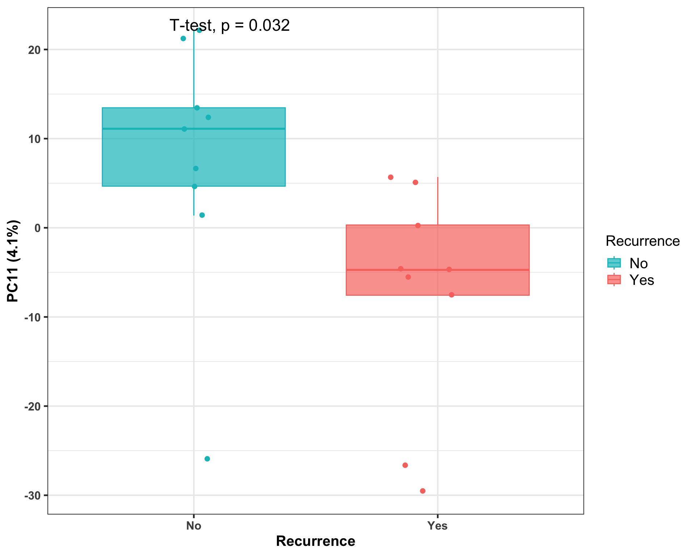
proTumorRes_Klin$pc.top.feat.tab$PC11 Feature Loading Gene
1 Q9Y4C5 -0.1070 CHST2
2 P15428 -0.0924 HPGD
3 A6NIX2 -0.0863 WTIP
4 Q14714 0.0859 SSPN
5 Q9NXE8 0.0821 CWC25
6 Q86XX4 -0.0810 FRAS1
7 Q9BY41 -0.0787 HDAC8
8 Q96BS2 0.0770 TESC
9 Q13938 -0.0704 CAPS
10 Q04695 -0.0695 KRT17
11 Q08554 0.0679 DSC1
12 Q9Y2X8 -0.0666 UBE2D4
13 Q6W4X9 -0.0654 MUC6
14 Q9NTW7 0.0618 ZFP64
15 Q8N5I4 0.0604 DHRSX
16 P16050 -0.0598 ALOX15
17 A0A0J9YXX1 0.0597 IGHV5-10-1
18 P35680 0.0591 HNF1B
19 Q6IS24 0.0590 GALNT17
20 P13762 0.0582 HLA-DRB4
21 Q96PV0 -0.0579 SYNGAP1
22 P0DTE7;P0DTE8;P0DUB6 0.0551 AMY1B;AMY1C;AMY1A
23 P11509 -0.0545 CYP2A6
24 P31151 -0.0543 S100A7
25 Q86VD7 0.0536 SLC25A42
26 P11686 -0.0530 SFTPC
27 Q8N9N5 0.0522 BANP
28 Q9P0R6 -0.0504 GSKIP
29 P31513 -0.0484 FMO3
30 Q7L0J3 -0.0484 SV2A# Subset certain samples
proNormal <- proTissue_Klin[, which(colData(proTissue_Klin)$Condition == 'Normal')]
# Perform single-omics analysis
proNormalRes_Klin <- doSingleOmicsAnalysis(proNormal, soa_metaVar = 'Recurrence', num_sigFeats = 6,
pca_method = 'ppca', num_PCs = 16, num_PCfeats = 30,
use_limma = F, use_proDA = T, feat_anno = featAnnoTab,
feat_conv = T, plot_title = NULL, show_rownames = F,
pca_metaVar = c('Recurrence', 'Gender', 'Age',
'Smoking', 'Stage', 'Adjuvant'))Display significant associations between PCs (Var1) and sample metadata variables (Var2) to overview sources of variance in data
proNormalRes_Klin$data.var.source Var1 Var2 pVal pValAdj Stat Test
1 PC2 (12%) Stage 0.00707 0.473 7.01 ANOVA
2 PC1 (14.5%) Stage 0.01400 0.473 5.75 ANOVA
3 PC1 (14.5%) Recurrence 0.01710 0.473 2.66 T-test
4 PC7 (5.7%) Recurrence 0.01970 0.473 -2.59 T-test
5 PC6 (6.4%) Smoking 0.04060 0.596 4.00 ANOVA
6 PC2 (12%) Gender 0.04270 0.596 2.20 T-test
7 PC13 (3.7%) Adjuvant 0.04350 0.596 2.19 T-test
8 PC2 (12%) Smoking 0.05000 0.600 3.68 ANOVADisplay significant associations between features (Var1) and cancer recurrence (Var2)
proNormalRes_Klin$sig.feat.tab %>%
dplyr::select(-Test) Var1 Var2 pVal pValAdj Stat Gene
1 O75818 Recurrence 7.49e-06 0.0618 6.49 RPP40
2 Q7Z4F1 Recurrence 1.17e-04 0.3070 5.06 LRP10
3 A6NKN8 Recurrence 1.90e-04 0.3070 -4.82 PCP4L1
4 P42694 Recurrence 2.45e-04 0.3070 -4.69 HELZ
5 Q6NXT1 Recurrence 2.47e-04 0.3070 -4.69 ANKRD54
6 Q8NI37 Recurrence 2.47e-04 0.3070 4.69 PPTC7
7 Q96CV9 Recurrence 3.06e-04 0.3070 -4.58 OPTN
8 Q6IPR1 Recurrence 3.33e-04 0.3070 4.54 ETFRF1
9 Q96E40 Recurrence 3.51e-04 0.3070 -4.52 SPACA9
10 Q53S58 Recurrence 4.17e-04 0.3070 4.43 TMEM177
11 P61326 Recurrence 4.39e-04 0.3070 -4.41 MAGOH
12 O15382 Recurrence 4.90e-04 0.3070 4.36 BCAT2
13 O96008 Recurrence 5.37e-04 0.3070 4.31 TOMM40
14 Q8TDB4 Recurrence 5.61e-04 0.3070 -4.29 MGARP
15 Q9UKK3 Recurrence 5.93e-04 0.3070 4.26 PARP4
16 Q9NSC5 Recurrence 6.14e-04 0.3070 -4.25 HOMER3
17 Q17RN3 Recurrence 6.75e-04 0.3070 -4.20 FAM98C
18 Q14515 Recurrence 7.08e-04 0.3070 -4.18 SPARCL1
19 Q92851 Recurrence 7.93e-04 0.3070 4.13 CASP10
20 Q13790 Recurrence 8.08e-04 0.3070 -4.12 APOF
21 A4D1E1 Recurrence 8.20e-04 0.3070 -4.11 ZNF804B
22 P21953 Recurrence 8.28e-04 0.3070 4.10 BCKDHB
23 P84243 Recurrence 9.19e-04 0.3070 -4.06 H3-3B
24 Q96EQ0 Recurrence 9.23e-04 0.3070 -4.05 SGTB
25 Q8N9L9 Recurrence 9.41e-04 0.3070 -4.04 ACOT4
26 Q9NPH3 Recurrence 9.67e-04 0.3070 -4.03 IL1RAP
27 Q96C36 Recurrence 1.11e-03 0.3400 3.96 PYCR2
28 P13647 Recurrence 1.17e-03 0.3430 -3.94 KRT5
29 O15195 Recurrence 1.21e-03 0.3430 -3.93 VILL
30 P62979 Recurrence 1.29e-03 0.3450 -3.89 RPS27A
31 P52789 Recurrence 1.30e-03 0.3450 3.89 HK2
32 Q14376 Recurrence 1.38e-03 0.3560 3.86 GALE
33 Q9Y512 Recurrence 1.49e-03 0.3630 3.83 SAMM50
34 P78346 Recurrence 1.50e-03 0.3630 3.82 RPP30
35 P02533 Recurrence 1.60e-03 0.3770 -3.79 KRT14
36 P09668 Recurrence 1.66e-03 0.3810 3.77 CTSH
37 Q9ULP9 Recurrence 1.76e-03 0.3910 3.75 TBC1D24
38 Q5M775 Recurrence 1.82e-03 0.3910 -3.73 SPECC1
39 P35914 Recurrence 2.01e-03 0.3910 3.68 HMGCL
40 Q8IY95 Recurrence 2.21e-03 0.3910 3.64 TMEM192
41 P24821 Recurrence 2.22e-03 0.3910 -3.64 TNC
42 Q9NVJ2 Recurrence 2.27e-03 0.3910 3.63 ARL8B
43 Q56VL3 Recurrence 2.29e-03 0.3910 3.62 OCIAD2
44 O60825 Recurrence 2.32e-03 0.3910 3.62 PFKFB2
45 Q02413 Recurrence 2.34e-03 0.3910 -3.61 DSG1
46 P51649 Recurrence 2.36e-03 0.3910 3.61 ALDH5A1
47 P22735 Recurrence 2.44e-03 0.3910 -3.59 TGM1
48 Q08554 Recurrence 2.45e-03 0.3910 -3.59 DSC1
49 P52849 Recurrence 2.48e-03 0.3910 3.58 NDST2
50 P09917 Recurrence 2.55e-03 0.3910 3.57 ALOX5
51 Q86YM7 Recurrence 2.66e-03 0.3910 -3.55 HOMER1
52 Q5T200 Recurrence 2.69e-03 0.3910 -3.55 ZC3H13
53 Q7Z794 Recurrence 2.72e-03 0.3910 -3.54 KRT77
54 Q5VWJ9 Recurrence 2.89e-03 0.3910 3.51 SNX30
55 P49642 Recurrence 2.91e-03 0.3910 3.51 PRIM1
56 O14578 Recurrence 2.92e-03 0.3910 -3.51 CIT
57 Q8N4T8 Recurrence 2.98e-03 0.3910 3.50 CBR4
58 P02538 Recurrence 3.02e-03 0.3910 -3.49 KRT6A
59 Q96BM9 Recurrence 3.04e-03 0.3910 3.49 ARL8A
60 Q8TDQ1 Recurrence 3.12e-03 0.3910 3.48 CD300LF
61 P61956 Recurrence 3.24e-03 0.3910 -3.46 SUMO2
62 Q9Y5U9 Recurrence 3.31e-03 0.3910 3.45 IER3IP1
63 O60828 Recurrence 3.33e-03 0.3910 -3.44 PQBP1
64 O94808 Recurrence 3.34e-03 0.3910 3.44 GFPT2
65 P11310 Recurrence 3.51e-03 0.3910 3.42 ACADM
66 Q9C0B7 Recurrence 3.55e-03 0.3910 3.41 TANGO6
67 O00116 Recurrence 3.58e-03 0.3910 3.41 AGPS
68 Q05823 Recurrence 3.83e-03 0.3910 3.38 RNASEL
69 Q9NP74 Recurrence 3.89e-03 0.3910 -3.37 PALMD
70 Q6KB66 Recurrence 3.91e-03 0.3910 -3.37 KRT80
71 Q5JPH6 Recurrence 3.98e-03 0.3910 3.36 EARS2
72 P21796 Recurrence 4.01e-03 0.3910 3.36 VDAC1
73 Q8IZQ1 Recurrence 4.13e-03 0.3910 -3.34 WDFY3
74 P48681 Recurrence 4.17e-03 0.3910 -3.34 NES
75 P10620 Recurrence 4.25e-03 0.3910 3.33 MGST1
76 Q8NB16 Recurrence 4.26e-03 0.3910 3.33 MLKL
77 Q0VDG4 Recurrence 4.28e-03 0.3910 3.33 SCRN3
78 Q9H9P8 Recurrence 4.31e-03 0.3910 3.32 L2HGDH
79 Q96P48 Recurrence 4.41e-03 0.3910 3.31 ARAP1
80 Q5XXA6 Recurrence 4.46e-03 0.3910 -3.31 ANO1
81 Q96IQ7 Recurrence 4.46e-03 0.3910 -3.31 VSIG2
82 Q7Z3J2 Recurrence 4.57e-03 0.3910 3.29 VPS35L
83 O00142 Recurrence 4.59e-03 0.3910 3.29 TK2
84 Q96E11 Recurrence 4.59e-03 0.3910 3.29 MRRF
85 Q9H936 Recurrence 4.61e-03 0.3910 3.29 SLC25A22
86 P17405 Recurrence 4.66e-03 0.3910 3.29 SMPD1
87 Q5T7V8 Recurrence 4.66e-03 0.3910 -3.29 GORAB
88 O75602 Recurrence 4.67e-03 0.3910 -3.28 SPAG6
89 Q6P4A7 Recurrence 4.68e-03 0.3910 3.28 SFXN4
90 Q99805 Recurrence 4.71e-03 0.3910 3.28 TM9SF2
91 Q8TCS8 Recurrence 4.73e-03 0.3910 3.28 PNPT1
92 Q76N32 Recurrence 4.74e-03 0.3910 -3.28 CEP68
93 Q9Y277 Recurrence 4.76e-03 0.3910 3.28 VDAC3
94 P67936 Recurrence 4.81e-03 0.3910 -3.27 TPM4
95 Q9H7X7 Recurrence 4.81e-03 0.3910 -3.27 IFT22
96 P31151 Recurrence 4.86e-03 0.3910 -3.27 S100A7
97 P53602 Recurrence 5.00e-03 0.3910 3.25 MVD
98 P07951 Recurrence 5.03e-03 0.3910 -3.25 TPM2
99 Q96QE2 Recurrence 5.03e-03 0.3910 3.25 SLC2A13
100 P07910 Recurrence 5.05e-03 0.3910 -3.25 HNRNPC
101 O15231 Recurrence 5.07e-03 0.3910 -3.24 ZNF185
102 Q96ER3 Recurrence 5.10e-03 0.3910 3.24 SAAL1
103 Q5S007 Recurrence 5.15e-03 0.3910 3.24 LRRK2
104 P99999 Recurrence 5.17e-03 0.3910 3.24 CYCS
105 Q8N131 Recurrence 5.20e-03 0.3910 -3.23 TMEM123
106 P15924 Recurrence 5.21e-03 0.3910 -3.23 DSP
107 Q96F07 Recurrence 5.21e-03 0.3910 3.23 CYFIP2
108 Q8NBQ5 Recurrence 5.24e-03 0.3910 3.23 HSD17B11
109 O15258 Recurrence 5.26e-03 0.3910 3.23 RER1
110 Q86WT1 Recurrence 5.28e-03 0.3910 -3.23 TTC30A
111 P49006 Recurrence 5.31e-03 0.3910 -3.22 MARCKSL1
112 Q969E8 Recurrence 5.36e-03 0.3910 -3.22 TSR2
113 A0AV96 Recurrence 5.39e-03 0.3910 3.22 RBM47
114 Q5MIZ7 Recurrence 5.45e-03 0.3910 -3.21 PPP4R3B
115 Q9H6F5 Recurrence 5.45e-03 0.3910 -3.21 CCDC86
116 Q9NVZ3 Recurrence 5.51e-03 0.3920 3.21 NECAP2
117 Q15006 Recurrence 5.73e-03 0.4040 3.19 EMC2
118 Q96RQ3 Recurrence 5.83e-03 0.4050 3.18 MCCC1
119 Q8IU68 Recurrence 5.85e-03 0.4050 -3.18 TMC8
120 P43897 Recurrence 6.08e-03 0.4130 3.16 TSFM
121 P33121 Recurrence 6.10e-03 0.4130 3.16 ACSL1
122 P09493 Recurrence 6.18e-03 0.4130 -3.15 TPM1
123 Q86SQ0 Recurrence 6.29e-03 0.4130 -3.14 PHLDB2
124 Q96M27 Recurrence 6.38e-03 0.4130 3.14 PRRC1
125 P23919 Recurrence 6.40e-03 0.4130 3.13 DTYMK
126 P43405 Recurrence 6.42e-03 0.4130 3.13 SYK
127 Q9H8L6 Recurrence 6.47e-03 0.4130 -3.13 MMRN2
128 Q96P63 Recurrence 6.63e-03 0.4130 -3.12 SERPINB12
129 P07205 Recurrence 6.65e-03 0.4130 3.12 PGK2
130 Q9Y5G0 Recurrence 6.67e-03 0.4130 -3.11 PCDHGB5
131 P17302 Recurrence 6.77e-03 0.4130 -3.11 GJA1
132 Q9UIG8 Recurrence 6.80e-03 0.4130 -3.11 SLCO3A1
133 Q9UKU9 Recurrence 6.82e-03 0.4130 -3.10 ANGPTL2
134 Q9UKU7 Recurrence 6.96e-03 0.4130 3.09 ACAD8
135 P35680 Recurrence 6.98e-03 0.4130 -3.09 HNF1B
136 Q96EX1 Recurrence 7.05e-03 0.4130 3.09 SMIM12
137 P06753 Recurrence 7.16e-03 0.4130 -3.08 TPM3
138 Q7Z4W1 Recurrence 7.22e-03 0.4130 3.08 DCXR
139 Q96EH3 Recurrence 7.26e-03 0.4130 3.07 MALSU1
140 Q16540 Recurrence 7.30e-03 0.4130 3.07 MRPL23
141 Q6NY19 Recurrence 7.31e-03 0.4130 -3.07 KANK3
142 P51674 Recurrence 7.35e-03 0.4130 -3.07 GPM6A
143 Q8TDQ0 Recurrence 7.48e-03 0.4130 3.06 HAVCR2
144 P41208 Recurrence 7.51e-03 0.4130 -3.06 CETN2
145 Q8IVM0 Recurrence 7.56e-03 0.4130 -3.05 CCDC50
146 Q9BY41 Recurrence 7.62e-03 0.4130 3.05 HDAC8
147 Q15424 Recurrence 7.72e-03 0.4130 -3.05 SAFB
148 Q96LZ7 Recurrence 7.72e-03 0.4130 3.04 RMDN2
149 P54886 Recurrence 7.73e-03 0.4130 3.04 ALDH18A1
150 O95436 Recurrence 7.74e-03 0.4130 3.04 SLC34A2
151 Q3KQU3 Recurrence 7.77e-03 0.4130 -3.04 MAP7D1
152 P49327 Recurrence 7.87e-03 0.4130 3.04 FASN
153 Q9Y678 Recurrence 7.91e-03 0.4130 3.03 COPG1
154 P19878 Recurrence 7.92e-03 0.4130 3.03 NCF2
155 Q6DT37 Recurrence 7.92e-03 0.4130 -3.03 CDC42BPG
156 O95678 Recurrence 7.94e-03 0.4130 -3.03 KRT75
157 Q8IWU2 Recurrence 8.03e-03 0.4130 -3.03 LMTK2
158 Q9H4M9 Recurrence 8.06e-03 0.4130 -3.02 EHD1
159 O43291 Recurrence 8.10e-03 0.4130 -3.02 SPINT2
160 P32321 Recurrence 8.22e-03 0.4130 3.01 DCTD
161 Q6P4E1 Recurrence 8.29e-03 0.4130 -3.01 GOLM2
162 P29374 Recurrence 8.39e-03 0.4130 -3.01 ARID4A
163 P55263 Recurrence 8.40e-03 0.4130 3.00 ADK
164 Q2TB90 Recurrence 8.43e-03 0.4130 3.00 HKDC1
165 O60341 Recurrence 8.51e-03 0.4130 3.00 KDM1A
166 Q9ULW0 Recurrence 8.53e-03 0.4130 -3.00 TPX2
167 Q9Y2G9 Recurrence 8.61e-03 0.4130 2.99 SBNO2
168 P54252 Recurrence 8.72e-03 0.4130 -2.99 ATXN3
169 Q6IAN0 Recurrence 8.77e-03 0.4130 2.98 DHRS7B
170 Q9BZL4 Recurrence 8.91e-03 0.4130 -2.98 PPP1R12C
171 Q16643 Recurrence 8.96e-03 0.4130 -2.97 DBN1
172 P42702 Recurrence 8.97e-03 0.4130 -2.97 LIFR
173 Q9NSB2 Recurrence 9.02e-03 0.4130 -2.97 KRT84
174 Q8N3P4 Recurrence 9.05e-03 0.4130 2.97 VPS8
175 Q14435 Recurrence 9.10e-03 0.4130 2.97 GALNT3
176 Q9BTZ2 Recurrence 9.12e-03 0.4130 2.97 DHRS4
177 Q9UG63 Recurrence 9.15e-03 0.4130 2.96 ABCF2
178 Q8N2K0 Recurrence 9.17e-03 0.4130 2.96 ABHD12
179 Q96IZ0 Recurrence 9.18e-03 0.4130 -2.96 PAWR
180 P08590 Recurrence 9.23e-03 0.4130 -2.96 MYL3
181 Q8N4H5 Recurrence 9.25e-03 0.4130 2.96 TOMM5
182 Q99653 Recurrence 9.33e-03 0.4130 -2.95 CHP1
183 Q9UNZ2 Recurrence 9.39e-03 0.4130 -2.95 NSFL1C
184 P30622 Recurrence 9.41e-03 0.4130 -2.95 CLIP1
185 P61218 Recurrence 9.41e-03 0.4130 -2.95 POLR2F
186 Q92506 Recurrence 9.41e-03 0.4130 2.95 HSD17B8
187 O75781 Recurrence 9.42e-03 0.4130 -2.95 PALM
188 P02647 Recurrence 9.46e-03 0.4130 -2.95 APOA1
189 A0A0G2JMI3 Recurrence 9.48e-03 0.4130 -2.95 IGHV1-69-2
190 Q8IY63 Recurrence 9.61e-03 0.4130 -2.94 AMOTL1
191 Q9NR45 Recurrence 9.63e-03 0.4130 2.94 NANS
192 Q8IV50 Recurrence 9.70e-03 0.4130 -2.94 LYSMD2
193 Q9NPG4 Recurrence 9.73e-03 0.4130 -2.93 PCDH12
194 Q8IWE5 Recurrence 9.75e-03 0.4130 2.93 PLEKHM2
195 Q8WZA9 Recurrence 9.89e-03 0.4130 -2.93 IRGQ
196 Q96BS2 Recurrence 9.89e-03 0.4130 -2.93 TESC
197 Q9NNW7 Recurrence 9.92e-03 0.4130 2.92 TXNRD2
198 P26038 Recurrence 1.00e-02 0.4130 -2.92 MSN
199 O75182 Recurrence 1.02e-02 0.4130 -2.91 SIN3B
200 A0A075B6H9 Recurrence 1.03e-02 0.4130 -2.91 IGLV4-69
201 O43164 Recurrence 1.03e-02 0.4130 -2.91 PJA2
202 O75629 Recurrence 1.03e-02 0.4130 2.91 CREG1
203 P50502 Recurrence 1.03e-02 0.4130 -2.91 ST13
204 Q9NYB0 Recurrence 1.03e-02 0.4130 -2.91 TERF2IP
205 O15344 Recurrence 1.04e-02 0.4130 -2.90 MID1
206 O94923 Recurrence 1.05e-02 0.4130 2.90 GLCE
207 Q8IY34 Recurrence 1.05e-02 0.4130 2.90 SLC15A3
208 Q96GC9 Recurrence 1.05e-02 0.4130 2.90 VMP1
209 P98194 Recurrence 1.06e-02 0.4130 2.89 ATP2C1
210 Q8TF09 Recurrence 1.06e-02 0.4130 -2.89 DYNLRB2
211 Q9BXB4 Recurrence 1.06e-02 0.4130 2.89 OSBPL11
212 Q9NPJ3 Recurrence 1.06e-02 0.4130 2.89 ACOT13
213 P16278 Recurrence 1.07e-02 0.4140 2.89 GLB1
214 Q9NZK5 Recurrence 1.07e-02 0.4130 2.89 ADA2
215 Q96RQ1 Recurrence 1.08e-02 0.4160 2.88 ERGIC2
216 P04843 Recurrence 1.11e-02 0.4210 2.87 RPN1
217 Q05682 Recurrence 1.11e-02 0.4210 -2.87 CALD1
218 Q13825 Recurrence 1.13e-02 0.4210 2.86 AUH
219 Q16514 Recurrence 1.14e-02 0.4210 -2.86 TAF12
220 Q9H2U2 Recurrence 1.14e-02 0.4210 2.86 PPA2
221 P39656 Recurrence 1.15e-02 0.4210 2.85 DDOST
222 Q07617 Recurrence 1.15e-02 0.4210 -2.85 SPAG1
223 Q8NCJ5 Recurrence 1.15e-02 0.4210 -2.85 SPRYD3
224 O15254 Recurrence 1.16e-02 0.4210 2.85 ACOX3
225 Q14137 Recurrence 1.16e-02 0.4210 2.85 BOP1
226 Q96BP2 Recurrence 1.16e-02 0.4210 2.85 CHCHD1
227 O15182 Recurrence 1.17e-02 0.4210 -2.84 CETN3
228 P31350 Recurrence 1.17e-02 0.4210 2.84 RRM2
229 O00308 Recurrence 1.19e-02 0.4210 -2.84 WWP2
230 Q8WW59 Recurrence 1.19e-02 0.4210 2.84 SPRYD4
231 Q86VS8 Recurrence 1.20e-02 0.4210 -2.83 HOOK3
232 Q96GS4 Recurrence 1.20e-02 0.4210 -2.83 BORCS6
233 Q96DT6 Recurrence 1.21e-02 0.4210 2.83 ATG4C
234 Q9NTJ4 Recurrence 1.21e-02 0.4210 2.83 MAN2C1
235 P04150 Recurrence 1.22e-02 0.4210 -2.83 NR3C1
236 Q0VF96 Recurrence 1.22e-02 0.4210 -2.82 CGNL1
237 Q9UQN3 Recurrence 1.22e-02 0.4210 -2.83 CHMP2B
238 Q16822 Recurrence 1.23e-02 0.4210 2.82 PCK2
239 Q7L5L3 Recurrence 1.24e-02 0.4210 -2.82 GDPD3
240 O14656 Recurrence 1.25e-02 0.4210 2.81 TOR1A
241 Q13563 Recurrence 1.25e-02 0.4210 -2.81 PKD2
242 Q16825 Recurrence 1.25e-02 0.4210 -2.81 PTPN21
243 Q9UBY9 Recurrence 1.25e-02 0.4210 -2.81 HSPB7
244 P07741 Recurrence 1.26e-02 0.4210 2.81 APRT
245 P10909 Recurrence 1.26e-02 0.4210 -2.81 CLU
246 Q96C11 Recurrence 1.26e-02 0.4210 2.81 FGGY
247 Q9NWB7 Recurrence 1.26e-02 0.4210 -2.81 IFT57
248 Q96C90 Recurrence 1.28e-02 0.4210 -2.80 PPP1R14B
249 Q9Y4K0 Recurrence 1.28e-02 0.4210 -2.80 LOXL2
250 O60711 Recurrence 1.29e-02 0.4210 2.80 LPXN
251 Q8IXS6 Recurrence 1.29e-02 0.4210 -2.80 PALM2
252 O14974 Recurrence 1.30e-02 0.4210 -2.80 PPP1R12A
253 O15056 Recurrence 1.30e-02 0.4210 2.79 SYNJ2
254 P34741 Recurrence 1.30e-02 0.4210 -2.79 SDC2
255 Q8WVV4 Recurrence 1.30e-02 0.4210 -2.79 POF1B
256 P23588 Recurrence 1.35e-02 0.4250 -2.78 EIF4B
257 P05388 Recurrence 1.36e-02 0.4250 2.77 RPLP0
258 Q9NWW5 Recurrence 1.36e-02 0.4250 2.77 CLN6
259 Q9UJC5 Recurrence 1.36e-02 0.4250 2.77 SH3BGRL2
260 Q8ND56 Recurrence 1.38e-02 0.4250 -2.77 LSM14A
261 O14683 Recurrence 1.39e-02 0.4250 2.76 TP53I11
262 Q93050 Recurrence 1.39e-02 0.4250 2.76 ATP6V0A1
263 Q9ULX6 Recurrence 1.39e-02 0.4250 2.76 AKAP8L
264 P06727 Recurrence 1.40e-02 0.4250 -2.76 APOA4
265 Q7Z4V5 Recurrence 1.40e-02 0.4250 -2.76 HDGFL2
266 Q9NUJ1 Recurrence 1.40e-02 0.4250 2.76 ABHD10
267 P08729 Recurrence 1.41e-02 0.4250 -2.75 KRT7
268 Q7Z3B1 Recurrence 1.41e-02 0.4250 -2.76 NEGR1
269 Q9BZF2 Recurrence 1.41e-02 0.4250 2.75 OSBPL7
270 Q8IUH4 Recurrence 1.42e-02 0.4250 -2.75 ZDHHC13
271 Q9H425 Recurrence 1.43e-02 0.4250 -2.75 C1orf198
272 O60936 Recurrence 1.44e-02 0.4250 -2.74 NOL3
273 P01700 Recurrence 1.44e-02 0.4250 -2.74 IGLV1-47
274 P26885 Recurrence 1.44e-02 0.4250 2.74 FKBP2
275 Q99547 Recurrence 1.44e-02 0.4250 -2.75 MPHOSPH6
276 Q5JTZ9 Recurrence 1.45e-02 0.4250 2.74 AARS2
277 O95347 Recurrence 1.46e-02 0.4250 -2.74 SMC2
278 Q8N999 Recurrence 1.46e-02 0.4250 -2.74 C12orf29
279 Q93099 Recurrence 1.46e-02 0.4250 -2.74 HGD
280 Q9BQB6 Recurrence 1.46e-02 0.4250 2.74 VKORC1
281 P26022 Recurrence 1.48e-02 0.4250 -2.73 PTX3
282 Q9Y2R9 Recurrence 1.49e-02 0.4250 2.73 MRPS7
283 P23786 Recurrence 1.50e-02 0.4250 2.72 CPT2
284 P51149 Recurrence 1.50e-02 0.4250 2.73 RAB7A
285 Q5T1C6 Recurrence 1.50e-02 0.4250 2.72 THEM4
286 Q6UXY8 Recurrence 1.50e-02 0.4250 -2.72 TMC5
287 Q9BUK0 Recurrence 1.50e-02 0.4250 2.73 CHCHD7
288 Q14166 Recurrence 1.51e-02 0.4250 2.72 TTLL12
289 Q92843 Recurrence 1.51e-02 0.4250 -2.72 BCL2L2
290 Q969E4 Recurrence 1.51e-02 0.4250 -2.72 TCEAL3
291 O14874 Recurrence 1.52e-02 0.4250 2.72 BCKDK
292 O94925 Recurrence 1.52e-02 0.4250 2.72 GLS
293 O95273 Recurrence 1.52e-02 0.4250 -2.72 CCNDBP1
294 P14923 Recurrence 1.52e-02 0.4250 -2.72 JUP
295 Q96CM8 Recurrence 1.52e-02 0.4250 2.72 ACSF2
296 O96005 Recurrence 1.53e-02 0.4250 2.71 CLPTM1
297 P61952 Recurrence 1.53e-02 0.4250 -2.71 GNG11
298 Q8N5G0 Recurrence 1.54e-02 0.4250 2.71 SMIM20
299 Q9HAN9 Recurrence 1.55e-02 0.4260 2.71 NMNAT1
300 Q12913 Recurrence 1.56e-02 0.4260 -2.70 PTPRJ
301 Q7Z406 Recurrence 1.56e-02 0.4260 -2.71 MYH14
302 Q96EP5 Recurrence 1.56e-02 0.4260 2.70 DAZAP1
303 P30084 Recurrence 1.57e-02 0.4260 2.70 ECHS1
304 Q9UKX5 Recurrence 1.57e-02 0.4260 -2.70 ITGA11
305 O75190 Recurrence 1.58e-02 0.4260 -2.70 DNAJB6
306 O60830 Recurrence 1.59e-02 0.4260 2.70 TIMM17B
307 Q86T03 Recurrence 1.59e-02 0.4260 2.70 PIP4P1
308 Q92870 Recurrence 1.60e-02 0.4260 -2.69 APBB2
309 H7BZ55 Recurrence 1.61e-02 0.4260 -2.69 CROCC2
310 P08727 Recurrence 1.62e-02 0.4260 -2.69 KRT19
311 P09960 Recurrence 1.62e-02 0.4260 2.69 LTA4H
312 P49321 Recurrence 1.62e-02 0.4260 -2.69 NASP
313 Q92828 Recurrence 1.62e-02 0.4260 2.69 CORO2A
314 Q9P2N2 Recurrence 1.62e-02 0.4260 -2.69 ARHGAP28
315 Q66LE6 Recurrence 1.63e-02 0.4260 2.68 PPP2R2D
316 Q9H5N1 Recurrence 1.63e-02 0.4260 -2.68 RABEP2
317 O43837 Recurrence 1.64e-02 0.4260 2.68 IDH3B
318 Q9Y6Y8 Recurrence 1.65e-02 0.4270 2.68 SEC23IP
319 P05412 Recurrence 1.66e-02 0.4270 2.68 JUN
320 Q14202 Recurrence 1.67e-02 0.4270 -2.67 ZMYM3
321 Q9P0K7 Recurrence 1.67e-02 0.4270 -2.67 RAI14
322 O00264 Recurrence 1.68e-02 0.4270 -2.67 PGRMC1
323 P34896 Recurrence 1.68e-02 0.4270 2.67 SHMT1
324 Q9BRV8 Recurrence 1.68e-02 0.4270 -2.67 SIKE1
325 O00115 Recurrence 1.69e-02 0.4270 2.67 DNASE2
326 P61966 Recurrence 1.69e-02 0.4270 2.67 AP1S1
327 Q6NZ67 Recurrence 1.70e-02 0.4290 -2.66 MZT2B
328 P08842 Recurrence 1.71e-02 0.4300 -2.66 STS
329 Q9NPF4 Recurrence 1.71e-02 0.4300 2.66 OSGEP
330 P07711 Recurrence 1.73e-02 0.4320 2.65 CTSL
331 Q9H1E3 Recurrence 1.74e-02 0.4320 -2.65 NUCKS1
332 Q03426 Recurrence 1.76e-02 0.4320 2.65 MVK
333 Q9NXN4 Recurrence 1.76e-02 0.4320 2.65 GDAP2
334 Q9Y4D1 Recurrence 1.76e-02 0.4320 -2.65 DAAM1
335 Q99571 Recurrence 1.77e-02 0.4320 2.64 P2RX4
336 O43765 Recurrence 1.79e-02 0.4320 -2.64 SGTA
337 O60245 Recurrence 1.80e-02 0.4320 -2.63 PCDH7
338 Q01804 Recurrence 1.80e-02 0.4320 -2.63 OTUD4
339 Q6IA17 Recurrence 1.80e-02 0.4320 -2.64 SIGIRR
340 Q9Y6A9 Recurrence 1.80e-02 0.4320 2.63 SPCS1
341 O60760 Recurrence 1.81e-02 0.4320 2.63 HPGDS
342 Q15027 Recurrence 1.82e-02 0.4320 -2.63 ACAP1
343 O75436 Recurrence 1.84e-02 0.4320 2.62 VPS26A
344 P63208 Recurrence 1.84e-02 0.4320 -2.63 SKP1
345 Q99417 Recurrence 1.84e-02 0.4320 -2.63 MYCBP
346 O15173 Recurrence 1.86e-02 0.4320 -2.62 PGRMC2
347 Q96IW7 Recurrence 1.86e-02 0.4320 2.62 SEC22A
348 Q9NRA2 Recurrence 1.86e-02 0.4320 2.62 SLC17A5
349 P22897 Recurrence 1.87e-02 0.4320 2.62 MRC1
350 Q16651 Recurrence 1.87e-02 0.4320 -2.62 PRSS8
351 Q8N6N3 Recurrence 1.87e-02 0.4320 -2.62 C1orf52
352 Q9BWH6 Recurrence 1.88e-02 0.4320 2.61 RPAP1
353 P45880 Recurrence 1.89e-02 0.4320 2.61 VDAC2
354 Q969Q5 Recurrence 1.90e-02 0.4320 2.61 RAB24
355 Q9C0C2 Recurrence 1.90e-02 0.4320 -2.61 TNKS1BP1
356 Q13464 Recurrence 1.92e-02 0.4320 -2.60 ROCK1
357 Q8N766 Recurrence 1.92e-02 0.4320 2.60 EMC1
358 A1A4S6 Recurrence 1.93e-02 0.4320 2.60 ARHGAP10
359 P20930 Recurrence 1.94e-02 0.4320 -2.60 FLG
360 P62736 Recurrence 1.94e-02 0.4320 -2.60 ACTA2
361 Q09666 Recurrence 1.94e-02 0.4320 -2.60 AHNAK
362 Q9NQS1 Recurrence 1.94e-02 0.4320 -2.60 AVEN
363 Q14151 Recurrence 1.95e-02 0.4320 -2.60 SAFB2
364 Q8TEH3 Recurrence 1.95e-02 0.4320 2.60 DENND1A
365 P04632 Recurrence 1.96e-02 0.4320 -2.59 CAPNS1
366 Q9NX74 Recurrence 1.96e-02 0.4320 -2.59 DUS2
367 Q16549 Recurrence 1.97e-02 0.4320 -2.59 PCSK7
368 P32019 Recurrence 1.98e-02 0.4320 -2.59 INPP5B
369 Q15165 Recurrence 1.98e-02 0.4320 2.59 PON2
370 Q6PI78 Recurrence 1.98e-02 0.4320 -2.59 TMEM65
371 Q86W92 Recurrence 1.98e-02 0.4320 -2.59 PPFIBP1
372 P38571 Recurrence 1.99e-02 0.4320 2.59 LIPA
373 P05141 Recurrence 2.01e-02 0.4320 2.58 SLC25A5
374 P38606 Recurrence 2.01e-02 0.4320 2.58 ATP6V1A
375 Q02252 Recurrence 2.01e-02 0.4320 2.58 ALDH6A1
376 P26440 Recurrence 2.02e-02 0.4320 2.58 IVD
377 Q04695 Recurrence 2.02e-02 0.4320 -2.58 KRT17
378 Q96BJ3 Recurrence 2.02e-02 0.4320 -2.58 AIDA
379 Q9Y3A6 Recurrence 2.03e-02 0.4320 2.58 TMED5
380 Q07075 Recurrence 2.04e-02 0.4320 -2.57 ENPEP
381 Q9BQ95 Recurrence 2.04e-02 0.4320 2.57 ECSIT
382 Q9BU89 Recurrence 2.04e-02 0.4320 -2.57 DOHH
383 P80723 Recurrence 2.05e-02 0.4320 -2.57 BASP1
384 Q99643 Recurrence 2.06e-02 0.4320 2.57 SDHC
385 Q9H2J4 Recurrence 2.06e-02 0.4320 2.57 PDCL3
386 Q86UP2 Recurrence 2.07e-02 0.4320 -2.57 KTN1
387 Q92947 Recurrence 2.07e-02 0.4320 2.57 GCDH
388 Q96P11 Recurrence 2.07e-02 0.4320 2.57 NSUN5
389 Q9Y6X3 Recurrence 2.07e-02 0.4320 2.57 MAU2
390 P02649 Recurrence 2.08e-02 0.4320 -2.56 APOE
391 P06454 Recurrence 2.08e-02 0.4320 -2.56 PTMA
392 Q9Y2Z4 Recurrence 2.08e-02 0.4320 2.56 YARS2
393 P15170 Recurrence 2.09e-02 0.4320 2.56 GSPT1
394 Q7L5D6 Recurrence 2.09e-02 0.4320 2.56 GET4
395 P16949 Recurrence 2.10e-02 0.4320 -2.56 STMN1
396 P17568 Recurrence 2.11e-02 0.4320 2.56 NDUFB7
397 P23368 Recurrence 2.12e-02 0.4320 2.56 ME2
398 Q8TB24 Recurrence 2.12e-02 0.4320 2.55 RIN3
399 Q9Y2S7 Recurrence 2.12e-02 0.4320 2.56 POLDIP2
400 Q9ULN7 Recurrence 2.13e-02 0.4320 -2.55 PNMA8B
401 P56945 Recurrence 2.14e-02 0.4320 -2.55 BCAR1
402 Q15185 Recurrence 2.14e-02 0.4320 2.55 PTGES3
403 Q5RI15 Recurrence 2.14e-02 0.4320 2.55 COX20
404 Q9BRR8 Recurrence 2.14e-02 0.4320 2.55 GPATCH1
405 Q9H799 Recurrence 2.14e-02 0.4320 -2.55 CPLANE1
406 P18206 Recurrence 2.15e-02 0.4320 -2.55 VCL
407 Q9NVM1 Recurrence 2.15e-02 0.4320 -2.55 EVA1B
408 P01732 Recurrence 2.17e-02 0.4320 2.54 CD8A
409 P20810 Recurrence 2.17e-02 0.4320 -2.54 CAST
410 Q00722 Recurrence 2.18e-02 0.4320 2.54 PLCB2
411 Q9H2M9 Recurrence 2.19e-02 0.4320 2.54 RAB3GAP2
412 Q9UEW3 Recurrence 2.19e-02 0.4320 2.54 MARCO
413 Q9H930 Recurrence 2.21e-02 0.4320 -2.54 SP140L
414 Q6ULP2 Recurrence 2.22e-02 0.4320 -2.53 AFTPH
415 Q96RL1 Recurrence 2.22e-02 0.4320 -2.53 UIMC1
416 Q9UGQ3 Recurrence 2.24e-02 0.4320 2.53 SLC2A6
417 O00273 Recurrence 2.25e-02 0.4320 -2.53 DFFA
418 O96009 Recurrence 2.25e-02 0.4320 2.53 NAPSA
419 Q53FV1 Recurrence 2.25e-02 0.4320 2.52 ORMDL2
420 Q6YN16 Recurrence 2.27e-02 0.4320 2.52 HSDL2
421 Q8IUZ5 Recurrence 2.27e-02 0.4320 2.52 PHYKPL
422 Q9NWH9 Recurrence 2.27e-02 0.4320 -2.52 SLTM
423 O14503 Recurrence 2.28e-02 0.4320 2.52 BHLHE40
424 P05362 Recurrence 2.28e-02 0.4320 -2.52 ICAM1
425 O14737 Recurrence 2.29e-02 0.4320 -2.52 PDCD5
426 P84157 Recurrence 2.29e-02 0.4320 -2.52 MXRA7
427 Q96EI5 Recurrence 2.29e-02 0.4320 -2.52 TCEAL4
428 P05165 Recurrence 2.30e-02 0.4320 2.52 PCCA
429 Q10589 Recurrence 2.30e-02 0.4320 -2.52 BST2
430 P09382 Recurrence 2.31e-02 0.4320 -2.51 LGALS1
431 Q5PRF9 Recurrence 2.31e-02 0.4320 -2.51 SAMD4B
432 P48634 Recurrence 2.33e-02 0.4320 -2.51 PRRC2A
433 P09132 Recurrence 2.34e-02 0.4320 2.51 SRP19
434 Q99797 Recurrence 2.34e-02 0.4320 2.51 MIPEP
435 Q9BYV8 Recurrence 2.34e-02 0.4320 -2.51 CEP41
436 O15018 Recurrence 2.36e-02 0.4320 -2.50 PDZD2
437 Q92629 Recurrence 2.36e-02 0.4320 -2.50 SGCD
438 Q9Y2P8 Recurrence 2.36e-02 0.4320 2.50 RCL1
439 Q8N0U4 Recurrence 2.37e-02 0.4320 2.50 FAM185A
440 Q9H2D6 Recurrence 2.38e-02 0.4320 -2.50 TRIOBP
441 P41236 Recurrence 2.39e-02 0.4320 -2.49 PPP1R2
442 Q15375 Recurrence 2.39e-02 0.4320 2.50 EPHA7
443 Q9Y3E0 Recurrence 2.41e-02 0.4320 2.49 GOLT1B
444 O43491 Recurrence 2.42e-02 0.4320 -2.49 EPB41L2
445 Q5VWQ8 Recurrence 2.42e-02 0.4320 -2.49 DAB2IP
446 Q6JBY9 Recurrence 2.43e-02 0.4320 -2.49 RCSD1
447 Q8IWP9 Recurrence 2.43e-02 0.4320 -2.49 CCDC28A
448 Q13137 Recurrence 2.44e-02 0.4320 -2.48 CALCOCO2
449 Q8NBR6 Recurrence 2.44e-02 0.4320 2.48 MINDY2
450 Q86UU1 Recurrence 2.45e-02 0.4320 -2.48 PHLDB1
451 O75410 Recurrence 2.46e-02 0.4320 -2.48 TACC1
452 P27816 Recurrence 2.46e-02 0.4320 -2.48 MAP4
453 Q9H845 Recurrence 2.46e-02 0.4320 2.48 ACAD9
454 O95865 Recurrence 2.47e-02 0.4320 -2.48 DDAH2
455 Q8WXE0 Recurrence 2.47e-02 0.4320 -2.48 CASKIN2
456 P36551 Recurrence 2.48e-02 0.4320 2.48 CPOX
457 Q9Y2B9 Recurrence 2.48e-02 0.4320 -2.48 PKIG
458 O43633 Recurrence 2.49e-02 0.4320 -2.47 CHMP2A
459 Q8N5K1 Recurrence 2.49e-02 0.4320 2.47 CISD2
460 P17544 Recurrence 2.50e-02 0.4320 2.47 ATF7
461 Q6IQ49 Recurrence 2.50e-02 0.4320 -2.47 SDE2
462 Q01082 Recurrence 2.51e-02 0.4320 -2.47 SPTBN1
463 O75439 Recurrence 2.52e-02 0.4320 2.47 PMPCB
464 P20962 Recurrence 2.52e-02 0.4320 -2.47 PTMS
465 Q15365 Recurrence 2.53e-02 0.4320 2.47 PCBP1
466 Q7L2H7 Recurrence 2.53e-02 0.4320 2.47 EIF3M
467 Q8NE86 Recurrence 2.54e-02 0.4320 2.46 MCU
468 Q9UK55 Recurrence 2.54e-02 0.4320 -2.47 SERPINA10
469 Q6BCY4 Recurrence 2.55e-02 0.4320 2.46 CYB5R2
470 Q15404 Recurrence 2.56e-02 0.4320 -2.46 RSU1
471 Q8NEY8 Recurrence 2.56e-02 0.4320 -2.46 PPHLN1
472 Q86VX2 Recurrence 2.57e-02 0.4320 2.46 COMMD7
473 P12532 Recurrence 2.58e-02 0.4320 -2.46 CKMT1B
474 P98170 Recurrence 2.58e-02 0.4320 2.46 XIAP
475 Q03001 Recurrence 2.58e-02 0.4320 -2.46 DST
476 Q04726 Recurrence 2.58e-02 0.4320 -2.46 TLE3
477 Q96CU9 Recurrence 2.58e-02 0.4320 2.46 FOXRED1
478 O15296 Recurrence 2.59e-02 0.4320 2.45 ALOX15B
479 O60684 Recurrence 2.59e-02 0.4320 2.45 KPNA6
480 P22307 Recurrence 2.60e-02 0.4320 2.45 SCP2
481 Q5D862 Recurrence 2.60e-02 0.4320 -2.45 FLG2
482 Q15532 Recurrence 2.61e-02 0.4320 -2.45 SS18
483 Q7L591 Recurrence 2.61e-02 0.4320 2.45 DOK3
484 Q86W42 Recurrence 2.61e-02 0.4320 2.45 THOC6
485 Q9NY61 Recurrence 2.61e-02 0.4320 2.45 AATF
486 P05166 Recurrence 2.63e-02 0.4320 2.45 PCCB
487 P51784 Recurrence 2.63e-02 0.4320 2.45 USP11
488 Q9NSE4 Recurrence 2.63e-02 0.4320 2.45 IARS2
489 Q9UBC2 Recurrence 2.63e-02 0.4320 -2.45 EPS15L1
490 O60216 Recurrence 2.64e-02 0.4320 -2.45 RAD21
491 Q9H0V1 Recurrence 2.64e-02 0.4320 2.45 TMEM168
492 P45954 Recurrence 2.65e-02 0.4320 2.44 ACADSB
493 Q12929 Recurrence 2.65e-02 0.4320 2.44 EPS8
494 Q14498 Recurrence 2.65e-02 0.4320 2.44 RBM39
495 Q96AJ1 Recurrence 2.65e-02 0.4320 -2.44 CLUAP1
496 O43772 Recurrence 2.66e-02 0.4320 2.44 SLC25A20
497 Q9NQP4 Recurrence 2.67e-02 0.4320 -2.44 PFDN4
498 O43865 Recurrence 2.68e-02 0.4320 2.44 AHCYL1
499 P12235 Recurrence 2.68e-02 0.4320 2.44 SLC25A4
500 P62820 Recurrence 2.71e-02 0.4320 2.43 RAB1A
501 P78559 Recurrence 2.71e-02 0.4320 -2.43 MAP1A
502 Q9H7B2 Recurrence 2.71e-02 0.4320 2.43 RPF2
503 Q9Y6N5 Recurrence 2.71e-02 0.4320 2.43 SQOR
504 P51606 Recurrence 2.72e-02 0.4320 2.43 RENBP
505 Q7LGA3 Recurrence 2.72e-02 0.4320 2.43 HS2ST1
506 Q8WVK2 Recurrence 2.72e-02 0.4320 2.43 SNRNP27
507 Q96IX5 Recurrence 2.72e-02 0.4320 2.43 ATP5MK
508 P11137 Recurrence 2.73e-02 0.4320 -2.43 MAP2
509 O14832 Recurrence 2.74e-02 0.4320 2.43 PHYH
510 O75394 Recurrence 2.74e-02 0.4320 2.43 MRPL33
511 Q8IV08 Recurrence 2.74e-02 0.4320 2.43 PLD3
512 Q9NZT1 Recurrence 2.75e-02 0.4320 -2.43 CALML5
513 Q70J99 Recurrence 2.76e-02 0.4320 -2.42 UNC13D
514 Q5JVS0 Recurrence 2.77e-02 0.4320 2.42 HABP4
515 Q9UJ83 Recurrence 2.77e-02 0.4320 2.42 HACL1
516 P22695 Recurrence 2.78e-02 0.4320 2.42 UQCRC2
517 Q13813 Recurrence 2.78e-02 0.4320 -2.42 SPTAN1
518 Q9NXR1 Recurrence 2.78e-02 0.4320 -2.42 NDE1
519 O15372 Recurrence 2.79e-02 0.4320 2.42 EIF3H
520 P05091 Recurrence 2.79e-02 0.4320 2.42 ALDH2
521 P21964 Recurrence 2.79e-02 0.4320 2.42 COMT
522 Q6ZNL6 Recurrence 2.79e-02 0.4320 -2.42 FGD5
523 Q9UJS0 Recurrence 2.79e-02 0.4320 2.42 SLC25A13
524 Q9P0M6 Recurrence 2.80e-02 0.4320 2.42 MACROH2A2
525 P0C7P0 Recurrence 2.82e-02 0.4320 2.41 CISD3
526 Q969M3 Recurrence 2.82e-02 0.4320 2.41 YIPF5
527 Q9BRR6 Recurrence 2.82e-02 0.4320 2.41 ADPGK
528 Q9H7Z7 Recurrence 2.82e-02 0.4320 2.41 PTGES2
529 Q9H9H4 Recurrence 2.82e-02 0.4320 -2.41 VPS37B
530 Q9Y3B7 Recurrence 2.82e-02 0.4320 2.41 MRPL11
531 P07942 Recurrence 2.83e-02 0.4320 -2.41 LAMB1
532 Q7Z6J4 Recurrence 2.83e-02 0.4320 2.41 FGD2
533 Q6ZMU5 Recurrence 2.84e-02 0.4320 -2.41 TRIM72
534 P14209 Recurrence 2.85e-02 0.4320 -2.41 CD99
535 P37840 Recurrence 2.85e-02 0.4320 -2.41 SNCA
536 Q5SY16 Recurrence 2.85e-02 0.4320 2.41 NOL9
537 Q13107 Recurrence 2.86e-02 0.4320 2.41 USP4
538 O00148 Recurrence 2.87e-02 0.4320 2.40 DDX39A
539 P28068 Recurrence 2.87e-02 0.4320 2.40 HLA-DMB
540 Q86YZ3 Recurrence 2.87e-02 0.4320 -2.40 HRNR
541 Q15651 Recurrence 2.88e-02 0.4320 -2.40 HMGN3
542 O15121 Recurrence 2.89e-02 0.4320 2.40 DEGS1
543 O15431 Recurrence 2.89e-02 0.4320 2.40 SLC31A1
544 Q01196 Recurrence 2.89e-02 0.4320 2.40 RUNX1
545 Q9NQ88 Recurrence 2.89e-02 0.4320 2.40 TIGAR
546 Q9NZI7 Recurrence 2.89e-02 0.4320 2.40 UBP1
547 Q6P1X6 Recurrence 2.90e-02 0.4320 2.40 C8orf82
548 Q8IVE3 Recurrence 2.90e-02 0.4320 -2.40 PLEKHH2
549 Q8TDY2 Recurrence 2.90e-02 0.4320 -2.40 RB1CC1
550 Q14247 Recurrence 2.91e-02 0.4320 -2.40 CTTN
551 O00425 Recurrence 2.93e-02 0.4320 -2.39 IGF2BP3
552 Q68DK7 Recurrence 2.94e-02 0.4320 -2.39 MSL1
553 O60941 Recurrence 2.95e-02 0.4320 -2.39 DTNB
554 O75367 Recurrence 2.95e-02 0.4320 2.39 MACROH2A1
555 P55290 Recurrence 2.95e-02 0.4320 -2.39 CDH13
556 Q96CD2 Recurrence 2.95e-02 0.4320 2.39 PPCDC
557 O60762 Recurrence 2.97e-02 0.4320 2.39 DPM1
558 Q53FT3 Recurrence 2.97e-02 0.4320 2.39 HIKESHI
559 Q6ZS17 Recurrence 2.97e-02 0.4320 -2.39 RIPOR1
560 Q8WZA0 Recurrence 2.97e-02 0.4320 -2.39 LZIC
561 P62861 Recurrence 2.98e-02 0.4320 2.38 FAU
562 Q14CN2 Recurrence 2.98e-02 0.4320 -2.39 CLCA4
563 Q709C8 Recurrence 2.98e-02 0.4320 2.39 VPS13C
564 Q8TBC5 Recurrence 2.98e-02 0.4320 -2.38 ZSCAN18
565 Q99714 Recurrence 2.98e-02 0.4320 2.38 HSD17B10
566 Q9NQG5 Recurrence 2.98e-02 0.4320 -2.38 RPRD1B
567 Q14802 Recurrence 2.99e-02 0.4320 -2.38 FXYD3
568 Q15166 Recurrence 2.99e-02 0.4320 2.38 PON3
569 Q6WCQ1 Recurrence 2.99e-02 0.4320 -2.38 MPRIP
570 Q9BRX8 Recurrence 2.99e-02 0.4320 2.38 PRXL2A
571 Q9H0G5 Recurrence 2.99e-02 0.4320 -2.38 NSRP1
572 O75832 Recurrence 3.02e-02 0.4340 2.38 PSMD10
573 Q5TZA2 Recurrence 3.02e-02 0.4340 -2.38 CROCC
574 Q14103 Recurrence 3.03e-02 0.4340 -2.38 HNRNPD
575 Q9BYD3 Recurrence 3.03e-02 0.4340 2.38 MRPL4
576 O00462 Recurrence 3.04e-02 0.4340 2.37 MANBA
577 Q8TEB1 Recurrence 3.04e-02 0.4340 -2.38 DCAF11
578 Q14764 Recurrence 3.05e-02 0.4340 2.37 MVP
579 Q8WYP3 Recurrence 3.05e-02 0.4340 -2.37 RIN2
580 Q96CN9 Recurrence 3.06e-02 0.4340 -2.37 GCC1
581 Q9H0L4 Recurrence 3.06e-02 0.4340 -2.37 CSTF2T
582 O43776 Recurrence 3.07e-02 0.4340 2.37 NARS1
583 Q53QV2 Recurrence 3.07e-02 0.4340 -2.37 LBH
584 P82673 Recurrence 3.08e-02 0.4350 2.37 MRPS35
585 O15228 Recurrence 3.10e-02 0.4350 2.37 GNPAT
586 Q6UWP8 Recurrence 3.10e-02 0.4350 -2.37 SBSN
587 O00291 Recurrence 3.11e-02 0.4350 -2.36 HIP1
588 Q9H7D7 Recurrence 3.11e-02 0.4350 2.36 WDR26
589 P51398 Recurrence 3.12e-02 0.4350 2.36 DAP3
590 Q99614 Recurrence 3.14e-02 0.4350 -2.36 TTC1
591 Q9Y228 Recurrence 3.14e-02 0.4350 -2.36 TRAF3IP3
592 Q4G0X4 Recurrence 3.15e-02 0.4350 2.36 KCTD21
593 O00161 Recurrence 3.16e-02 0.4350 -2.35 SNAP23
594 O95183 Recurrence 3.16e-02 0.4350 -2.36 VAMP5
595 Q9BX70 Recurrence 3.16e-02 0.4350 2.36 BTBD2
596 Q9Y2Q0 Recurrence 3.16e-02 0.4350 2.36 ATP8A1
597 Q9Y520 Recurrence 3.17e-02 0.4350 -2.35 PRRC2C
598 Q9NQ89 Recurrence 3.18e-02 0.4350 -2.35 C12orf4
599 O43272 Recurrence 3.19e-02 0.4350 2.35 PRODH
600 O75306 Recurrence 3.19e-02 0.4350 2.35 NDUFS2
601 O75323 Recurrence 3.21e-02 0.4350 2.35 NIPSNAP2
602 Q13751 Recurrence 3.21e-02 0.4350 -2.35 LAMB3
603 Q14980 Recurrence 3.21e-02 0.4350 -2.35 NUMA1
604 Q92995 Recurrence 3.21e-02 0.4350 -2.35 USP13
605 Q96BR1 Recurrence 3.22e-02 0.4350 2.35 SGK3
606 Q9Y3E5 Recurrence 3.22e-02 0.4350 2.35 PTRH2
607 Q9Y608 Recurrence 3.22e-02 0.4350 -2.35 LRRFIP2
608 Q8N3F0 Recurrence 3.23e-02 0.4350 -2.34 MTURN
609 Q8TBX8 Recurrence 3.23e-02 0.4350 2.34 PIP4K2C
610 Q9BTU6 Recurrence 3.24e-02 0.4350 2.34 PI4K2A
611 P00973 Recurrence 3.25e-02 0.4350 2.34 OAS1
612 P49748 Recurrence 3.26e-02 0.4350 2.34 ACADVL
613 P55084 Recurrence 3.26e-02 0.4350 2.34 HADHB
614 P19013 Recurrence 3.27e-02 0.4350 -2.34 KRT4
615 Q13287 Recurrence 3.27e-02 0.4350 2.34 NMI
616 Q86UL3 Recurrence 3.27e-02 0.4350 2.34 GPAT4
617 Q99828 Recurrence 3.27e-02 0.4350 -2.34 CIB1
618 Q9NVD7 Recurrence 3.27e-02 0.4350 -2.34 PARVA
619 Q8TER5 Recurrence 3.28e-02 0.4350 -2.34 ARHGEF40
620 P46937 Recurrence 3.29e-02 0.4350 -2.33 YAP1
621 Q7Z3U7 Recurrence 3.29e-02 0.4350 2.34 MON2
622 Q8WV41 Recurrence 3.30e-02 0.4350 2.33 SNX33
623 P21730 Recurrence 3.31e-02 0.4350 2.33 C5AR1
624 Q5T749 Recurrence 3.31e-02 0.4350 -2.33 KPRP
625 O96018 Recurrence 3.32e-02 0.4350 -2.33 APBA3
626 Q9BYE2 Recurrence 3.32e-02 0.4350 -2.33 TMPRSS13
627 Q9H0V9 Recurrence 3.32e-02 0.4350 2.33 LMAN2L
628 Q8IUK5 Recurrence 3.33e-02 0.4350 -2.33 PLXDC1
629 O75607 Recurrence 3.34e-02 0.4350 2.33 NPM3
630 Q96BP3 Recurrence 3.34e-02 0.4350 2.33 PPWD1
631 Q9UPN6 Recurrence 3.34e-02 0.4350 -2.33 SCAF8
632 O43299 Recurrence 3.35e-02 0.4350 2.33 AP5Z1
633 P18827 Recurrence 3.35e-02 0.4350 -2.33 SDC1
634 Q10713 Recurrence 3.35e-02 0.4350 2.33 PMPCA
635 Q9BZE1 Recurrence 3.35e-02 0.4350 2.33 MRPL37
636 Q8N4A0 Recurrence 3.36e-02 0.4360 -2.32 GALNT4
637 Q717R9 Recurrence 3.37e-02 0.4370 -2.32 CYS1
638 Q9NY46 Recurrence 3.38e-02 0.4370 2.32 SCN3A
639 O95817 Recurrence 3.40e-02 0.4380 -2.32 BAG3
640 Q96GM5 Recurrence 3.40e-02 0.4380 -2.32 SMARCD1
641 P01703 Recurrence 3.42e-02 0.4380 -2.32 IGLV1-40
642 P55212 Recurrence 3.42e-02 0.4380 2.32 CASP6
643 Q5MNZ9 Recurrence 3.45e-02 0.4380 -2.31 WIPI1
644 Q6NZI2 Recurrence 3.45e-02 0.4380 -2.31 CAVIN1
645 Q9H2F9 Recurrence 3.45e-02 0.4380 -2.31 CCDC68
646 Q8NHG8 Recurrence 3.47e-02 0.4380 -2.31 ZNRF2
647 Q9BYB4 Recurrence 3.47e-02 0.4380 2.31 GNB1L
648 Q96DH6 Recurrence 3.48e-02 0.4380 2.31 MSI2
649 P54253 Recurrence 3.49e-02 0.4380 -2.30 ATXN1
650 Q12846 Recurrence 3.49e-02 0.4380 -2.31 STX4
651 Q9BVT8 Recurrence 3.49e-02 0.4380 -2.30 TMUB1
652 Q9NWT6 Recurrence 3.49e-02 0.4380 2.31 HIF1AN
653 O60437 Recurrence 3.50e-02 0.4380 -2.30 PPL
654 P62310 Recurrence 3.50e-02 0.4380 -2.30 LSM3
655 Q58WW2 Recurrence 3.50e-02 0.4380 -2.30 DCAF6
656 Q92484 Recurrence 3.50e-02 0.4380 2.30 SMPDL3A
657 Q92600 Recurrence 3.50e-02 0.4380 2.30 CNOT9
658 Q9ULR0 Recurrence 3.50e-02 0.4380 -2.30 ISY1
659 P0DP23;P0DP24;P0DP25 Recurrence 3.52e-02 0.4380 -2.30 CALM1;CALM2;CALM3
660 Q01658 Recurrence 3.52e-02 0.4380 -2.30 DR1
661 Q8TB36 Recurrence 3.52e-02 0.4380 2.30 GDAP1
662 P63010 Recurrence 3.53e-02 0.4380 2.30 AP2B1
663 Q13561 Recurrence 3.53e-02 0.4380 -2.30 DCTN2
664 Q53LP3 Recurrence 3.53e-02 0.4380 -2.30 SOWAHC
665 Q5SWX8 Recurrence 3.53e-02 0.4380 2.30 ODR4
666 Q13740 Recurrence 3.56e-02 0.4400 -2.30 ALCAM
667 Q6P4A8 Recurrence 3.56e-02 0.4400 2.29 PLBD1
668 Q9H2A7 Recurrence 3.56e-02 0.4400 2.30 CXCL16
669 Q01469 Recurrence 3.58e-02 0.4400 2.29 FABP5
670 Q5TEJ8 Recurrence 3.58e-02 0.4400 2.29 THEMIS2
671 P35606 Recurrence 3.59e-02 0.4400 2.29 COPB2
672 P53634 Recurrence 3.59e-02 0.4400 2.29 CTSC
673 A1IGU5 Recurrence 3.60e-02 0.4400 -2.29 ARHGEF37
674 Q86WU2 Recurrence 3.60e-02 0.4400 2.29 LDHD
675 Q9UPN3 Recurrence 3.61e-02 0.4410 -2.29 MACF1
676 P60033 Recurrence 3.62e-02 0.4410 2.29 CD81
677 Q99816 Recurrence 3.62e-02 0.4410 -2.29 TSG101
678 P14317 Recurrence 3.63e-02 0.4410 -2.28 HCLS1
679 Q96G91 Recurrence 3.63e-02 0.4410 2.28 P2RY11
680 Q9H3E2 Recurrence 3.64e-02 0.4410 2.28 SNX25
681 O75896 Recurrence 3.65e-02 0.4410 -2.28 TUSC2
682 P30626 Recurrence 3.65e-02 0.4410 -2.28 SRI
683 Q8IYU8 Recurrence 3.65e-02 0.4410 2.28 MICU2
684 Q9BRT3 Recurrence 3.65e-02 0.4410 -2.28 MIEN1
685 Q92545 Recurrence 3.70e-02 0.4450 -2.28 TMEM131
686 Q02952 Recurrence 3.73e-02 0.4470 -2.27 AKAP12
687 Q86WN1 Recurrence 3.73e-02 0.4470 -2.27 FCHSD1
688 Q9GZV5 Recurrence 3.74e-02 0.4470 -2.27 WWTR1
689 Q9H0W5 Recurrence 3.74e-02 0.4470 -2.27 CCDC8
690 Q10570 Recurrence 3.76e-02 0.4470 2.27 CPSF1
691 O00592 Recurrence 3.77e-02 0.4470 -2.27 PODXL
692 P35609 Recurrence 3.77e-02 0.4470 -2.27 ACTN2
693 O43556 Recurrence 3.78e-02 0.4470 -2.26 SGCE
694 O00483 Recurrence 3.79e-02 0.4470 2.26 NDUFA4
695 Q92832 Recurrence 3.79e-02 0.4470 2.26 NELL1
696 Q96EE3 Recurrence 3.79e-02 0.4470 2.26 SEH1L
697 Q9UGM3 Recurrence 3.79e-02 0.4470 -2.26 DMBT1
698 Q9H410 Recurrence 3.80e-02 0.4470 -2.26 DSN1
699 Q16719 Recurrence 3.82e-02 0.4470 2.26 KYNU
700 Q8IWE2 Recurrence 3.82e-02 0.4470 -2.26 FAM114A1
701 Q9HCY8 Recurrence 3.82e-02 0.4470 -2.26 S100A14
702 Q9P2M7 Recurrence 3.82e-02 0.4470 -2.26 CGN
703 P23528 Recurrence 3.83e-02 0.4470 2.26 CFL1
704 Q8WXX7 Recurrence 3.83e-02 0.4470 -2.26 AUTS2
705 Q96LT7 Recurrence 3.83e-02 0.4470 2.26 C9orf72
706 Q9Y679 Recurrence 3.83e-02 0.4470 2.26 AUP1
707 Q02338 Recurrence 3.85e-02 0.4470 2.25 BDH1
708 Q14517 Recurrence 3.85e-02 0.4470 -2.26 FAT1
709 P78367 Recurrence 3.86e-02 0.4470 -2.25 NKX3-2
710 Q04323 Recurrence 3.86e-02 0.4470 -2.25 UBXN1
711 Q9GZN8 Recurrence 3.86e-02 0.4470 -2.25 C20orf27
712 Q16831 Recurrence 3.87e-02 0.4470 2.25 UPP1
713 Q92945 Recurrence 3.87e-02 0.4470 -2.25 KHSRP
714 Q9Y487 Recurrence 3.87e-02 0.4480 2.25 ATP6V0A2
715 P07099 Recurrence 3.88e-02 0.4480 2.25 EPHX1
716 Q7Z6K5 Recurrence 3.88e-02 0.4480 -2.25 ARPIN
717 Q5KU26 Recurrence 3.90e-02 0.4480 -2.25 COLEC12
718 Q9H993 Recurrence 3.90e-02 0.4480 2.25 ARMT1
719 Q9NVA1 Recurrence 3.90e-02 0.4480 2.25 UQCC1
720 Q96N66 Recurrence 3.92e-02 0.4490 2.25 MBOAT7
721 Q9NZC7 Recurrence 3.92e-02 0.4490 -2.25 WWOX
722 P09497 Recurrence 3.94e-02 0.4490 -2.24 CLTB
723 Q32MZ4 Recurrence 3.94e-02 0.4490 -2.24 LRRFIP1
724 A5D8V6 Recurrence 3.95e-02 0.4490 -2.24 VPS37C
725 P42765 Recurrence 3.95e-02 0.4490 2.24 ACAA2
726 P61077 Recurrence 3.96e-02 0.4490 2.24 UBE2D3
727 Q13136 Recurrence 3.96e-02 0.4490 -2.24 PPFIA1
728 Q8N8S7 Recurrence 3.96e-02 0.4490 -2.24 ENAH
729 O00421 Recurrence 3.98e-02 0.4500 -2.24 CCRL2
730 P35241 Recurrence 3.98e-02 0.4500 -2.24 RDX
731 O60812 Recurrence 4.00e-02 0.4510 2.24 HNRNPCL1
732 Q96GW9 Recurrence 4.00e-02 0.4510 2.24 MARS2
733 P0DI81;P0DI82 Recurrence 4.01e-02 0.4510 -2.23 TRAPPC2;TRAPPC2B
734 P24311 Recurrence 4.03e-02 0.4520 2.23 COX7B
735 Q9Y485 Recurrence 4.03e-02 0.4520 2.23 DMXL1
736 A6NI72 Recurrence 4.04e-02 0.4520 2.23 NCF1B
737 Q9H3Q1 Recurrence 4.04e-02 0.4520 -2.23 CDC42EP4
738 Q9H5V9 Recurrence 4.04e-02 0.4520 2.23 STEEP1
739 Q01973 Recurrence 4.05e-02 0.4520 -2.23 ROR1
740 P25686 Recurrence 4.06e-02 0.4520 -2.23 DNAJB2
741 Q9Y2H5 Recurrence 4.06e-02 0.4520 -2.23 PLEKHA6
742 P04259 Recurrence 4.08e-02 0.4520 -2.23 KRT6B
743 P28799 Recurrence 4.09e-02 0.4520 2.22 GRN
744 Q9HBL7 Recurrence 4.09e-02 0.4520 2.22 PLGRKT
745 P29966 Recurrence 4.10e-02 0.4520 -2.22 MARCKS
746 O95352 Recurrence 4.11e-02 0.4520 2.22 ATG7
747 Q9Y375 Recurrence 4.11e-02 0.4520 2.22 NDUFAF1
748 Q12905 Recurrence 4.12e-02 0.4520 2.22 ILF2
749 Q9H2V7 Recurrence 4.13e-02 0.4520 2.22 SPNS1
750 Q9Y3C6 Recurrence 4.13e-02 0.4520 2.22 PPIL1
751 P55157 Recurrence 4.14e-02 0.4520 2.22 MTTP
752 O14548 Recurrence 4.15e-02 0.4520 2.22 COX7A2L
753 Q9HB90 Recurrence 4.15e-02 0.4520 2.22 RRAGC
754 Q9Y697 Recurrence 4.15e-02 0.4520 2.22 NFS1
755 Q9BXL7 Recurrence 4.16e-02 0.4520 2.21 CARD11
756 Q5SRE7 Recurrence 4.17e-02 0.4520 2.21 PHYHD1
757 Q92805 Recurrence 4.17e-02 0.4520 -2.21 GOLGA1
758 Q9H0A8 Recurrence 4.17e-02 0.4520 2.21 COMMD4
759 Q8TER0 Recurrence 4.18e-02 0.4520 -2.21 SNED1
760 Q9BPW8 Recurrence 4.18e-02 0.4520 2.21 NIPSNAP1
761 Q9H6R3 Recurrence 4.19e-02 0.4520 2.21 ACSS3
762 O00233 Recurrence 4.20e-02 0.4520 -2.21 PSMD9
763 Q0VGL1 Recurrence 4.20e-02 0.4520 2.21 LAMTOR4
764 Q13424 Recurrence 4.20e-02 0.4520 -2.21 SNTA1
765 Q8TE02 Recurrence 4.20e-02 0.4520 -2.21 ELP5
766 Q96PE3 Recurrence 4.20e-02 0.4520 2.21 INPP4A
767 Q9HCC0 Recurrence 4.20e-02 0.4520 2.21 MCCC2
768 Q9Y4F3 Recurrence 4.21e-02 0.4520 -2.21 MARF1
769 O76070 Recurrence 4.22e-02 0.4520 -2.21 SNCG
770 Q05084 Recurrence 4.23e-02 0.4520 -2.21 ICA1
771 Q13330 Recurrence 4.23e-02 0.4520 2.21 MTA1
772 Q16363 Recurrence 4.23e-02 0.4520 -2.21 LAMA4
773 O95825 Recurrence 4.24e-02 0.4520 2.21 CRYZL1
774 Q8NBF6 Recurrence 4.25e-02 0.4530 2.20 AVL9
775 Q14642 Recurrence 4.26e-02 0.4530 -2.20 INPP5A
776 Q96E39 Recurrence 4.26e-02 0.4530 -2.20 RBMXL1
777 Q9NRP2 Recurrence 4.27e-02 0.4530 2.20 CMC2
778 Q9NS56 Recurrence 4.32e-02 0.4580 2.20 TOPORS
779 Q5JRX3 Recurrence 4.34e-02 0.4590 2.19 PITRM1
780 O94855 Recurrence 4.35e-02 0.4600 2.19 SEC24D
781 Q9UHP3 Recurrence 4.35e-02 0.4600 2.19 USP25
782 O00443 Recurrence 4.37e-02 0.4600 2.19 PIK3C2A
783 Q9UH65 Recurrence 4.37e-02 0.4600 -2.19 SWAP70
784 Q9H773 Recurrence 4.38e-02 0.4600 -2.19 DCTPP1
785 Q9Y6N9 Recurrence 4.38e-02 0.4600 -2.19 USH1C
786 Q9UBR2 Recurrence 4.39e-02 0.4610 2.19 CTSZ
787 A6NJ78 Recurrence 4.41e-02 0.4620 2.19 METTL15
788 Q13838 Recurrence 4.41e-02 0.4620 2.18 DDX39B
789 Q13753 Recurrence 4.42e-02 0.4620 -2.18 LAMC2
790 Q9NRL2 Recurrence 4.43e-02 0.4630 2.18 BAZ1A
791 P29350 Recurrence 4.47e-02 0.4650 2.18 PTPN6
792 P39880 Recurrence 4.47e-02 0.4650 -2.18 CUX1
793 Q14019 Recurrence 4.47e-02 0.4650 2.18 COTL1
794 O00461 Recurrence 4.48e-02 0.4650 -2.18 GOLIM4
795 Q96RK0 Recurrence 4.48e-02 0.4650 -2.18 CIC
796 O15541 Recurrence 4.49e-02 0.4650 -2.18 RNF113A
797 Q02224 Recurrence 4.49e-02 0.4650 -2.18 CENPE
798 Q96CN5 Recurrence 4.51e-02 0.4660 -2.17 LRRC45
799 P05067 Recurrence 4.52e-02 0.4660 -2.17 APP
800 P0CAP2 Recurrence 4.55e-02 0.4690 -2.17 POLR2M
801 Q9NP81 Recurrence 4.56e-02 0.4700 2.17 SARS2
802 Q9P2B4 Recurrence 4.56e-02 0.4700 -2.17 CTTNBP2NL
803 P55854 Recurrence 4.58e-02 0.4700 -2.17 SUMO3
804 P08648 Recurrence 4.59e-02 0.4700 -2.16 ITGA5
805 A0A0B4J2H0 Recurrence 4.60e-02 0.4700 -2.16 IGHV1-69D
806 P22304 Recurrence 4.60e-02 0.4700 2.16 IDS
807 P12694 Recurrence 4.61e-02 0.4700 2.16 BCKDHA
808 Q16706 Recurrence 4.61e-02 0.4700 2.16 MAN2A1
809 Q86YB7 Recurrence 4.61e-02 0.4700 2.16 ECHDC2
810 O95219 Recurrence 4.62e-02 0.4710 2.16 SNX4
811 Q93091 Recurrence 4.63e-02 0.4710 2.16 RNASE6
812 O95400 Recurrence 4.65e-02 0.4720 -2.16 CD2BP2
813 O75146 Recurrence 4.66e-02 0.4720 -2.16 HIP1R
814 P63098 Recurrence 4.66e-02 0.4720 -2.16 PPP3R1
815 Q9BQ13 Recurrence 4.66e-02 0.4720 2.16 KCTD14
816 P55036 Recurrence 4.67e-02 0.4720 -2.16 PSMD4
817 Q96G23 Recurrence 4.68e-02 0.4720 2.15 CERS2
818 Q8NDA8 Recurrence 4.69e-02 0.4730 2.15 MROH1
819 Q9ULU4 Recurrence 4.69e-02 0.4730 -2.15 ZMYND8
820 Q7RTP6 Recurrence 4.72e-02 0.4750 -2.15 MICAL3
821 P80303 Recurrence 4.73e-02 0.4750 -2.15 NUCB2
822 P60953 Recurrence 4.74e-02 0.4750 2.15 CDC42
823 Q02083 Recurrence 4.74e-02 0.4750 2.15 NAAA
824 P49279 Recurrence 4.78e-02 0.4770 2.14 SLC11A1
825 Q5EBL4 Recurrence 4.78e-02 0.4770 -2.14 RILPL1
826 Q69YQ0 Recurrence 4.78e-02 0.4770 -2.14 SPECC1L
827 P56377 Recurrence 4.79e-02 0.4770 2.14 AP1S2
828 Q9UBF2 Recurrence 4.79e-02 0.4770 2.14 COPG2
829 P04921 Recurrence 4.80e-02 0.4770 -2.14 GYPC
830 Q8IZV5 Recurrence 4.80e-02 0.4770 2.14 RDH10
831 Q9BZF1 Recurrence 4.80e-02 0.4770 2.14 OSBPL8
832 O96000 Recurrence 4.81e-02 0.4770 2.14 NDUFB10
833 Q11201 Recurrence 4.81e-02 0.4770 2.14 ST3GAL1
834 Q9UJY4 Recurrence 4.82e-02 0.4770 2.14 GGA2
835 O14972 Recurrence 4.83e-02 0.4770 2.14 VPS26C
836 Q8IX01 Recurrence 4.83e-02 0.4770 -2.14 SUGP2
837 Q8N2M8 Recurrence 4.86e-02 0.4790 -2.13 CLASRP
838 P49747 Recurrence 4.87e-02 0.4800 -2.13 COMP
839 P20827 Recurrence 4.89e-02 0.4800 -2.13 EFNA1
840 Q8NFP9 Recurrence 4.89e-02 0.4800 -2.13 NBEA
841 Q8NBL1 Recurrence 4.90e-02 0.4810 2.13 POGLUT1
842 P37235 Recurrence 4.91e-02 0.4810 -2.13 HPCAL1
843 Q01459 Recurrence 4.92e-02 0.4810 2.13 CTBS
844 O75935 Recurrence 4.93e-02 0.4810 -2.13 DCTN3
845 Q5HYW2 Recurrence 4.93e-02 0.4810 -2.13 NHSL2
846 P14314 Recurrence 4.96e-02 0.4830 -2.12 PRKCSH
847 Q8N5A5 Recurrence 4.96e-02 0.4830 -2.12 ZGPAT
848 Q8TD16 Recurrence 4.97e-02 0.4830 -2.12 BICD2
849 Q8TCT9 Recurrence 4.98e-02 0.4840 2.12 HM13Visualize molecular signatures of significant features in data. Note that features in rows are ordered by t-statistics.
proNormalRes_Klin$sig.feat.heat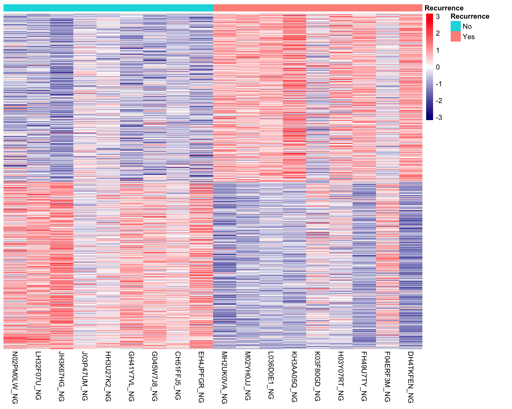
Visualize top significant features identified in Normal samples (ns: p > 0.05, \(*\): p <= 0.05, \(**\): p <= 0.01, \(***\): p <= 0.001)
# Prepare data matrix and metadata including both Tumor and Normal samples
datMat <- proTissueRes_Klin$data
smpAnnoTab <- proTissueRes_Klin$smpMetadata
# Prepare significant feature table
featSigAssoTab <- proNormalRes_Klin$sig.feat.tab
num_sigFeats <- 6
gpLevel = c('Yes_Normal', 'No_Normal', 'Yes_Tumor', 'No_Tumor')
condiCol = c('firebrick', 'grey50') #c(Normal, Tumor)
# Extract top significant features and prepare needed information
topSigFeats <- featSigAssoTab[1:num_sigFeats,] %>%
dplyr::select(Var1, Gene) %>%
dplyr::mutate(newVar1 = paste0(Var1, ' (', Gene, ')'),
newVar1 = factor(newVar1, levels = unique(newVar1)))
topSigFeatDat <- tibble::as_tibble(datMat[topSigFeats$Var1,], rownames = 'Var1') %>%
tidyr::pivot_longer(cols = -'Var1', names_to = 'Sample', values_to = 'Abundance') %>%
dplyr::left_join(topSigFeats, by = 'Var1') %>%
dplyr::left_join(smpAnnoTab, by = 'Sample') %>%
dplyr::mutate(Recur_Condi = paste0(Recurrence, '_', Condition),
Recur_Condi = factor(Recur_Condi, levels = gpLevel))
ggplot(topSigFeatDat, aes(x=Recur_Condi, y=Abundance, col=Condition, fill=Recurrence)) +
geom_boxplot(alpha = 1, outlier.shape = NA, linewidth = 1) +
geom_jitter(position = position_jitter(0.2), size = 2, show.legend = F) +
ggpubr::stat_compare_means(method = 't.test', paired = F, method.args = list(var.equal = T),
comparisons = list(c('Yes_Normal', 'No_Normal'), c('Yes_Tumor', 'No_Tumor')),
label = 'p.signif', tip.length = 0.015, bracket.size = 0.7, size = 4) +
labs(x = 'Recurrence') +
scale_color_manual(values = condiCol) +
scale_fill_manual(values=c('#00BFC4', '#F8766D')) +
facet_wrap(vars(newVar1), scales = 'free') +
th +
theme(strip.text = element_text(size = 13, face = 'bold'),
axis.text.x = element_text(angle = 45, hjust = 1, vjust = 1))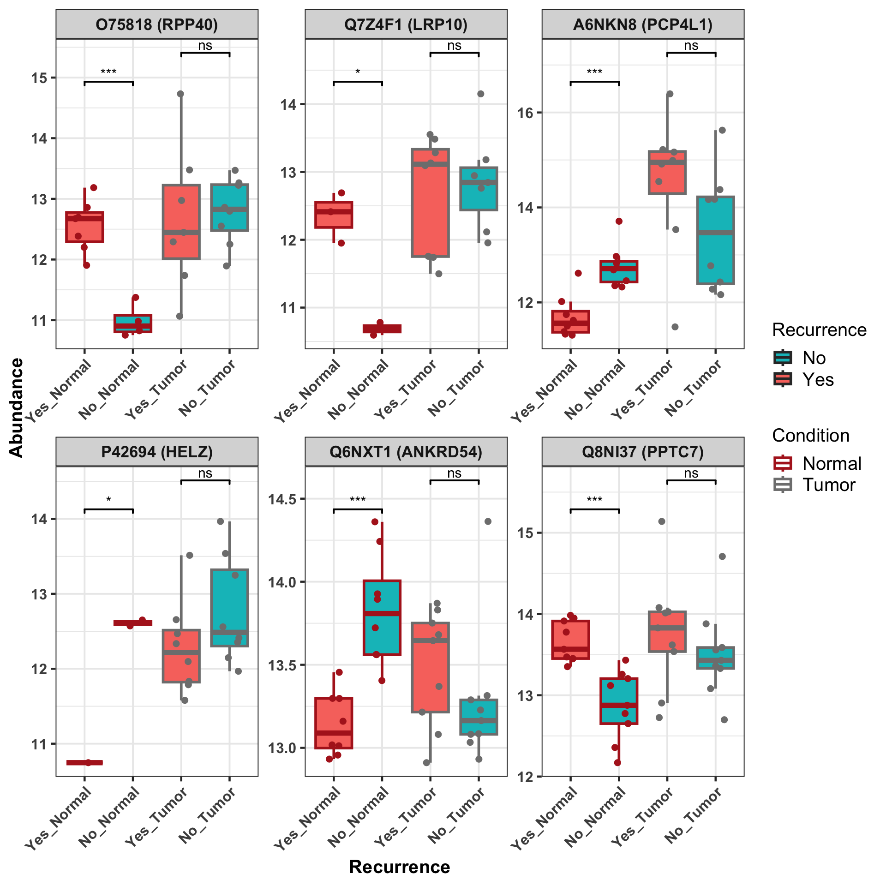
Assess data power by p-value histogram
proNormalRes_Klin$pval.hist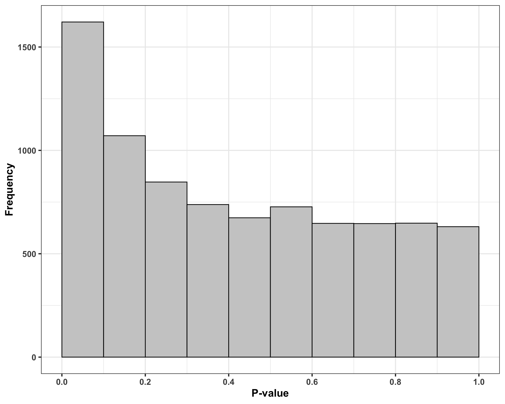
Display significant associations between PCs (Var1) and cancer recurrence (Var2)
proNormalRes_Klin$sig.pc.tab Var1 Var2 pVal pValAdj Stat Test
1 PC1 (14.5%) Recurrence 0.0171 0.158 2.66 T-test
2 PC7 (5.7%) Recurrence 0.0197 0.158 -2.59 T-testVisualize significant PCs and display their top features with greatest absolute loadings
proNormalRes_Klin$sig.pc.dist$PC1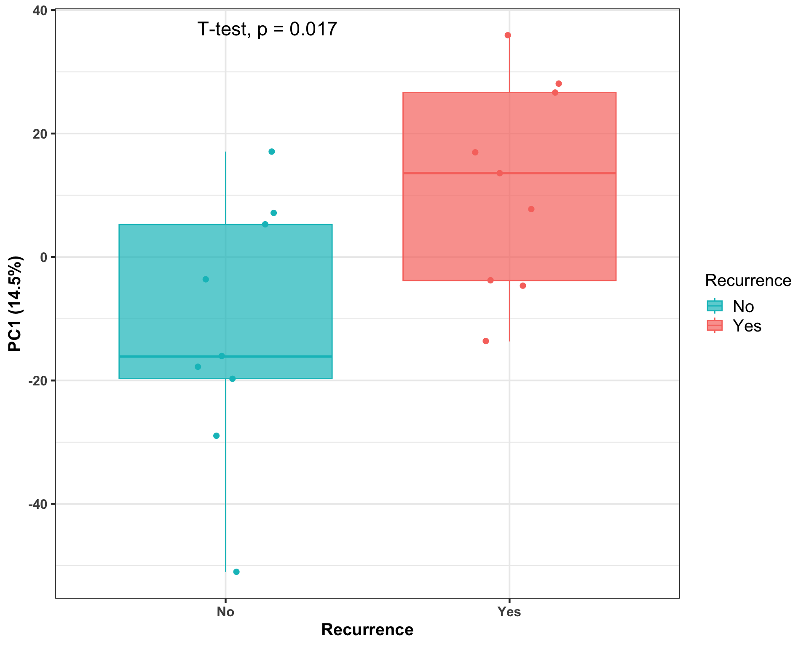
proNormalRes_Klin$pc.top.feat.tab$PC1 Feature Loading Gene
1 Q9H4X1 -0.0875 RGCC
2 Q13478 0.0820 IL18R1
3 Q8N6G6 0.0785 ADAMTSL1
4 P15692 -0.0715 VEGFA
5 P08709 -0.0711 F7
6 Q53QV2 -0.0670 LBH
7 Q9NV29 -0.0637 TMEM100
8 P03973 0.0602 SLPI
9 O00481 -0.0585 BTN3A1
10 P27482 -0.0578 CALML3
11 Q9BXV9 -0.0576 GON7
12 Q96PV0 -0.0573 SYNGAP1
13 P0DP23;P0DP24;P0DP25 -0.0572 CALM1;CALM2;CALM3
14 P15882 -0.0564 CHN1
15 Q8TBC3 -0.0563 SHKBP1
16 P24530 -0.0534 EDNRB
17 Q5T749 -0.0520 KPRP
18 Q9H6F2 -0.0515 TMEM38A
19 O15226 -0.0512 NKRF
20 O60220 -0.0508 TIMM8A
21 Q14722 -0.0505 KCNAB1
22 Q96J42 -0.0488 TXNDC15
23 A5D8V6 -0.0487 VPS37C
24 P06702 -0.0484 S100A9
25 P27918 0.0469 CFP
26 A0A0J9YXX1 0.0467 IGHV5-10-1
27 P84157 -0.0458 MXRA7
28 O00292 0.0454 LEFTY2
29 Q9NQ84 -0.0451 GPRC5C
30 Q8IYW2 0.0450 CFAP46proNormalRes_Klin$sig.pc.dist$PC7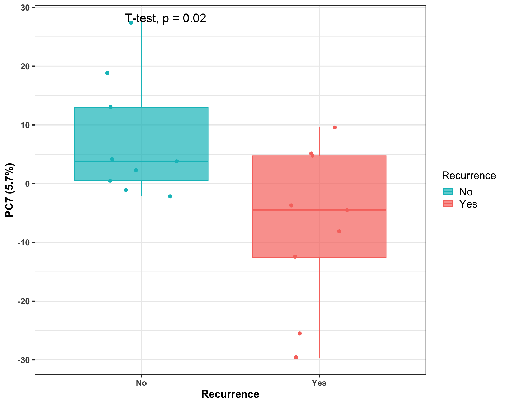
proNormalRes_Klin$pc.top.feat.tab$PC7 Feature Loading Gene
1 Q8IYW2 0.2130 CFAP46
2 P16050 0.1190 ALOX15
3 Q99704 0.1040 DOK1
4 Q8TBC3 0.0894 SHKBP1
5 Q96RS0 -0.0877 TGS1
6 Q6P4A7 -0.0862 SFXN4
7 Q2M296 0.0853 MTHFSD
8 P02741 -0.0830 CRP
9 O95551 -0.0772 TDP2
10 Q9NQ84 -0.0762 GPRC5C
11 Q6P2P2 0.0724 PRMT9
12 P08779 0.0722 KRT16
13 O60287 -0.0708 URB1
14 Q6AI12 -0.0705 ANKRD40
15 Q9ULD4 0.0699 BRPF3
16 Q96QD9 -0.0672 FYTTD1
17 Q96SL4 -0.0631 GPX7
18 P12074 -0.0627 COX6A1
19 O95084 0.0620 PRSS23
20 P01127 0.0599 PDGFB
21 Q9UJX4 0.0589 ANAPC5
22 Q01201 0.0588 RELB
23 P01112 0.0585 HRAS
24 Q8TF66 0.0576 LRRC15
25 Q15485 0.0574 FCN2
26 P13762 0.0559 HLA-DRB4
27 Q8TEB9 0.0558 RHBDD1
28 O94762 0.0556 RECQL5
29 P19021 -0.0546 PAM
30 Q8N895 0.0542 ZNF366We attempt to identify biomarkers that can predict whether patients WILL suffer from cancer recurrence or not. Therefore, we decided to analyze Baseline and Follow-up samples separately.
# Load normalized data
proPlasma <- readRDS('./data/MethodDev/AG_Krijgsveld/new_proPlasmaVsn.rds')
# Manually modify metadata time point information
tmp_metadata <- as.data.frame(colData(proPlasma)) %>%
dplyr::mutate(TimePoint = dplyr::case_when(Condition == 'Baseline' ~ 'Baseline',
Condition != 'Baseline' ~ '2 years later'))
colData(proPlasma)['TimePoint'] <- tmp_metadata$TimePoint
# Prepare feature annotation table
featAnnoTab <- tibble::as_tibble(rowData(proPlasma), rownames = 'Protein') %>%
dplyr::select(Protein, Genes) %>%
dplyr::rename(Gene = Genes) %>%
tibble::column_to_rownames('Protein')
# Perform single-omics analysis
proPlasmaRes <- doSOA(proPlasma, meta_var = 'TimePoint', pca_method = 'ppca', do_onlyPCA = T)Display significant associations between learned PCs (Var1) and metadata variables (Var2)
# Subset certain samples
proBase <- proPlasma[, which(colData(proPlasma)$Condition == 'Baseline')]
# Perform single-omics analysis
proBaseRes <- doSingleOmicsAnalysis(proBase, soa_metaVar = 'Recurrence', num_sigFeats = 6,
pca_method = 'ppca', num_PCs = 19, num_PCfeats = 30,
use_limma = F, use_proDA = T, feat_anno = featAnnoTab,
feat_conv = T, plot_title = NULL,
pca_metaVar = c('Recurrence', 'Gender', 'Age',
'Smoking', 'Stage', 'Adjuvant'))Display significant associations between PCs (Var1) and sample metadata variables (Var2) to overview sources of variance in data
proBaseRes$data.var.source Var1 Var2 pVal pValAdj Stat Test
1 PC6 (3.7%) Adjuvant 0.0133 0.793 -2.740 T-test
2 PC15 (1.6%) Age 0.0223 0.793 0.508 Correlation
3 PC10 (2.6%) Recurrence 0.0325 0.793 2.320 T-test
4 PC4 (6.3%) Recurrence 0.0346 0.793 -2.290 T-test
5 PC8 (3%) Smoking 0.0422 0.793 3.840 ANOVA
6 PC5 (5.2%) Age 0.0450 0.793 0.453 CorrelationDisplay significant associations between features (Var1) and cancer recurrence (Var2). Owing to missing values, there may be situation that only few observations in sample groups, resulting in unreliable t-statistics. To this end, we used probabilistic dropout model (proDA) to account for data missingness.
proBaseRes$sig.feat.tab Var1 Var2 pVal pValAdj Stat Test Gene
1 A0A075B6Q5 Recurrence 0.000123 0.0788 4.87 T-test (proDA) IGHV3-64
2 A0A0B4J1U3 Recurrence 0.012000 0.9760 -2.79 T-test (proDA) IGLV1-36
3 A0A0J9YXX1 Recurrence 0.013100 0.9760 2.75 T-test (proDA) IGHV5-10-1
4 Q08380 Recurrence 0.016400 0.9760 2.65 T-test (proDA) LGALS3BP
5 A0A075B6J1 Recurrence 0.025200 0.9760 -2.44 T-test (proDA) IGLV5-37
6 Q9UBW5 Recurrence 0.042100 0.9760 -2.19 T-test (proDA) BIN2
7 Q8NI99 Recurrence 0.044800 0.9760 2.16 T-test (proDA) ANGPTL6Visualize molecular signatures of significant features in data. Note that features in rows are ordered by t-statistics.
proBaseRes$sig.feat.heat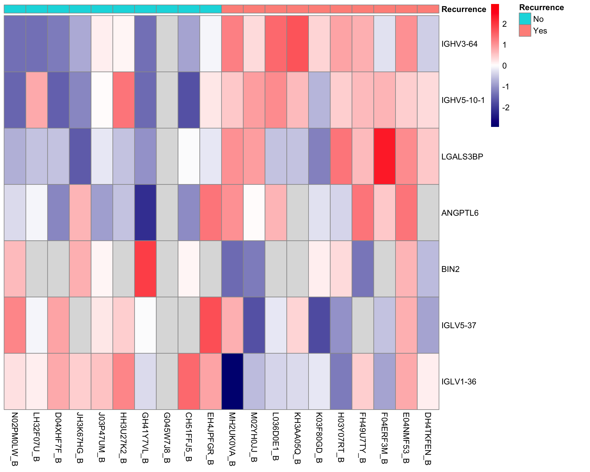
Visualize top significant features identified in Baseline samples (ns: p > 0.05, \(*\): p <= 0.05, \(**\): p <= 0.01, \(***\): p <= 0.001)
# Prepare data matrix and metadata including both Baseline and Follow-up samples
dat <- proPlasmaRes$data
smpAnnoTab <- proPlasmaRes$smpMetadata %>%
dplyr::mutate(TimePoint = dplyr::case_when(TimePoint == 'Baseline' ~ 'Baseline',
TimePoint == '2 years later' ~ 'Follow-up'))
# Prepare significant feature table
featSigAssoTab <- proBaseRes$sig.feat.tab
num_sigFeats <- 6
gpLevel = c('Yes_Baseline', 'No_Baseline', 'Yes_Follow-up', 'No_Follow-up')
tpCol = c('firebrick', 'grey50') #c(Baseline, Follow-up)
# Extract top significant features and prepare needed information
topSigFeats <- featSigAssoTab[1:num_sigFeats,] %>%
dplyr::select(Var1, Gene) %>%
dplyr::mutate(newVar1 = paste0(Var1, '\n(', Gene, ')'),
newVar1 = factor(newVar1, levels = unique(newVar1)))
topSigFeatDat <- tibble::as_tibble(dat[topSigFeats$Var1,], rownames = 'Var1') %>%
tidyr::pivot_longer(cols = -'Var1', names_to = 'Sample', values_to = 'Abundance') %>%
dplyr::left_join(topSigFeats, by = 'Var1') %>%
dplyr::left_join(smpAnnoTab, by = 'Sample') %>%
dplyr::mutate(Recur_TP = paste0(Recurrence, '_', TimePoint),
Recur_TP = factor(Recur_TP, levels = gpLevel))
ggplot(topSigFeatDat, aes(x=Recur_TP, y=Abundance, col=TimePoint, fill=Recurrence)) +
geom_boxplot(alpha = 1, outlier.shape = NA, linewidth = 1) +
geom_jitter(position = position_jitter(0.2), size = 2, show.legend = F) +
ggpubr::stat_compare_means(method = 't.test', paired = F, method.args = list(var.equal = T),
comparisons = list(c('Yes_Baseline', 'No_Baseline'),
c('Yes_Follow-up', 'No_Follow-up')),
label = 'p.signif', tip.length = 0.015, bracket.size = 0.7, size = 4) +
labs(x = 'Recurrence') +
scale_color_manual(values = tpCol, name = 'Time Point') +
scale_fill_manual(values=c('#00BFC4', '#F8766D')) +
facet_wrap(vars(newVar1), scales = 'free') +
th + theme(strip.text = element_text(size = 13, face = 'bold'),
axis.text.x = element_text(angle = 45, hjust = 1, vjust = 1))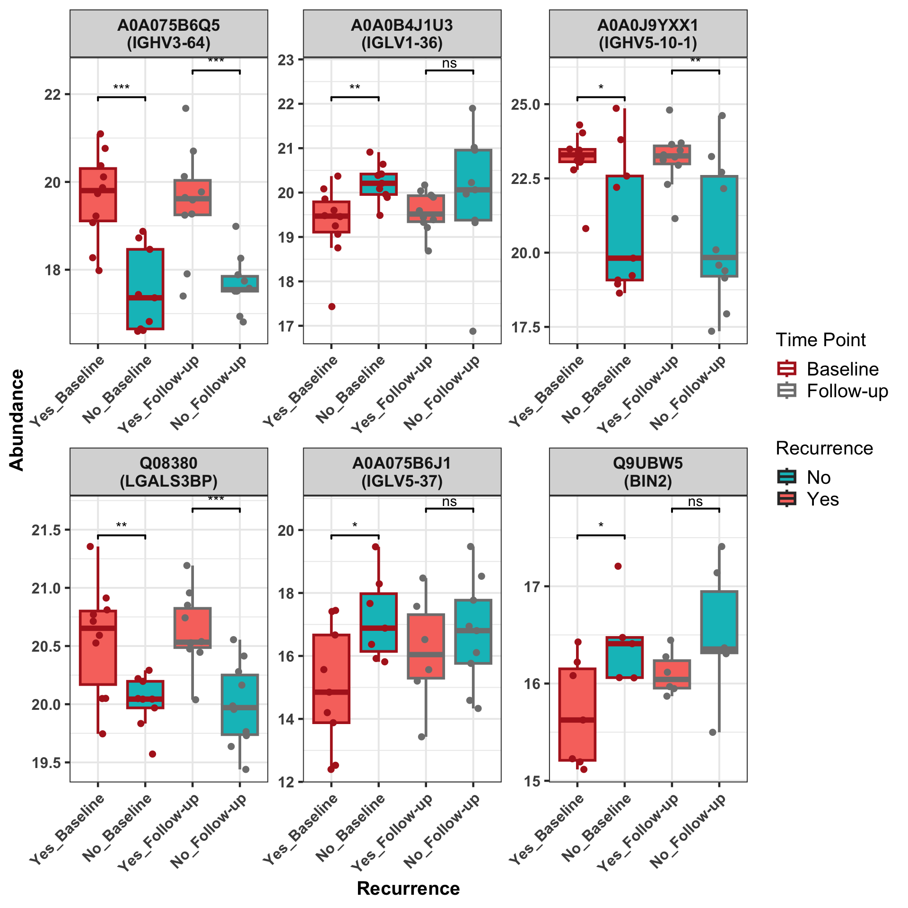
Assess data power by p-value histogram
proBaseRes$pval.hist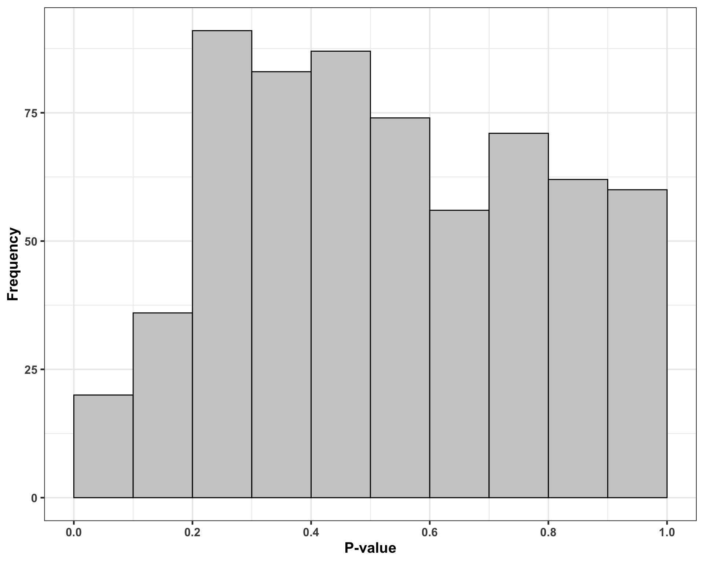
Display significant associations between PCs (Var1) and cancer recurrence (Var2)
proBaseRes$sig.pc.tab Var1 Var2 pVal pValAdj Stat Test
1 PC10 (2.6%) Recurrence 0.0325 0.329 2.32 T-test
2 PC4 (6.3%) Recurrence 0.0346 0.329 -2.29 T-testVisualize significant PCs and display their top features with greatest absolute loadings
proBaseRes$sig.pc.dist$PC10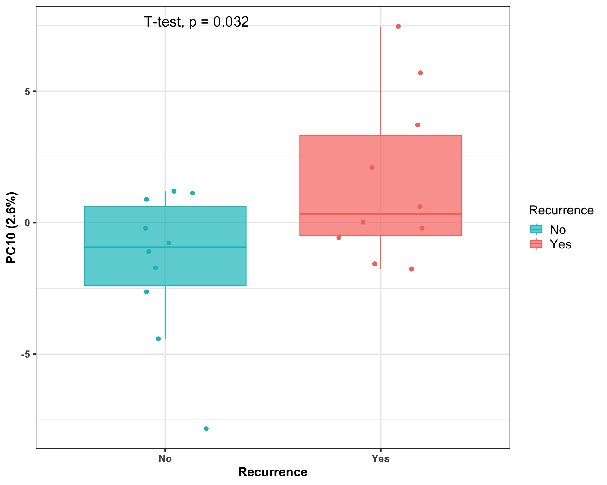
proBaseRes$pc.top.feat.tab$PC10 Feature Loading Gene
1 A0A0J9YXX1 0.3000 IGHV5-10-1
2 A0A075B6Q5 0.2950 IGHV3-64
3 P20742 0.1980 PZP
4 P08519 -0.1810 LPA
5 P30622 0.1620 CLIP1
6 A0A075B6J1 -0.1590 IGLV5-37
7 A0A075B6I0 0.1490 IGLV8-61
8 A0A075B6I4 0.1470 IGLV10-54
9 Q9NP80 0.1360 PNPLA8
10 A0A075B6K6 -0.1300 IGLV4-3
11 Q9HDC9 -0.1220 APMAP
12 P01718 -0.1200 IGLV3-27
13 A0A0B4J1U3 -0.1150 IGLV1-36
14 P19971 -0.1080 TYMP
15 P49913 -0.1050 CAMP
16 O75884 -0.1030 RBBP9
17 P0DJI8 0.0972 SAA1
18 A0A0C4DH25 0.0928 IGKV3D-20
19 P11166 0.0920 SLC2A1
20 P01742 0.0918 IGHV1-69
21 O00194 0.0876 RAB27B
22 Q8WWA0 0.0857 ITLN1
23 A0A075B6J9 0.0840 IGLV2-18
24 P04275 0.0834 VWF
25 P01764 -0.0830 IGHV3-23
26 P02730 0.0795 SLC4A1
27 P61981 0.0767 YWHAG
28 Q9P2M4 0.0758 TBC1D14
29 Q4G0P3 -0.0746 HYDIN
30 P24557 0.0741 TBXAS1proBaseRes$sig.pc.dist$PC4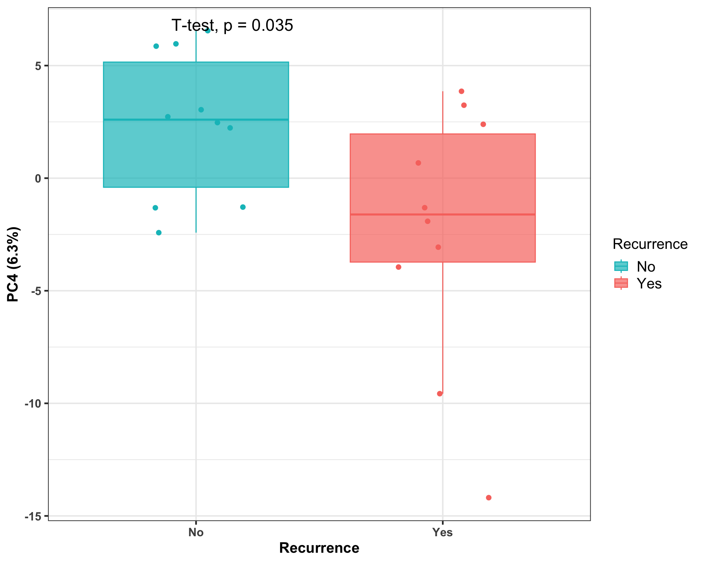
proBaseRes$pc.top.feat.tab$PC4 Feature Loading Gene
1 P13645 -0.2590 KRT10
2 P04264 -0.2500 KRT1
3 A0A0G2JMI3 0.1980 IGHV1-69-2
4 Q9P2M4 -0.1760 TBC1D14
5 P35908 -0.1660 KRT2
6 A0A0J9YXX1 -0.1620 IGHV5-10-1
7 A0A0C4DH29 0.1510 IGHV1-3
8 P09172 0.1480 DBH
9 Q9UNM6 0.1480 PSMD13
10 P0DJI8 0.1380 SAA1
11 P62328 0.1330 TMSB4X
12 A0A075B6I1 0.1220 IGLV4-60
13 P35527 -0.1130 KRT9
14 A0A075B6I4 0.1130 IGLV10-54
15 P01705 0.1060 IGLV2-23
16 P02741 0.1060 CRP
17 A0A075B6J1 0.1050 IGLV5-37
18 A0A075B6I7 0.1030 IGLV5-48
19 A0A087WSX0 0.0881 IGLV5-45
20 A0A075B6I0 0.0849 IGLV8-61
21 P78563 0.0810 ADARB1
22 P04211 0.0808 IGLV7-43
23 P78527 0.0802 PRKDC
24 Q6Q788 -0.0773 APOA5
25 P26641 -0.0768 EEF1G
26 P20742 0.0750 PZP
27 Q15404 0.0742 RSU1
28 P09651 0.0735 HNRNPA1
29 P67936 0.0719 TPM4
30 A0A075B6Q5 -0.0710 IGHV3-64Display significant associations between learned PCs (Var1) and metadata variables (Var2)
# Subset follow-up samples
proFolo <- proPlasma[, which(colData(proPlasma)$Condition != 'Baseline')]
# Perform single-omics analysis
proFoloRes <- doSingleOmicsAnalysis(proFolo, soa_metaVar = 'Recurrence', num_sigFeats = 6,
pca_method = 'ppca', num_PCs = 18, num_PCfeats = 30,
use_limma = F, use_proDA = T, feat_anno = featAnnoTab,
feat_conv = T, plot_title = NULL,
pca_metaVar = c('Recurrence', 'Gender', 'Adjuvant'))Display significant associations between PCs (Var1) and sample metadata variables (Var2) to overview sources of variance in data
proFoloRes$data.var.source Var1 Var2 pVal pValAdj Stat Test
1 PC6 (5.7%) Gender 0.0110 0.594 -2.83 T-test
2 PC14 (2.5%) Recurrence 0.0482 0.721 -2.12 T-testDisplay significant associations between features (Var1) and cancer recurrence (Var2). Owing to missing values, there may be situation that only few observations in sample groups, resulting in unreliable t-statistics. To this end, we used probabilistic dropout model (proDA) to account for data missingness.
proFoloRes$sig.feat.tab Var1 Var2 pVal pValAdj Stat Test Gene
1 A0A075B6Q5 Recurrence 0.000331 0.212 4.42 T-test (proDA) IGHV3-64
2 Q08380 Recurrence 0.001610 0.515 3.71 T-test (proDA) LGALS3BP
3 P11216 Recurrence 0.005950 0.609 -3.12 T-test (proDA) PYGB
4 A0A0J9YXX1 Recurrence 0.007170 0.609 3.03 T-test (proDA) IGHV5-10-1
5 P59998 Recurrence 0.008270 0.609 -2.97 T-test (proDA) ARPC4
6 Q92820 Recurrence 0.008400 0.609 2.96 T-test (proDA) GGH
7 P48059 Recurrence 0.012300 0.609 -2.78 T-test (proDA) LIMS1
8 P20340;Q9NRW1 Recurrence 0.013300 0.609 -2.75 T-test (proDA) RAB6A;RAB6B
9 O15144 Recurrence 0.015300 0.609 -2.68 T-test (proDA) ARPC2
10 Q12931 Recurrence 0.016700 0.609 -2.64 T-test (proDA) TRAP1
11 P52566 Recurrence 0.017800 0.609 -2.61 T-test (proDA) ARHGDIB
12 P0DP01 Recurrence 0.020700 0.609 -2.54 T-test (proDA) IGHV1-8
13 O14786 Recurrence 0.021400 0.609 2.52 T-test (proDA) NRP1
14 A0A075B6H9 Recurrence 0.021800 0.609 -2.51 T-test (proDA) IGLV4-69
15 P06331 Recurrence 0.022100 0.609 2.50 T-test (proDA) IGHV4-34
16 Q13642 Recurrence 0.023000 0.609 -2.49 T-test (proDA) FHL1
17 P07384 Recurrence 0.023300 0.609 -2.48 T-test (proDA) CAPN1
18 Q8N6C8 Recurrence 0.023700 0.609 2.47 T-test (proDA) LILRA3
19 P01824 Recurrence 0.023900 0.609 2.47 T-test (proDA) IGHV4-39
20 Q14247 Recurrence 0.024500 0.609 -2.46 T-test (proDA) CTTN
21 P02788 Recurrence 0.028600 0.609 -2.38 T-test (proDA) LTF
22 P02748 Recurrence 0.029200 0.609 2.37 T-test (proDA) C9
23 P31146 Recurrence 0.032400 0.609 -2.32 T-test (proDA) CORO1A
24 Q14019 Recurrence 0.033900 0.609 -2.30 T-test (proDA) COTL1
25 Q99700;Q9NZM4 Recurrence 0.034500 0.609 2.29 T-test (proDA) ATXN2;BICRA
26 Q9NR31;Q9Y6B6 Recurrence 0.036700 0.609 -2.26 T-test (proDA) SAR1A;SAR1B
27 Q96PD5 Recurrence 0.038000 0.609 2.24 T-test (proDA) PGLYRP2
28 Q9NTI5 Recurrence 0.039000 0.609 2.23 T-test (proDA) PDS5B
29 O14950;P19105 Recurrence 0.039200 0.609 -2.22 T-test (proDA) MYL12A;MYL12B
30 P04406 Recurrence 0.039600 0.609 -2.22 T-test (proDA) GAPDH
31 P19320 Recurrence 0.040600 0.609 2.21 T-test (proDA) VCAM1
32 P55103 Recurrence 0.041400 0.609 2.20 T-test (proDA) INHBC
33 P01833 Recurrence 0.042300 0.609 2.19 T-test (proDA) PIGR
34 P09871 Recurrence 0.042700 0.609 2.18 T-test (proDA) C1S
35 P10124 Recurrence 0.043800 0.609 -2.17 T-test (proDA) SRGN
36 P0C0L4 Recurrence 0.044300 0.609 2.16 T-test (proDA) C4A
37 P26038 Recurrence 0.044600 0.609 -2.16 T-test (proDA) MSN
38 P04004 Recurrence 0.044700 0.609 2.16 T-test (proDA) VTN
39 P07900 Recurrence 0.046300 0.609 2.14 T-test (proDA) HSP90AA1
40 Q9NZP8 Recurrence 0.046500 0.609 2.14 T-test (proDA) C1RL
41 P01011 Recurrence 0.047800 0.609 2.12 T-test (proDA) SERPINA3
42 Q9NQC3 Recurrence 0.049700 0.609 -2.10 T-test (proDA) RTN4Visualize molecular signatures of significant features in data. Note that features in rows are ordered by t-statistics.
proFoloRes$sig.feat.heat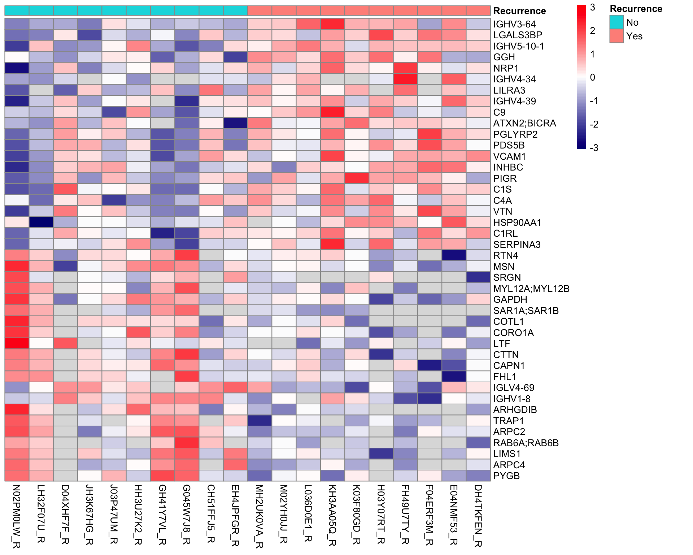
Visualize top significant features identified in Follow-up samples (ns: p > 0.05, \(*\): p <= 0.05, \(**\): p <= 0.01, \(***\): p <= 0.001)
# Prepare data matrix and metadata including both Baseline and Follow-up samples
dat <- proPlasmaRes$data
smpAnnoTab <- proPlasmaRes$smpMetadata %>%
dplyr::mutate(TimePoint = dplyr::case_when(TimePoint == 'Baseline' ~ 'Baseline',
TimePoint == '2 years later' ~ 'Follow-up'))
# Prepare significant feature table
featSigAssoTab <- proFoloRes$sig.feat.tab
num_sigFeats <- 6
gpLevel = c('Yes_Follow-up', 'No_Follow-up', 'Yes_Baseline', 'No_Baseline')
tpCol = c('grey50', 'firebrick') #c(Baseline, Follow-up)
# Extract top significant features and prepare needed information
topSigFeats <- featSigAssoTab[1:num_sigFeats,] %>%
dplyr::select(Var1, Gene) %>%
dplyr::mutate(newVar1 = paste0(Var1, '\n(', Gene, ')'),
newVar1 = factor(newVar1, levels = unique(newVar1)))
topSigFeatDat <- tibble::as_tibble(dat[topSigFeats$Var1,], rownames = 'Var1') %>%
tidyr::pivot_longer(cols = -'Var1', names_to = 'Sample', values_to = 'Abundance') %>%
dplyr::left_join(topSigFeats, by = 'Var1') %>%
dplyr::left_join(smpAnnoTab, by = 'Sample') %>%
dplyr::mutate(Recur_TP = paste0(Recurrence, '_', TimePoint),
Recur_TP = factor(Recur_TP, levels = gpLevel))
ggplot(topSigFeatDat, aes(x=Recur_TP, y=Abundance, col=TimePoint, fill=Recurrence)) +
geom_boxplot(alpha = 1, outlier.shape = NA, linewidth = 1) +
geom_jitter(position = position_jitter(0.2), size = 2, show.legend = F) +
ggpubr::stat_compare_means(method = 't.test', paired = F, method.args = list(var.equal = T),
comparisons = list(c('Yes_Follow-up', 'No_Follow-up'),
c('Yes_Baseline', 'No_Baseline')),
label = 'p.signif', tip.length = 0.015, bracket.size = 0.7, size = 4) +
labs(x = 'Recurrence') +
scale_color_manual(values = tpCol, name = 'Time Point') +
scale_fill_manual(values=c('#00BFC4', '#F8766D')) +
facet_wrap(vars(newVar1), scales = 'free') +
th + theme(strip.text = element_text(size = 13, face = 'bold'),
axis.text.x = element_text(angle = 45, hjust = 1, vjust = 1))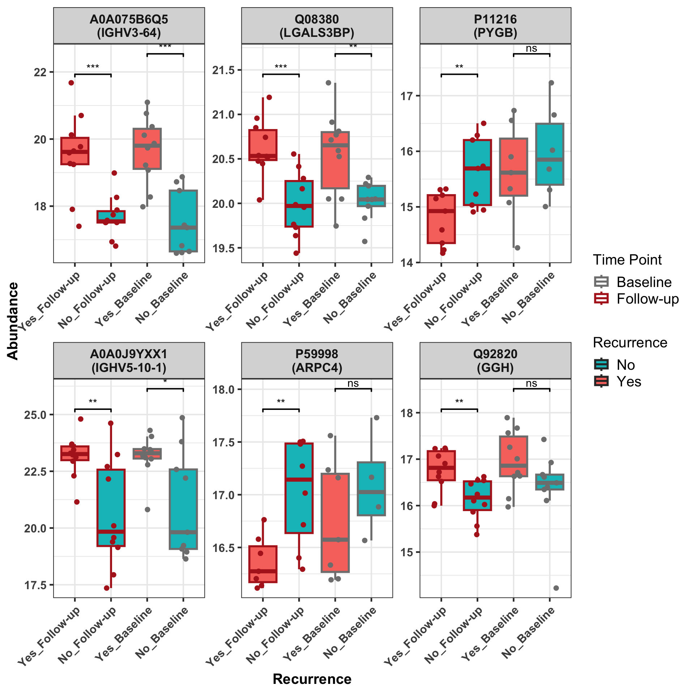
Assess data power by p-value histogram
proFoloRes$pval.hist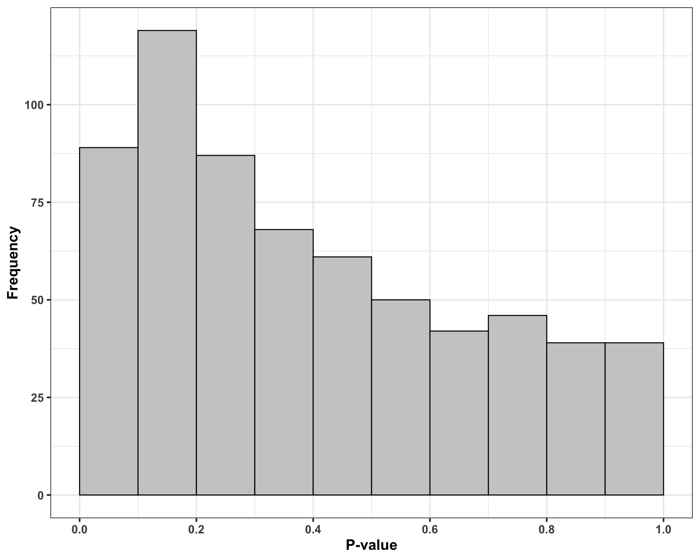
Display significant associations between PCs (Var1) and cancer recurrence (Var2)
proFoloRes$sig.pc.tab Var1 Var2 pVal pValAdj Stat Test
1 PC14 (2.5%) Recurrence 0.0482 0.508 -2.12 T-testVisualize significant PCs and display their top features with greatest absolute loadings
proFoloRes$sig.pc.dist$PC14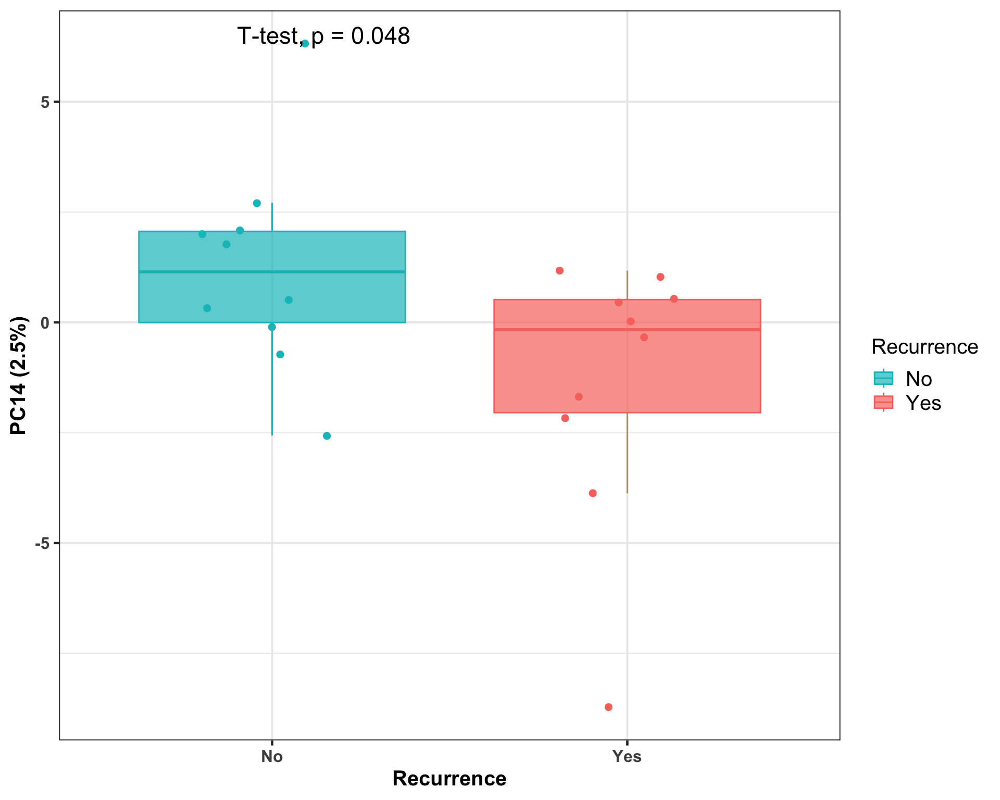
proFoloRes$pc.top.feat.tab$PC14 Feature Loading Gene
1 P50914 0.2980 RPL14
2 A6NJL1;A8MUV8 -0.2140 ZNF727;ZSCAN5B
3 P01718 -0.1990 IGLV3-27
4 A0A0J9YXX1 -0.1830 IGHV5-10-1
5 A0A075B6J1 -0.1370 IGLV5-37
6 P09172 0.1340 DBH
7 P08519 -0.1300 LPA
8 P36222 0.1290 CHI3L1
9 P01742 -0.1210 IGHV1-69
10 P20742 -0.1200 PZP
11 P35527 0.1160 KRT9
12 A0A075B6Q5 -0.1150 IGHV3-64
13 P40197 -0.1150 GP5
14 P01833 -0.1120 PIGR
15 P06576 0.1090 ATP5F1B
16 B1AJZ9 -0.1080 FHAD1
17 P49913 0.1060 CAMP
18 P30622 -0.1040 CLIP1
19 O75884 -0.1020 RBBP9
20 P22891 0.0963 PROZ
21 P05062 0.0913 ALDOB
22 P14770 -0.0909 GP9
23 P58335 -0.0884 ANTXR2
24 P68104;Q5VTE0 -0.0883 EEF1A1;EEF1A1P5
25 P08758 0.0866 ANXA5
26 A0A075B6H9 0.0865 IGLV4-69
27 P11226 -0.0851 MBL2
28 A0A0C4DH43 0.0838 IGHV2-70D
29 P48735 -0.0833 IDH2
30 A6NE52 -0.0826 WDR97# Load and subset all considered Method Development datasets
# Specific functions for subsetting data
subPlasma <- function(summ_exp) {
smpAnno <- as.data.frame(colData(summ_exp))
base <- summ_exp[, smpAnno[['Condition']] == 'Baseline']
folo <- summ_exp[, smpAnno[['Condition']] != 'Baseline']
return(list(Base = base, Folo = folo))
}
subTissue <- function(summ_exp) {
smpAnno <- as.data.frame(colData(summ_exp))
tumor <- summ_exp[, smpAnno[['Condition']] == 'Tumor']
normal <- summ_exp[, smpAnno[['Condition']] == 'Normal']
return(list(Tumor = tumor, Normal = normal))
}
# Load normalized datasets and subset them into Baseline/Follow-up and Tumor/Normal datasets
# NO MISSINGNESS
# Targeted Plasma Metabolomics
metaPlasma_Hell <- readRDS('./data/MethodDev/AG_Hell/metaPlasmaVsn.rds')
metaBase_Hell <- subPlasma(metaPlasma_Hell)$Base
metaFolo_Hell <- subPlasma(metaPlasma_Hell)$Folo
# Targeted Tissue Metabolomics
metaTissue_Hell <- readRDS('./data/MethodDev/AG_Hell/metaTissueVsn.rds')
metaTumor_Hell <- subTissue(metaTissue_Hell)$Tumor
metaNormal_Hell <- subTissue(metaTissue_Hell)$Normal
# DDA Plasma Proteomics
proPlasma_Kri_DDA <- readRDS('./data/MethodDev/AG_Krijgsveld/proPlasmaVsn_DDA.rds')
proBase_Kri_DDA <- subPlasma(proPlasma_Kri_DDA)$Base
proFolo_Kri_DDA <- subPlasma(proPlasma_Kri_DDA)$Folo
# DDA Tissue Proteomics
proTissue_Kri_DDA <- readRDS('./data/MethodDev/AG_Krijgsveld/proTissueVsn_DDA.rds')
proTumor_Kri_DDA <- subTissue(proTissue_Kri_DDA)$Tumor
proNormal_Kri_DDA <- subTissue(proTissue_Kri_DDA)$Normal
# WITH MISSINGNESS
# Untargeted Plasma Metabolomics
metaPlasma_Hopf <- readRDS('./data/MethodDev/AG_Hopf/metaPlasmaVsn.rds')
metaBase_Hopf <- subPlasma(metaPlasma_Hopf)$Base
metaFolo_Hopf <- subPlasma(metaPlasma_Hopf)$Folo
# Untargeted Tissue Metabolomics
metaTissue_Hopf <- readRDS('./data/MethodDev/AG_Hopf/metaTissueVsn.rds')
metaTumor_Hopf <- subTissue(metaTissue_Hopf)$Tumor
metaNormal_Hopf <- subTissue(metaTissue_Hopf)$Normal
# Untargeted Plasma Lipidomics
lipPlasma_Hopf <- readRDS('./data/MethodDev/AG_Hopf/lipPlasmaVsn.rds')
lipBase_Hopf <- subPlasma(lipPlasma_Hopf)$Base
lipFolo_Hopf <- subPlasma(lipPlasma_Hopf)$Folo
# Untargeted Tissue Lipidomics
lipTissue_Hopf <- readRDS('./data/MethodDev/AG_Hopf/lipTissueVsn.rds')
lipTumor_Hopf <- subTissue(lipTissue_Hopf)$Tumor
lipNormal_Hopf <- subTissue(lipTissue_Hopf)$Normal
# DIA Plasma Proteomics (AG Krijgsveld)
proPlasma_Kri_DIA <- readRDS('./data/MethodDev/AG_Krijgsveld/proPlasmaVsn.rds')
proBase_Kri_DIA <- subPlasma(proPlasma_Kri_DIA)$Base
proFolo_Kri_DIA <- subPlasma(proPlasma_Kri_DIA)$Folo
# New DIA Plasma Proteomics (AG Krijgsveld)
new_proPlasma_Kri_DIA <- readRDS('./data/MethodDev/AG_Krijgsveld/new_proPlasmaVsn.rds')
new_proBase_Kri_DIA <- subPlasma(new_proPlasma_Kri_DIA)$Base
new_proFolo_Kri_DIA <- subPlasma(new_proPlasma_Kri_DIA)$Folo
# New DIA Tissue Proteomics (AG Krijgsveld)
new_proTissue_Kri_DIA <- readRDS('./data/MethodDev/AG_Krijgsveld/new_proTissueVsn.rds')
new_proTumor_Kri_DIA <- subTissue(new_proTissue_Kri_DIA)$Tumor
new_proNormal_Kri_DIA <- subTissue(new_proTissue_Kri_DIA)$Normal
# DIA Tissue Proteomics (AG Klingmüller)
proTissue_Klin_DIA <- readRDS('./data/MethodDev/AG_Klingmueller/proTissueVsn.rds')
# Extract Method Development samples
proTissue_Klin_DIA <- proTissue_Klin_DIA[, colData(proTissue_Klin_DIA)$Cohort == 'MethodDev']
proTumor_Klin_DIA <- subTissue(proTissue_Klin_DIA)$Tumor
proNormal_Klin_DIA <- subTissue(proTissue_Klin_DIA)$NormalVisualize recurrence-related features from new DIA Tissue and Plasma Proteomics generated by AG Krijgsveld and DIA Tissue Proteomics by AG Klingmüller through volcano plots. Log2-FC (up and down) is recurrence to non-recurrence groups. To be clearer, entities on up side are more abundant in recurrence group than non-recurrence group, and so forth.
# Prepare protein-gene tables for annotations
proTissueFeatInfo_Kri <- tibble::as_tibble(rowData(new_proTissue_Kri_DIA), rownames = 'Feature') %>%
dplyr::select(Feature, Genes) %>%
dplyr::rename(Gene = Genes)
proTissueFeatInfo_Klin <- tibble::as_tibble(rowData(proTissue_Klin_DIA), rownames = 'Feature') %>%
dplyr::select(Feature, PG.Genes) %>%
dplyr::rename(Gene = PG.Genes)
proPlasmaFeatInfo_Kri <- tibble::as_tibble(rowData(new_proPlasma_Kri_DIA), rownames = 'Feature') %>%
dplyr::select(Feature, Genes) %>%
dplyr::rename(Gene = Genes)
# Compute log2(FC)
# TP (AG Krijgsveld)
new_proTissueMedi_Kri <- readRDS('./data/MethodDev/AG_Krijgsveld/new_proTissueMedi.rds') %>%
summExp2df(row_id = 'Feature', col_id = 'Sample') %>%
dplyr::select(Feature, Value, Condition, Recurrence)
# TTP
proTumorLogFC_Kri <- dplyr::filter(new_proTissueMedi_Kri, Condition == 'Tumor') %>%
dplyr::group_by(Feature, Recurrence) %>%
dplyr::summarise(Mean = mean(Value, na.rm = T)) %>%
dplyr::ungroup() %>%
tidyr::pivot_wider(names_from = 'Recurrence', values_from = 'Mean') %>%
dplyr::mutate(logFC = Yes - No) %>%
dplyr::select(Feature, logFC)
# NTP
proNormalLogFC_Kri <- dplyr::filter(new_proTissueMedi_Kri, Condition == 'Normal') %>%
dplyr::group_by(Feature, Recurrence) %>%
dplyr::summarise(Mean = mean(Value, na.rm = T)) %>%
dplyr::ungroup() %>%
tidyr::pivot_wider(names_from = 'Recurrence', values_from = 'Mean') %>%
dplyr::mutate(logFC = Yes - No) %>%
dplyr::select(Feature, logFC)
# TP (AG Klingmüller)
proTissueMedi_Klin <- readRDS('./data/MethodDev/AG_Klingmueller/proTissueMedi.rds') %>%
summExp2df(row_id = 'Feature', col_id = 'Sample') %>%
dplyr::filter(Cohort == 'MethodDev') %>%
dplyr::select(Feature, Value, Condition, Recurrence)
# TTP
proTumorLogFC_Klin <- dplyr::filter(proTissueMedi_Klin, Condition == 'Tumor') %>%
dplyr::group_by(Feature, Recurrence) %>%
dplyr::summarise(Mean = mean(Value, na.rm = T)) %>%
dplyr::ungroup() %>%
tidyr::pivot_wider(names_from = 'Recurrence', values_from = 'Mean') %>%
dplyr::mutate(logFC = Yes - No) %>%
dplyr::select(Feature, logFC)
# NTP
proNormalLogFC_Klin <- dplyr::filter(proTissueMedi_Klin, Condition == 'Normal') %>%
dplyr::group_by(Feature, Recurrence) %>%
dplyr::summarise(Mean = mean(Value, na.rm = T)) %>%
dplyr::ungroup() %>%
tidyr::pivot_wider(names_from = 'Recurrence', values_from = 'Mean') %>%
dplyr::mutate(logFC = Yes - No) %>%
dplyr::select(Feature, logFC)
# PP
new_proPlasmaMedi_Kri <- readRDS('./data/MethodDev/AG_Krijgsveld/new_proPlasmaMedi.rds') %>%
summExp2df(row_id = 'Feature', col_id = 'Sample') %>%
dplyr::select(Feature, Value, Condition, Recurrence)
# BPP
proBaseLogFC_Kri <- dplyr::filter(new_proPlasmaMedi_Kri, Condition == 'Baseline') %>%
dplyr::group_by(Feature, Recurrence) %>%
dplyr::summarise(Mean = mean(Value, na.rm = T)) %>%
dplyr::ungroup() %>%
tidyr::pivot_wider(names_from = 'Recurrence', values_from = 'Mean') %>%
dplyr::mutate(logFC = Yes - No) %>%
dplyr::select(Feature, logFC)
# FPP
proFoloLogFC_Kri <- dplyr::filter(new_proPlasmaMedi_Kri, Condition != 'Baseline') %>%
dplyr::group_by(Feature, Recurrence) %>%
dplyr::summarise(Mean = mean(Value, na.rm = T)) %>%
dplyr::ungroup() %>%
tidyr::pivot_wider(names_from = 'Recurrence', values_from = 'Mean') %>%
dplyr::mutate(logFC = Yes - No) %>%
dplyr::select(Feature, logFC)
# Prepare tables of associations between features and cancer recurrence
proTumorFeatAsso_Kri <- proTumorRes$SOA.res$featAssoRes
proNormalFeatAsso_Kri <- proNormalRes$SOA.res$featAssoRes
proTumorFeatAsso_Klin <- proTumorRes_Klin$SOA.res$featAssoRes
proNormalFeatAsso_Klin <- proNormalRes_Klin$SOA.res$featAssoRes
proBaseFeatAsso_Kri <- proBaseRes$SOA.res$featAssoRes
proFoloFeatAsso_Kri <- proFoloRes$SOA.res$featAssoRes
# Collect all needed information for volcano plots
# TTP (AG Krijgsveld)
proTumorVolTab_Kri <- dplyr::select(proTumorFeatAsso_Kri, Var1, pVal) %>%
dplyr::rename(Feature = Var1) %>%
dplyr::left_join(proTumorLogFC_Kri, by = 'Feature') %>%
dplyr::left_join(proTissueFeatInfo_Kri, by = 'Feature')
# NTP (AG Krijgsveld)
proNormalVolTab_Kri <- dplyr::select(proNormalFeatAsso_Kri, Var1, pVal) %>%
dplyr::rename(Feature = Var1) %>%
dplyr::left_join(proNormalLogFC_Kri, by = 'Feature') %>%
dplyr::left_join(proTissueFeatInfo_Kri, by = 'Feature')
# TTP (AG Klingmüller)
proTumorVolTab_Klin <- dplyr::select(proTumorFeatAsso_Klin, Var1, pVal) %>%
dplyr::rename(Feature = Var1) %>%
dplyr::left_join(proTumorLogFC_Klin, by = 'Feature') %>%
dplyr::left_join(proTissueFeatInfo_Klin, by = 'Feature')
# NTP (AG Klingmüller)
proNormalVolTab_Klin <- dplyr::select(proNormalFeatAsso_Klin, Var1, pVal) %>%
dplyr::rename(Feature = Var1) %>%
dplyr::left_join(proNormalLogFC_Klin, by = 'Feature') %>%
dplyr::left_join(proTissueFeatInfo_Klin, by = 'Feature')
# BPP
proBaseVolTab_Kri <- dplyr::select(proBaseFeatAsso_Kri, Var1, pVal) %>%
dplyr::rename(Feature = Var1) %>%
dplyr::left_join(proBaseLogFC_Kri, by = 'Feature') %>%
dplyr::left_join(proPlasmaFeatInfo_Kri, by = 'Feature')
# FPP
proFoloVolTab_Kri <- dplyr::select(proFoloFeatAsso_Kri, Var1, pVal) %>%
dplyr::rename(Feature = Var1) %>%
dplyr::left_join(proFoloLogFC_Kri, by = 'Feature') %>%
dplyr::left_join(proPlasmaFeatInfo_Kri, by = 'Feature')Log2-FC cutoffs are 1 (FC=2) and -1 (FC=0.5).
# TTP
volTab <- proTumorVolTab_Kri
volTab['DE'] <- 'Not significant'
volTab$DE[volTab$pVal <= 0.05 & volTab$logFC > 1] <- 'Up'
volTab$DE[volTab$pVal <= 0.05 & volTab$logFC < -1] <- 'Down'
volTab['Label'] <- NA
label4SigFeats <- volTab$Gene[volTab$DE != 'Not significant']
volTab$Label[volTab$DE != 'Not significant'] <- label4SigFeats
ggplot(volTab, aes(x=logFC, y=-log10(pVal), col=DE, label=Label)) +
geom_point(size = 2) +
geom_hline(yintercept = -log10(0.05), col = 'red', linewidth = 0.4) +
geom_vline(xintercept = c(-1, 1), col = 'red', linewidth = 0.4) +
geom_text_repel(size = 4, show.legend = F) +
scale_color_manual(values = c('navy', 'grey', 'red')) +
labs(x = 'log2(FC)', title = 'New Tumor Tissue Proteomics (AG Krij.)') +
th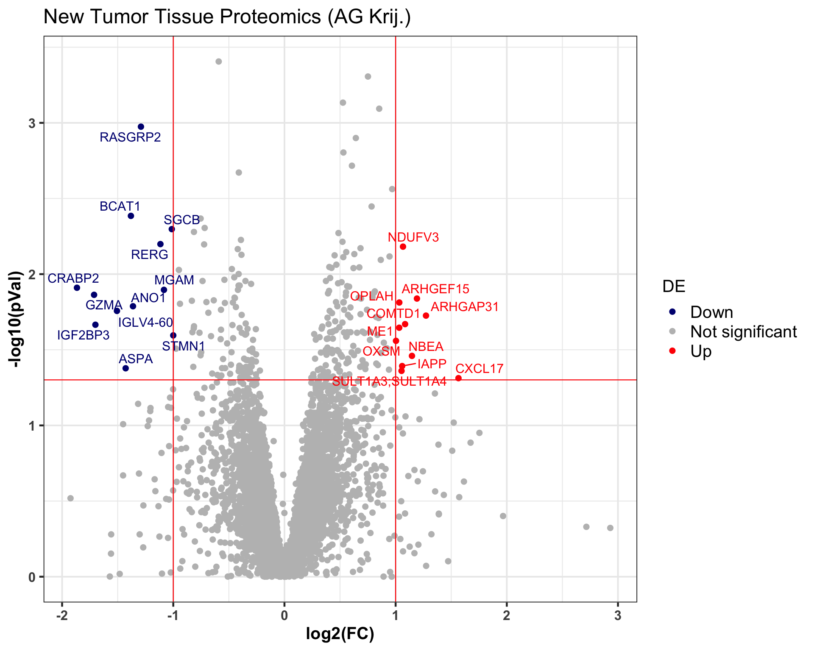
Log2-FC cutoffs are 1 (FC=2) and -1 (FC=0.5).
# NTP
volTab <- proNormalVolTab_Kri
volTab['DE'] <- 'Not significant'
volTab$DE[volTab$pVal <= 0.05 & volTab$logFC > 1] <- 'Up'
volTab$DE[volTab$pVal <= 0.05 & volTab$logFC < -1] <- 'Down'
volTab['Label'] <- NA
label4SigFeats <- volTab$Gene[volTab$DE != 'Not significant']
volTab$Label[volTab$DE != 'Not significant'] <- label4SigFeats
ggplot(volTab, aes(x=logFC, y=-log10(pVal), col=DE, label=Label)) +
geom_point(size = 2) +
geom_hline(yintercept = -log10(0.05), col = 'red', linewidth = 0.4) +
geom_vline(xintercept = c(-1, 1), col = 'red', linewidth = 0.4) +
geom_text_repel(size = 4, show.legend = F) +
scale_color_manual(values = c('navy', 'grey', 'red')) +
labs(x = 'log2(FC)', title = 'New Normal Tissue Proteomics (AG Krij.)') +
th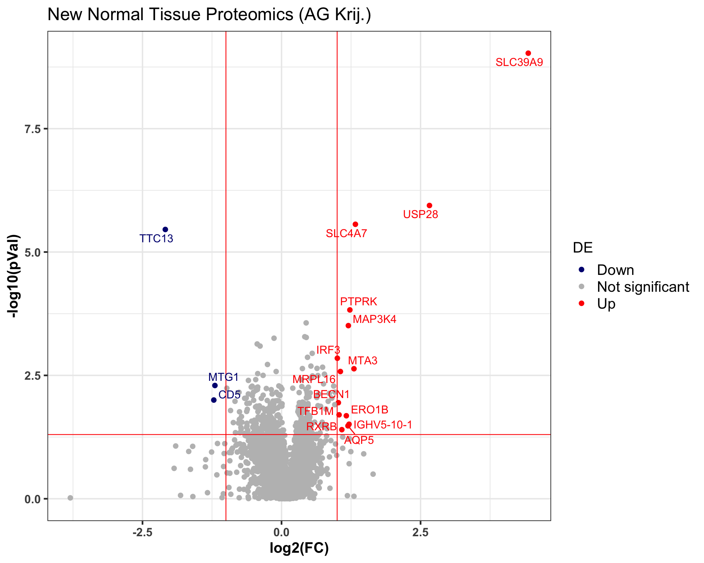
Log2-FC cutoffs are 1 (FC=2) and -1 (FC=0.5).
# TTP
volTab <- proTumorVolTab_Klin
volTab['DE'] <- 'Not significant'
volTab$DE[volTab$pVal <= 0.05 & volTab$logFC > 1] <- 'Up'
volTab$DE[volTab$pVal <= 0.05 & volTab$logFC < -1] <- 'Down'
volTab['Label'] <- NA
label4SigFeats <- volTab$Gene[volTab$DE != 'Not significant']
volTab$Label[volTab$DE != 'Not significant'] <- label4SigFeats
ggplot(volTab, aes(x=logFC, y=-log10(pVal), col=DE, label=Label)) +
geom_point(size = 2) +
geom_hline(yintercept = -log10(0.05), col = 'red', linewidth = 0.4) +
geom_vline(xintercept = c(-1, 1), col = 'red', linewidth = 0.4) +
geom_text_repel(size = 4, show.legend = F) +
scale_color_manual(values = c('navy', 'grey', 'red')) +
labs(x = 'log2(FC)', title = 'Tumor Tissue Proteomics (AG Klin.)') +
th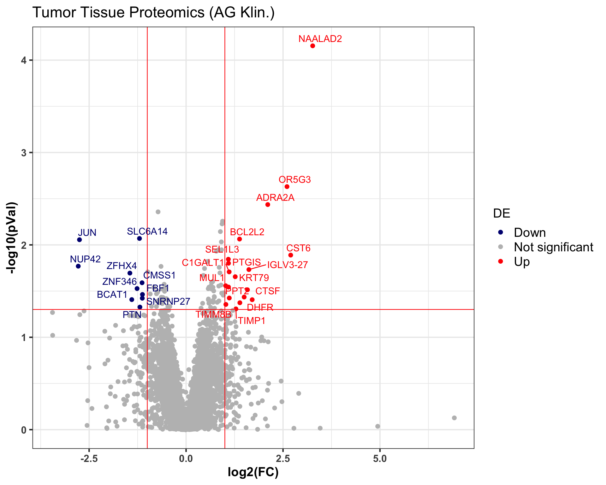
Log2-FC cutoffs are 2 (FC=4) and -2 (FC=0.25).
# NTP
volTab <- proNormalVolTab_Klin
volTab['DE'] <- 'Not significant'
volTab$DE[volTab$pVal <= 0.05 & volTab$logFC > 2] <- 'Up'
volTab$DE[volTab$pVal <= 0.05 & volTab$logFC < -2] <- 'Down'
volTab['Label'] <- NA
label4SigFeats <- volTab$Gene[volTab$DE != 'Not significant']
volTab$Label[volTab$DE != 'Not significant'] <- label4SigFeats
ggplot(volTab, aes(x=logFC, y=-log10(pVal), col=DE, label=Label)) +
geom_point(size = 2) +
geom_hline(yintercept = -log10(0.05), col = 'red', linewidth = 0.4) +
geom_vline(xintercept = c(-2, 2), col = 'red', linewidth = 0.4) +
geom_text_repel(size = 4, show.legend = F) +
scale_color_manual(values = c('navy', 'grey', 'red')) +
labs(x = 'log2(FC)', title = 'Normal Tissue Proteomics (AG Klin.)') +
th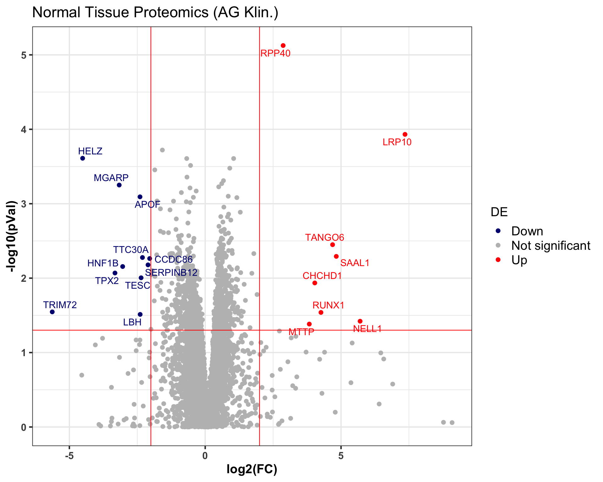
Log2-FC cutoffs are 0.5 (FC=1.41) and -0.5 (FC=0.71).
# BPP
volTab <- proBaseVolTab_Kri
volTab['DE'] <- 'Not significant'
volTab$DE[volTab$pVal <= 0.05 & volTab$logFC > 0.5] <- 'Up'
volTab$DE[volTab$pVal <= 0.05 & volTab$logFC < -0.5] <- 'Down'
volTab['Label'] <- NA
label4SigFeats <- volTab$Gene[volTab$DE != 'Not significant']
volTab$Label[volTab$DE != 'Not significant'] <- label4SigFeats
ggplot(volTab, aes(x=logFC, y=-log10(pVal), col=DE, label=Label)) +
geom_point(size = 2) +
geom_hline(yintercept = -log10(0.05), col = 'red', linewidth = 0.4) +
geom_vline(xintercept = c(-0.5, 0.5), col = 'red', linewidth = 0.4) +
geom_text_repel(size = 4, show.legend = F) +
scale_color_manual(values = c('navy', 'grey', 'red')) +
labs(x = 'log2(FC)', title = 'New Baseline Plasma Proteomics (AG Krij.)') +
th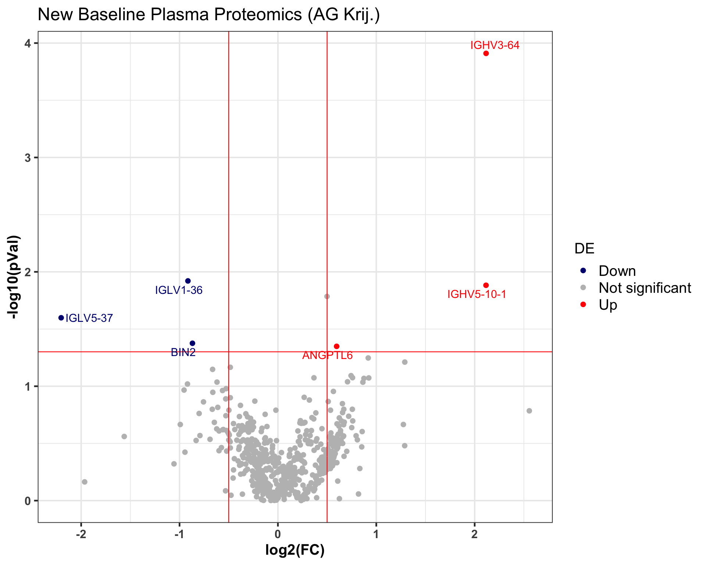
Log2-FC cutoffs are 0.5 (FC=1.41) and -0.5 (FC=0.71).
# FPP
volTab <- proFoloVolTab_Kri
volTab['DE'] <- 'Not significant'
volTab$DE[volTab$pVal <= 0.05 & volTab$logFC > 0.5] <- 'Up'
volTab$DE[volTab$pVal <= 0.05 & volTab$logFC < -0.5] <- 'Down'
volTab['Label'] <- NA
label4SigFeats <- volTab$Gene[volTab$DE != 'Not significant']
volTab$Label[volTab$DE != 'Not significant'] <- label4SigFeats
ggplot(volTab, aes(x=logFC, y=-log10(pVal), col=DE, label=Label)) +
geom_point(size = 2) +
geom_hline(yintercept = -log10(0.05), col = 'red', linewidth = 0.4) +
geom_vline(xintercept = c(-0.5, 0.5), col = 'red', linewidth = 0.4) +
geom_text_repel(size = 4, show.legend = F) +
scale_color_manual(values = c('navy', 'grey', 'red')) +
labs(x = 'log2(FC)', title = 'New Follow-up Plasma Proteomics (AG Krij.)') +
th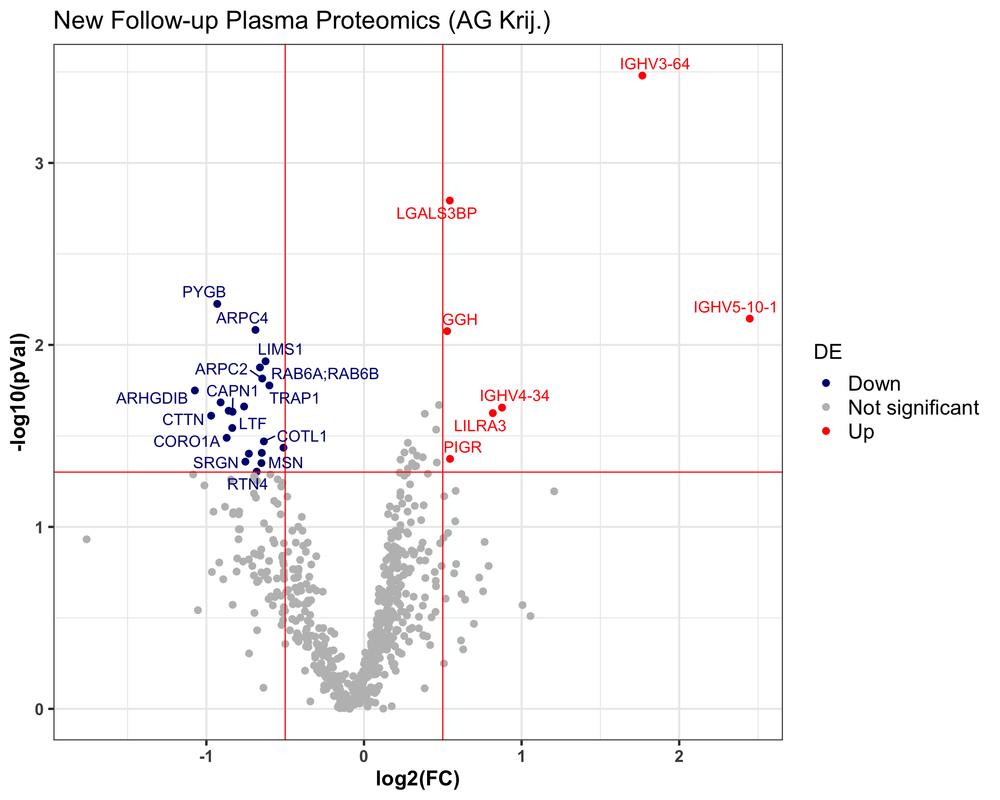
Display proportions of significant features that can separate cancer recurrence and non-recurrence patient groups for all considered Method Development datasets, including Targeted/Untargeted Plasma/Tissue Metabolomics and Lipidomics (6 datasets) and DIA/DDA Plasma/Tissue Proteomics (6 datasets). Alpha was set to 0.05 and numbers after bars indicate feature sizes. Note that results were not corrected through any p-value adjustment method and linear models accounted only for recurrence, so there may be abundant false positives.
# Prepare significant feature lists for all considered datasets
# NO MISSINGNESS
# Targeted Plasma Metabolomics
metaBaseRes_Hell <- doSOA(metaBase_Hell, meta_var = 'Recurrence', use_limma = T, alpha = 0.05)
metaFoloRes_Hell <- doSOA(metaFolo_Hell, meta_var = 'Recurrence', use_limma = T, alpha = 0.05)
# Targeted Tissue Metabolomics
metaTumorRes_Hell <- doSOA(metaTumor_Hell, meta_var = 'Recurrence', use_limma = T, alpha = 0.05)
metaNormalRes_Hell <- doSOA(metaNormal_Hell, meta_var = 'Recurrence', use_limma = T, alpha = 0.05)
# DDA Plasma Proteomics
proBaseRes_Kri_DDA <- doSOA(proBase_Kri_DDA, meta_var = 'Recurrence', use_limma = T, alpha = 0.05)
proFoloRes_Kri_DDA <- doSOA(proFolo_Kri_DDA, meta_var = 'Recurrence', use_limma = T, alpha = 0.05)
# DDA Tissue Proteomics
proTumorRes_Kri_DDA <- doSOA(proTumor_Kri_DDA, meta_var = 'Recurrence', use_limma = T, alpha = 0.05)
proNormalRes_Kri_DDA <- doSOA(proNormal_Kri_DDA, meta_var = 'Recurrence', use_limma = T, alpha = 0.05)
# WITH MISSINGNESS
# Untargeted Plasma Metabolomics
metaBaseRes_Hopf <- doSOA(metaBase_Hopf, meta_var = 'Recurrence', use_proDA = T, alpha = 0.05)
metaFoloRes_Hopf <- doSOA(metaFolo_Hopf, meta_var = 'Recurrence', use_proDA = T, alpha = 0.05)
# Untargeted Tissue Metabolomics
metaTumorRes_Hopf <- doSOA(metaTumor_Hopf, meta_var = 'Recurrence', use_proDA = T, alpha = 0.05)
metaNormalRes_Hopf <- doSOA(metaNormal_Hopf, meta_var = 'Recurrence', use_proDA = T, alpha = 0.05)
# Untargeted Plasma Lipidomics
lipBaseRes_Hopf <- doSOA(lipBase_Hopf, meta_var = 'Recurrence', use_proDA = T, alpha = 0.05)
lipFoloRes_Hopf <- doSOA(lipFolo_Hopf, meta_var = 'Recurrence', use_proDA = T, alpha = 0.05)
# Untargeted Tissue Lipidomics
lipTumorRes_Hopf <- doSOA(lipTumor_Hopf, meta_var = 'Recurrence', use_proDA = T, alpha = 0.05)
lipNormalRes_Hopf <- doSOA(lipNormal_Hopf, meta_var = 'Recurrence', use_proDA = T, alpha = 0.05)
# DIA Plasma Proteomics (AG Krijgsveld)
proBaseRes_Kri_DIA <- doSOA(proBase_Kri_DIA, meta_var = 'Recurrence', use_proDA = T, alpha = 0.05)
proFoloRes_Kri_DIA <- doSOA(proFolo_Kri_DIA, meta_var = 'Recurrence', use_proDA = T, alpha = 0.05)
# New DIA Plasma Proteomics (AG Krijgsveld)
new_proBaseRes_Kri_DIA <- proBaseRes$SOA.res
new_proFoloRes_Kri_DIA <- proFoloRes$SOA.res
# new_proBaseRes_Kri_DIA <- doSOA(new_proBase_Kri_DIA, meta_var = 'Recurrence', use_proDA = T, alpha = 0.05)
# new_proFoloRes_Kri_DIA <- doSOA(new_proFolo_Kri_DIA, meta_var = 'Recurrence', use_proDA = T, alpha = 0.05)
# New DIA Tissue Proteomics (AG Krijgsveld)
new_proTumorRes_Kri_DIA <- proTumorRes$SOA.res
new_proNormalRes_Kri_DIA <- proNormalRes$SOA.res
# new_proTumorRes_Kri_DIA <- doSOA(new_proTumor_Kri_DIA, meta_var = 'Recurrence', use_proDA = T, alpha = 0.05)
# new_proNormalRes_Kri_DIA <- doSOA(new_proNormal_Kri_DIA, meta_var = 'Recurrence', use_proDA = T, alpha = 0.05)
# DIA Tissue Proteomics (AG Klingmüller)
proTumorRes_Klin_DIA <- proTumorRes_Klin$SOA.res
proNormalRes_Klin_DIA <- proNormalRes_Klin$SOA.res
# proTumorRes_Klin_DIA <- doSOA(proTumor_Klin_DIA, meta_var = 'Recurrence', use_proDA = T, alpha = 0.05)
# proNormalRes_Klin_DIA <- doSOA(proNormal_Klin_DIA, meta_var = 'Recurrence', use_proDA = T, alpha = 0.05)# Make barplot about proportion of significant features in each dataset
# Compute proportion of significant features
metaBaseSigFeats_Hell <- nrow(metaBaseRes_Hell$featSigAssoRes) / nrow(metaBaseRes_Hell$data) * 100
metaFoloSigFeats_Hell <- nrow(metaFoloRes_Hell$featSigAssoRes) / nrow(metaFoloRes_Hell$data) * 100
metaTumorSigFeats_Hell <- nrow(metaTumorRes_Hell$featSigAssoRes) / nrow(metaTumorRes_Hell$data) * 100
metaNormalSigFeats_Hell <- nrow(metaNormalRes_Hell$featSigAssoRes) / nrow(metaNormalRes_Hell$data) * 100
proBaseSigFeats_Kri_DDA <- nrow(proBaseRes_Kri_DDA$featSigAssoRes) / nrow(proBaseRes_Kri_DDA$data) * 100
proFoloSigFeats_Kri_DDA <- nrow(proFoloRes_Kri_DDA$featSigAssoRes) / nrow(proFoloRes_Kri_DDA$data) * 100
proTumorSigFeats_Kri_DDA <- nrow(proTumorRes_Kri_DDA$featSigAssoRes) / nrow(proTumorRes_Kri_DDA$data) * 100
proNormalSigFeats_Kri_DDA <- nrow(proNormalRes_Kri_DDA$featSigAssoRes) / nrow(proNormalRes_Kri_DDA$data) * 100
metaBaseSigFeats_Hopf <- nrow(metaBaseRes_Hopf$featSigAssoRes) / nrow(metaBaseRes_Hopf$data) * 100
metaFoloSigFeats_Hopf <- nrow(metaFoloRes_Hopf$featSigAssoRes) / nrow(metaFoloRes_Hopf$data) * 100
metaTumorSigFeats_Hopf <- nrow(metaTumorRes_Hopf$featSigAssoRes) / nrow(metaTumorRes_Hopf$data) * 100
metaNormalSigFeats_Hopf <- nrow(metaNormalRes_Hopf$featSigAssoRes) / nrow(metaNormalRes_Hopf$data) * 100
lipBaseSigFeats_Hopf <- nrow(lipBaseRes_Hopf$featSigAssoRes) / nrow(lipBaseRes_Hopf$data) * 100
lipFoloSigFeats_Hopf <- nrow(lipFoloRes_Hopf$featSigAssoRes) / nrow(lipFoloRes_Hopf$data) * 100
lipTumorSigFeats_Hopf <- nrow(lipTumorRes_Hopf$featSigAssoRes) / nrow(lipTumorRes_Hopf$data) * 100
lipNormalSigFeats_Hopf <- nrow(lipNormalRes_Hopf$featSigAssoRes) / nrow(lipNormalRes_Hopf$data) * 100
proBaseSigFeats_Kri_DIA <- nrow(proBaseRes_Kri_DIA$featSigAssoRes) / nrow(proBaseRes_Kri_DIA$data) * 100
proFoloSigFeats_Kri_DIA <- nrow(proFoloRes_Kri_DIA$featSigAssoRes) / nrow(proFoloRes_Kri_DIA$data) * 100
new_proBaseSigFeats_Kri_DIA <- nrow(new_proBaseRes_Kri_DIA$featSigAssoRes) /
nrow(new_proBaseRes_Kri_DIA$data) * 100
new_proFoloSigFeats_Kri_DIA <- nrow(new_proFoloRes_Kri_DIA$featSigAssoRes) /
nrow(new_proFoloRes_Kri_DIA$data) * 100
new_proTumorSigFeats_Kri_DIA <- nrow(new_proTumorRes_Kri_DIA$featSigAssoRes) /
nrow(new_proTumorRes_Kri_DIA$data) * 100
new_proNormalSigFeats_Kri_DIA <- nrow(new_proNormalRes_Kri_DIA$featSigAssoRes) /
nrow(new_proNormalRes_Kri_DIA$data) * 100
proTumorSigFeats_Klin_DIA <- nrow(proTumorRes_Klin_DIA$featSigAssoRes) /
nrow(proTumorRes_Klin_DIA$data) * 100
proNormalSigFeats_Klin_DIA <- nrow(proNormalRes_Klin_DIA$featSigAssoRes) /
nrow(proNormalRes_Klin_DIA$data) * 100
# Prepare needed information for barplot
proportion <- c(metaBaseSigFeats_Hell, metaFoloSigFeats_Hell,
metaBaseSigFeats_Hopf, metaFoloSigFeats_Hopf,
lipBaseSigFeats_Hopf, lipFoloSigFeats_Hopf,
proBaseSigFeats_Kri_DIA, proFoloSigFeats_Kri_DIA,
new_proBaseSigFeats_Kri_DIA, new_proFoloSigFeats_Kri_DIA,
proBaseSigFeats_Kri_DDA, proFoloSigFeats_Kri_DDA,
metaTumorSigFeats_Hell, metaNormalSigFeats_Hell,
metaTumorSigFeats_Hopf, metaNormalSigFeats_Hopf,
lipTumorSigFeats_Hopf, lipNormalSigFeats_Hopf,
proTumorSigFeats_Klin_DIA, proNormalSigFeats_Klin_DIA,
new_proTumorSigFeats_Kri_DIA, new_proNormalSigFeats_Kri_DIA,
proTumorSigFeats_Kri_DDA, proNormalSigFeats_Kri_DDA)
dat <- c('Targeted Metab.', 'Targeted Metab.',
'Untargeted Metab.', 'Untargeted Metab.',
'Untargeted Lipid.', 'Untargeted Lipid.',
'DIA Pro.', 'DIA Pro.',
'New DIA Pro.', 'New DIA Pro.',
'DDA Pro.', 'DDA Pro.',
'Targeted Metab.', 'Targeted Metab.',
'Untargeted Metab.', 'Untargeted Metab.',
'Untargeted Lipid.', 'Untargeted Lipid.',
'DIA Pro.', 'DIA Pro.',
'New DIA Pro.', 'New DIA Pro.',
'DDA Pro.', 'DDA Pro.')
datModal <- c(rep(c('Baseline', 'Follow-up'), 6), rep(c('Tumor', 'Normal'), 6))
datOf <- c(rep('Plasma', 12), rep('Tissue', 12))
numFeat <- c(c(nrow(metaBaseRes_Hell$data), NA), c(nrow(metaBaseRes_Hopf$data), NA),
c(NA, nrow(lipFoloRes_Hopf$data)), c(nrow(proBaseRes_Kri_DIA$data), NA),
c(NA, nrow(new_proFoloRes_Kri_DIA$data)), c(nrow(proBaseRes_Kri_DDA$data), NA),
c(nrow(metaTumorRes_Hell$data), NA), c(NA, nrow(metaNormalRes_Hopf$data)),
c(NA, nrow(lipNormalRes_Hopf$data)), c(NA, nrow(proNormalRes_Klin_DIA$data)),
c(NA, nrow(new_proNormalRes_Kri_DIA$data)), c(nrow(proTumorRes_Kri_DDA$data), NA))
sigFeatPropTab <- data.frame(Data = factor(dat, levels = c('Targeted Metab.',
'Untargeted Metab.',
'Untargeted Lipid.',
'DIA Pro.', 'New DIA Pro.', 'DDA Pro.')),
Data_modality = datModal,
Data_of = datOf,
Proportion = proportion,
Feature_number = numFeat)
ggplot(sigFeatPropTab, aes(x=Data, y=Proportion, fill = Data_modality, label=Feature_number)) +
geom_bar(stat = 'identity', position=position_dodge()) +
geom_text(size = 6, vjust = -0.17) +
facet_wrap(~Data_of) +
labs(x = 'Data', y = 'Percentage (%)', title = 'Proportion of Cancer Recurrence-Related Features') +
scale_fill_manual(name = 'Sample Condition',
values = c('navy', 'grey60', 'firebrick', 'forestgreen'),
breaks = c('Baseline', 'Follow-up', 'Normal', 'Tumor')) +
th +
theme(axis.text.x = element_text(angle = 65, vjust = 1, hjust = 1),
strip.text = element_text(size = 16, face = 'bold'))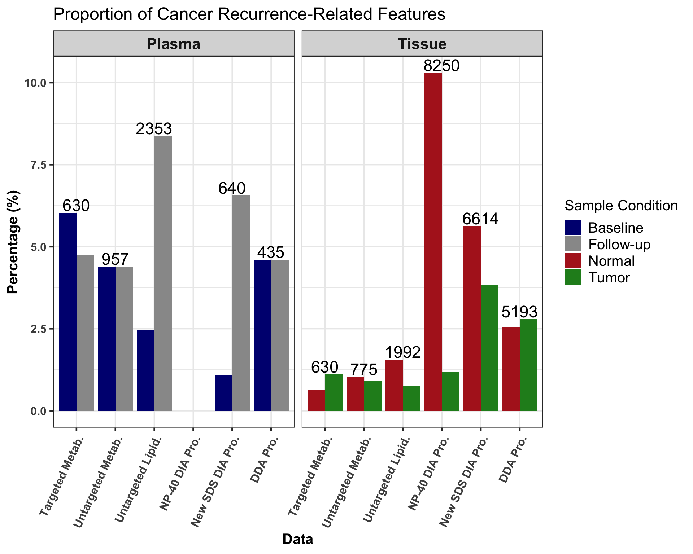
# theme(strip.text = element_text(size = 26, face = 'bold'), axis.title = element_text(size = 26),
# axis.text.x = element_text(size = 20, angle = 70, vjust = 1, hjust = 1), axis.text.y = element_text(size = 18),
# legend.title = element_text(size = 24), legend.text = element_text(size = 24),
# panel.grid.minor = element_blank(), panel.grid.major.x = element_blank())
# ggsave('./output/latest/percentage_sigFeats.png', device = 'png', dpi = 400, height = 8, width = 18)# Generate feature association test result tables
# Crude functions
stats_recur <- function(se, seMedi, smpType, featAnno) {
if (smpType == 'Plasma') {
# Extract needed information from median normalized SE object
seMedi <- summExp2df(seMedi, row_id = 'Feature', col_id = 'Sample') %>%
dplyr::select(Feature, Value, Condition, Recurrence) %>%
dplyr::mutate(Condition = dplyr::case_when(Condition == 'Baseline' ~ 'Baseline',
Condition != 'Baseline' ~ 'Follow-up'))
# Baseline samples
# Compute log2(FC)
baseLogFC <- dplyr::filter(seMedi, Condition == 'Baseline') %>%
dplyr::group_by(Feature, Recurrence) %>%
dplyr::summarise(Mean = mean(Value, na.rm = T)) %>%
dplyr::ungroup() %>%
tidyr::pivot_wider(names_from = 'Recurrence', values_from = 'Mean') %>%
dplyr::mutate(log2FC = Yes - No,
log2FC = as.numeric(formatC(log2FC, format = 'g', digits = 3))) %>%
dplyr::select(Feature, log2FC)
# Conduct association test
base <- se[, which(colData(se)$Condition == 'Baseline')]
baseRes <- doSOA(base, meta_var = 'Recurrence', use_proDA = T)
baseFeatAsso <- baseRes$featAssoRes %>%
dplyr::select(Var1, pVal, pValAdj, Stat) %>%
dplyr::rename(Feature = Var1, `tStat (proDA)` = Stat) %>%
# Merge results
dplyr::left_join(baseLogFC, by = 'Feature') %>%
dplyr::left_join(featAnno, by = 'Feature') %>%
dplyr::relocate(Gene, .after = Feature)
# Follow-up samples
foloLogFC <- dplyr::filter(seMedi, Condition != 'Baseline') %>%
dplyr::group_by(Feature, Recurrence) %>%
dplyr::summarise(Mean = mean(Value, na.rm = T)) %>%
dplyr::ungroup() %>%
tidyr::pivot_wider(names_from = 'Recurrence', values_from = 'Mean') %>%
dplyr::mutate(log2FC = Yes - No,
log2FC = as.numeric(formatC(log2FC, format = 'g', digits = 3))) %>%
dplyr::select(Feature, log2FC)
folo <- se[, which(colData(se)$Condition != 'Baseline')]
foloRes <- doSOA(folo, meta_var = 'Recurrence', use_proDA = T)
foloFeatAsso <- foloRes$featAssoRes %>%
dplyr::select(Var1, pVal, pValAdj, Stat) %>%
dplyr::rename(Feature = Var1, `tStat (proDA)` = Stat) %>%
dplyr::left_join(foloLogFC, by = 'Feature') %>%
dplyr::left_join(featAnno, by = 'Feature') %>%
dplyr::relocate(Gene, .after = Feature)
tumorFeatAsso <- NULL
normalFeatAsso <- NULL
} else if (smpType == 'Tissue') {
seMedi <- summExp2df(seMedi, row_id = 'Feature', col_id = 'Sample') %>%
dplyr::select(Feature, Value, Condition, Recurrence)
# Tumor samples
tumorLogFC <- dplyr::filter(seMedi, Condition == 'Tumor') %>%
dplyr::group_by(Feature, Recurrence) %>%
dplyr::summarise(Mean = mean(Value, na.rm = T)) %>%
dplyr::ungroup() %>%
tidyr::pivot_wider(names_from = 'Recurrence', values_from = 'Mean') %>%
dplyr::mutate(log2FC = Yes - No,
log2FC = as.numeric(formatC(log2FC, format = 'g', digits = 3))) %>%
dplyr::select(Feature, log2FC)
tumor <- se[, which(colData(se)$Condition == 'Tumor')]
tumorRes <- doSOA(tumor, meta_var = 'Recurrence', use_proDA = T)
tumorFeatAsso <- tumorRes$featAssoRes %>%
dplyr::select(Var1, pVal, pValAdj, Stat) %>%
dplyr::rename(Feature = Var1, `tStat (proDA)` = Stat) %>%
dplyr::left_join(tumorLogFC, by = 'Feature') %>%
dplyr::left_join(featAnno, by = 'Feature') %>%
dplyr::relocate(Gene, .after = Feature)
# Normal samples
normalLogFC <- dplyr::filter(seMedi, Condition == 'Normal') %>%
dplyr::group_by(Feature, Recurrence) %>%
dplyr::summarise(Mean = mean(Value, na.rm = T)) %>%
dplyr::ungroup() %>%
tidyr::pivot_wider(names_from = 'Recurrence', values_from = 'Mean') %>%
dplyr::mutate(log2FC = Yes - No,
log2FC = as.numeric(formatC(log2FC, format = 'g', digits = 3))) %>%
dplyr::select(Feature, log2FC)
normal <- se[, which(colData(se)$Condition == 'Normal')]
normalRes <- doSOA(normal, meta_var = 'Recurrence', use_proDA = T)
normalFeatAsso <- normalRes$featAssoRes %>%
dplyr::select(Var1, pVal, pValAdj, Stat) %>%
dplyr::rename(Feature = Var1, `tStat (proDA)` = Stat) %>%
dplyr::left_join(normalLogFC, by = 'Feature') %>%
dplyr::left_join(featAnno, by = 'Feature') %>%
dplyr::relocate(Gene, .after = Feature)
baseFeatAsso <- NULL
foloFeatAsso <- NULL
}
return(list(baseFeatAsso = baseFeatAsso, foloFeatAsso = foloFeatAsso,
tumorFeatAsso = tumorFeatAsso, normalFeatAsso = normalFeatAsso))
}
stats_condi <- function(se, seMedi, smpType, featAnno) {
if (smpType == 'Plasma') {
# Extract needed information from median normalized SE object
seMedi <- summExp2df(seMedi, row_id = 'Feature', col_id = 'Sample') %>%
dplyr::select(Feature, Value, Condition, Recurrence) %>%
dplyr::mutate(Condition = dplyr::case_when(Condition == 'Baseline' ~ 'Baseline',
Condition != 'Baseline' ~ 'Follow-up'))
# Recurrence samples
# Compute log2(FC)
recurrenceLogFC <- dplyr::filter(seMedi, Recurrence == 'Yes') %>%
dplyr::group_by(Feature, Condition) %>%
dplyr::summarise(Mean = mean(Value, na.rm = T)) %>%
dplyr::ungroup() %>%
tidyr::pivot_wider(names_from = 'Condition', values_from = 'Mean') %>%
dplyr::mutate(log2FC = `Follow-up` - Baseline,
log2FC = as.numeric(formatC(log2FC, format = 'g', digits = 3))) %>%
dplyr::select(Feature, log2FC)
# Conduct association test
recurrence <- se[, which(colData(se)$Recurrence == 'Yes')]
recurrenceRes <- doSOA(recurrence, meta_var = 'Condition', use_proDA = T)
recurrenceFeatAsso <- recurrenceRes$featAssoRes %>%
dplyr::select(Var1, pVal, pValAdj, Stat) %>%
dplyr::rename(Feature = Var1, `tStat (proDA)` = Stat) %>%
# Merge results
dplyr::left_join(recurrenceLogFC, by = 'Feature') %>%
dplyr::left_join(featAnno, by = 'Feature') %>%
dplyr::relocate(Gene, .after = Feature)
# Non-recurrence samples
nonrecurLogFC <- dplyr::filter(seMedi, Recurrence == 'No') %>%
dplyr::group_by(Feature, Condition) %>%
dplyr::summarise(Mean = mean(Value, na.rm = T)) %>%
dplyr::ungroup() %>%
tidyr::pivot_wider(names_from = 'Condition', values_from = 'Mean') %>%
dplyr::mutate(log2FC = `Follow-up` - Baseline,
log2FC = as.numeric(formatC(log2FC, format = 'g', digits = 3))) %>%
dplyr::select(Feature, log2FC)
nonrecur <- se[, which(colData(se)$Recurrence == 'No')]
nonrecurRes <- doSOA(nonrecur, meta_var = 'Condition', use_proDA = T)
nonrecurFeatAsso <- nonrecurRes$featAssoRes %>%
dplyr::select(Var1, pVal, pValAdj, Stat) %>%
dplyr::rename(Feature = Var1, `tStat (proDA)` = Stat) %>%
dplyr::left_join(nonrecurLogFC, by = 'Feature') %>%
dplyr::left_join(featAnno, by = 'Feature') %>%
dplyr::relocate(Gene, .after = Feature)
} else if (smpType == 'Tissue') {
seMedi <- summExp2df(seMedi, row_id = 'Feature', col_id = 'Sample') %>%
dplyr::select(Feature, Value, Condition, Recurrence)
# Recurrence samples
recurrenceLogFC <- dplyr::filter(seMedi, Recurrence == 'Yes') %>%
dplyr::group_by(Feature, Condition) %>%
dplyr::summarise(Mean = mean(Value, na.rm = T)) %>%
dplyr::ungroup() %>%
tidyr::pivot_wider(names_from = 'Condition', values_from = 'Mean') %>%
dplyr::mutate(log2FC = Tumor - Normal,
log2FC = as.numeric(formatC(log2FC, format = 'g', digits = 3))) %>%
dplyr::select(Feature, log2FC)
recurrence <- se[, which(colData(se)$Recurrence == 'Yes')]
recurrenceRes <- doSOA(recurrence, meta_var = 'Condition', use_proDA = T)
recurrenceFeatAsso <- recurrenceRes$featAssoRes %>%
dplyr::select(Var1, pVal, pValAdj, Stat) %>%
dplyr::rename(Feature = Var1, `tStat (proDA)` = Stat) %>%
dplyr::left_join(recurrenceLogFC, by = 'Feature') %>%
dplyr::left_join(featAnno, by = 'Feature') %>%
dplyr::relocate(Gene, .after = Feature)
# Non-recurrence samples
nonrecurLogFC <- dplyr::filter(seMedi, Recurrence == 'No') %>%
dplyr::group_by(Feature, Condition) %>%
dplyr::summarise(Mean = mean(Value, na.rm = T)) %>%
dplyr::ungroup() %>%
tidyr::pivot_wider(names_from = 'Condition', values_from = 'Mean') %>%
dplyr::mutate(log2FC = Tumor - Normal,
log2FC = as.numeric(formatC(log2FC, format = 'g', digits = 3))) %>%
dplyr::select(Feature, log2FC)
nonrecur <- se[, which(colData(se)$Recurrence == 'No')]
nonrecurRes <- doSOA(nonrecur, meta_var = 'Condition', use_proDA = T)
nonrecurFeatAsso <- nonrecurRes$featAssoRes %>%
dplyr::select(Var1, pVal, pValAdj, Stat) %>%
dplyr::rename(Feature = Var1, `tStat (proDA)` = Stat) %>%
dplyr::left_join(nonrecurLogFC, by = 'Feature') %>%
dplyr::left_join(featAnno, by = 'Feature') %>%
dplyr::relocate(Gene, .after = Feature)
}
return(list(recurrenceFeatAsso = recurrenceFeatAsso, nonrecurFeatAsso = nonrecurFeatAsso))
}
# Load preprocessed data
proTissue_Klin <- readRDS('./data/MethodDev/AG_Klingmueller/proTissueVsn.rds')
proTissueMedi_Klin <- readRDS('./data/MethodDev/AG_Klingmueller/proTissueMedi.rds')
proTissue <- readRDS('./data/MethodDev/AG_Krijgsveld/new_proTissueVsn.rds')
proTissueMedi <- readRDS('./data/MethodDev/AG_Krijgsveld/new_proTissueMedi.rds')
proPlasma <- readRDS('./data/MethodDev/AG_Krijgsveld/new_proPlasmaVsn.rds')
proPlasmaMedi <- readRDS('./data/MethodDev/AG_Krijgsveld/new_proPlasmaMedi.rds')
# Prepare feature annotation information
proTissueFeatAnno_Klin <- tibble::as_tibble(rowData(proTissue_Klin), rownames = 'Feature') %>%
dplyr::rename(Gene = PG.Genes)
proTissueFeatAnno <- tibble::as_tibble(rowData(proTissue), rownames = 'Feature') %>%
dplyr::select(Feature, Genes) %>%
dplyr::rename(Gene = Genes)
proPlasmaFeatAnno <- tibble::as_tibble(rowData(proPlasma), rownames = 'Feature') %>%
dplyr::select(Feature, Genes) %>%
dplyr::rename(Gene = Genes)
# Generate feature association test result tables
dia.tissue.pro_recur_Klin <- stats_recur(proTissue_Klin, proTissueMedi_Klin, 'Tissue',
proTissueFeatAnno_Klin)
dia.tissue.pro_recur <- stats_recur(proTissue, proTissueMedi, 'Tissue', proTissueFeatAnno)
dia.plasma.pro_recur <- stats_recur(proPlasma, proPlasmaMedi, 'Plasma', proPlasmaFeatAnno)
dia.tissue.pro_condi_Klin <- stats_condi(proTissue_Klin, proTissueMedi_Klin, 'Tissue',
proTissueFeatAnno_Klin)
dia.tissue.pro_condi <- stats_condi(proTissue, proTissueMedi, 'Tissue', proTissueFeatAnno)
dia.plasma.pro_condi <- stats_condi(proPlasma, proPlasmaMedi, 'Plasma', proPlasmaFeatAnno)
# Store tables in a list for exporting them as an Excel file
featAssoSheets <- list(Recur_DIA.Tumor.Tissue.Pro.Klin = dia.tissue.pro_recur_Klin$tumorFeatAsso,
Recur_DIA.Norm.Tissue.Pro.Klin = dia.tissue.pro_recur_Klin$normalFeatAsso,
Recur_DIA.Tumor.Tissue.Pro.Krij = dia.tissue.pro_recur$tumorFeatAsso,
Recur_DIA.Norm.Tissue.Pro.Krij = dia.tissue.pro_recur$normalFeatAsso,
Recur_DIA.Base.Plasma.Pro.Krij = dia.plasma.pro_recur$baseFeatAsso,
Recur_DIA.Folo.Plasma.Pro.Krij = dia.plasma.pro_recur$foloFeatAsso,
Condi_DIA.Recur.Tissue.Pro.Klin = dia.tissue.pro_condi_Klin$recurrenceFeatAsso,
Condi_DIA.NonRe.Tissue.Pro.Klin = dia.tissue.pro_condi_Klin$nonrecurFeatAsso,
Condi_DIA.Recur.Tissue.Pro.Krij = dia.tissue.pro_condi$recurrenceFeatAsso,
Condi_DIA.NonRe.Tissue.Pro.Krij = dia.tissue.pro_condi$nonrecurFeatAsso,
Time_DIA.Recur.Plasma.Pro.Krij = dia.plasma.pro_condi$recurrenceFeatAsso,
Time_DIA.NonRe.Plasma.Pro.Krij = dia.plasma.pro_condi$nonrecurFeatAsso)
openxlsx::write.xlsx(featAssoSheets, file = './data/MethodDev/stats/featAsso/DIA_Pro.xlsx')
sessionInfo()R version 4.3.0 (2023-04-21)
Platform: aarch64-apple-darwin20 (64-bit)
Running under: macOS Ventura 13.4
Matrix products: default
BLAS: /Library/Frameworks/R.framework/Versions/4.3-arm64/Resources/lib/libRblas.0.dylib
LAPACK: /Library/Frameworks/R.framework/Versions/4.3-arm64/Resources/lib/libRlapack.dylib; LAPACK version 3.11.0
locale:
[1] en_US.UTF-8/en_US.UTF-8/en_US.UTF-8/C/en_US.UTF-8/en_US.UTF-8
time zone: Europe/Berlin
tzcode source: internal
attached base packages:
[1] stats4 stats graphics grDevices utils datasets methods
[8] base
other attached packages:
[1] ggplotify_0.1.2 visdat_0.6.0
[3] vsn_3.68.0 lubridate_1.9.2
[5] forcats_1.0.0 stringr_1.5.0
[7] dplyr_1.1.3 purrr_1.0.2
[9] readr_2.1.4 tidyr_1.3.0
[11] tibble_3.2.1 tidyverse_2.0.0
[13] openxlsx_4.2.5.2 ggrepel_0.9.4
[15] ggplot2_3.4.4 pheatmap_1.0.12
[17] proDA_1.14.0 limma_3.56.2
[19] pcaMethods_1.92.0 SummarizedExperiment_1.30.2
[21] Biobase_2.60.0 GenomicRanges_1.52.0
[23] GenomeInfoDb_1.36.1 IRanges_2.34.1
[25] S4Vectors_0.38.1 BiocGenerics_0.46.0
[27] MatrixGenerics_1.12.2 matrixStats_1.0.0
[29] workflowr_1.7.0
loaded via a namespace (and not attached):
[1] bitops_1.0-7 rlang_1.1.1 magrittr_2.0.3
[4] git2r_0.32.0 compiler_4.3.0 getPass_0.2-2
[7] callr_3.7.3 vctrs_0.6.4 pkgconfig_2.0.3
[10] crayon_1.5.2 fastmap_1.1.1 backports_1.4.1
[13] XVector_0.40.0 labeling_0.4.3 utf8_1.2.4
[16] promises_1.2.0.1 rmarkdown_2.23 tzdb_0.4.0
[19] ps_1.7.5 preprocessCore_1.62.1 xfun_0.39
[22] zlibbioc_1.46.0 cachem_1.0.8 jsonlite_1.8.7
[25] highr_0.10 later_1.3.1 DelayedArray_0.26.6
[28] broom_1.0.5 R6_2.5.1 bslib_0.5.0
[31] stringi_1.7.12 RColorBrewer_1.1-3 car_3.1-2
[34] jquerylib_0.1.4 Rcpp_1.0.11 knitr_1.43
[37] httpuv_1.6.11 Matrix_1.6-0 timechange_0.2.0
[40] tidyselect_1.2.0 abind_1.4-5 rstudioapi_0.15.0
[43] yaml_2.3.7 affy_1.78.1 processx_3.8.2
[46] lattice_0.21-8 plyr_1.8.8 withr_2.5.1
[49] evaluate_0.21 gridGraphics_0.5-1 zip_2.3.0
[52] pillar_1.9.0 affyio_1.70.0 BiocManager_1.30.21
[55] ggpubr_0.6.0 carData_3.0-5 whisker_0.4.1
[58] generics_0.1.3 rprojroot_2.0.3 RCurl_1.98-1.12
[61] hms_1.1.3 munsell_0.5.0 scales_1.2.1
[64] extraDistr_1.9.1 glue_1.6.2 tools_4.3.0
[67] ggsignif_0.6.4 fs_1.6.2 grid_4.3.0
[70] colorspace_2.1-0 GenomeInfoDbData_1.2.10 cli_3.6.1
[73] fansi_1.0.5 S4Arrays_1.0.4 gtable_0.3.4
[76] rstatix_0.7.2 yulab.utils_0.0.6 sass_0.4.7
[79] digest_0.6.33 farver_2.1.1 htmltools_0.5.5
[82] lifecycle_1.0.3 httr_1.4.6